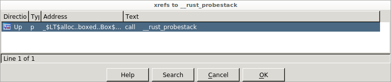
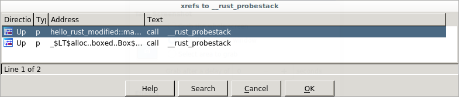
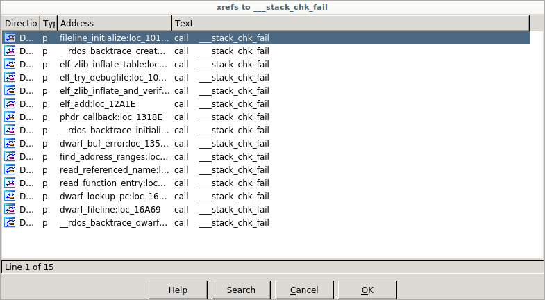

What is rustc?
Welcome to "The rustc book"! rustc is the compiler for the Rust programming
language, provided by the project itself. Compilers take your source code and
produce binary code, either as a library or executable.
Most Rust programmers don't invoke rustc directly, but instead do it through
Cargo. It's all in service of rustc though! If you
want to see how Cargo calls rustc, you can
$ cargo build --verbose
And it will print out each rustc invocation. This book can help you
understand what each of these options does. Additionally, while most
Rustaceans use Cargo, not all do: sometimes they integrate rustc into other
build systems. This book should provide a guide to all of the options you'd
need to do so.
Basic usage
Let's say you've got a little hello world program in a file hello.rs:
fn main() { println!("Hello, world!"); }
To turn this source code into an executable, you can use rustc:
$ rustc hello.rs
$ ./hello # on a *NIX
$ .\hello.exe # on Windows
Note that we only ever pass rustc the crate root, not every file we wish
to compile. For example, if we had a main.rs that looked like this:
mod foo;
fn main() {
foo::hello();
}
And a foo.rs that had this:
#![allow(unused)] fn main() { pub fn hello() { println!("Hello, world!"); } }
To compile this, we'd run this command:
$ rustc main.rs
No need to tell rustc about foo.rs; the mod statements give it
everything that it needs. This is different than how you would use a C
compiler, where you invoke the compiler on each file, and then link
everything together. In other words, the crate is a translation unit, not a
particular module.
Command-line arguments
Here's a list of command-line arguments to rustc and what they do.
-h/--help: get help
This flag will print out help information for rustc.
--cfg: configure the compilation environment
This flag can turn on or off various #[cfg] settings for conditional
compilation.
The value can either be a single identifier or two identifiers separated by =.
For examples, --cfg 'verbose' or --cfg 'feature="serde"'. These correspond
to #[cfg(verbose)] and #[cfg(feature = "serde")] respectively.
-L: add a directory to the library search path
The -L flag adds a path to search for external crates and libraries.
The kind of search path can optionally be specified with the form -L KIND=PATH where KIND may be one of:
dependency— Only search for transitive dependencies in this directory.crate— Only search for this crate's direct dependencies in this directory.native— Only search for native libraries in this directory.framework— Only search for macOS frameworks in this directory.all— Search for all library kinds in this directory. This is the default ifKINDis not specified.
-l: link the generated crate to a native library
This flag allows you to specify linking to a specific native library when building a crate.
The kind of library can optionally be specified with the form -l KIND=lib
where KIND may be one of:
dylib— A native dynamic library.static— A native static library (such as a.aarchive).framework— A macOS framework.
The kind of library can be specified in a #[link]
attribute. If the kind is not specified in the link
attribute or on the command-line, it will link a dynamic library if available,
otherwise it will use a static library. If the kind is specified on the
command-line, it will override the kind specified in a link attribute.
The name used in a link attribute may be overridden using the form -l ATTR_NAME:LINK_NAME where ATTR_NAME is the name in the link attribute,
and LINK_NAME is the name of the actual library that will be linked.
--crate-type: a list of types of crates for the compiler to emit
This instructs rustc on which crate type to build. This flag accepts a
comma-separated list of values, and may be specified multiple times. The valid
crate types are:
lib— Generates a library kind preferred by the compiler, currently defaults torlib.rlib— A Rust static library.staticlib— A native static library.dylib— A Rust dynamic library.cdylib— A native dynamic library.bin— A runnable executable program.proc-macro— Generates a format suitable for a procedural macro library that may be loaded by the compiler.
The crate type may be specified with the crate_type attribute.
The --crate-type command-line value will override the crate_type
attribute.
More details may be found in the linkage chapter of the reference.
--crate-name: specify the name of the crate being built
This informs rustc of the name of your crate.
--edition: specify the edition to use
This flag takes a value of 2015, 2018 or 2021. The default is 2015. More
information about editions may be found in the edition guide.
--emit: specifies the types of output files to generate
This flag controls the types of output files generated by the compiler. It accepts a comma-separated list of values, and may be specified multiple times. The valid emit kinds are:
asm— Generates a file with the crate's assembly code. The default output filename isCRATE_NAME.s.dep-info— Generates a file with Makefile syntax that indicates all the source files that were loaded to generate the crate. The default output filename isCRATE_NAME.d.link— Generates the crates specified by--crate-type. The default output filenames depend on the crate type and platform. This is the default if--emitis not specified.llvm-bc— Generates a binary file containing the LLVM bitcode. The default output filename isCRATE_NAME.bc.llvm-ir— Generates a file containing LLVM IR. The default output filename isCRATE_NAME.ll.metadata— Generates a file containing metadata about the crate. The default output filename isCRATE_NAME.rmeta.mir— Generates a file containing rustc's mid-level intermediate representation. The default output filename isCRATE_NAME.mir.obj— Generates a native object file. The default output filename isCRATE_NAME.o.
The output filename can be set with the -o flag. A
suffix may be added to the filename with the -C extra-filename
flag. The files are written to the
current directory unless the --out-dir flag is used. Each
emission type may also specify the output filename with the form KIND=PATH,
which takes precedence over the -o flag.
--print: print compiler information
This flag prints out various information about the compiler. This flag may be
specified multiple times, and the information is printed in the order the
flags are specified. Specifying a --print flag will usually disable the
--emit step and will only print the requested information.
The valid types of print values are:
crate-name— The name of the crate.file-names— The names of the files created by thelinkemit kind.sysroot— Path to the sysroot.target-libdir- Path to the target libdir.cfg— List of cfg values. See conditional compilation for more information about cfg values.target-list— List of known targets. The target may be selected with the--targetflag.target-cpus— List of available CPU values for the current target. The target CPU may be selected with the-C target-cpu=valflag.target-features— List of available target features for the current target. Target features may be enabled with the-C target-feature=valflag. This flag is unsafe. See known issues for more details.relocation-models— List of relocation models. Relocation models may be selected with the-C relocation-model=valflag.code-models— List of code models. Code models may be selected with the-C code-model=valflag.tls-models— List of Thread Local Storage models supported. The model may be selected with the-Z tls-model=valflag.native-static-libs— This may be used when creating astaticlibcrate type. If this is the only flag, it will perform a full compilation and include a diagnostic note that indicates the linker flags to use when linking the resulting static library. The note starts with the textnative-static-libs:to make it easier to fetch the output.
-g: include debug information
A synonym for -C debuginfo=2.
-O: optimize your code
A synonym for -C opt-level=2.
-o: filename of the output
This flag controls the output filename.
--out-dir: directory to write the output in
The outputted crate will be written to this directory. This flag is ignored if
the -o flag is used.
--explain: provide a detailed explanation of an error message
Each error of rustc's comes with an error code; this will print
out a longer explanation of a given error.
--test: build a test harness
When compiling this crate, rustc will ignore your main function
and instead produce a test harness. See the Tests chapter
for more information about tests.
--target: select a target triple to build
This controls which target to produce.
-W: set lint warnings
This flag will set which lints should be set to the warn level.
Note: The order of these lint level arguments is taken into account, see lint level via compiler flag for more information.
-A: set lint allowed
This flag will set which lints should be set to the allow level.
Note: The order of these lint level arguments is taken into account, see lint level via compiler flag for more information.
-D: set lint denied
This flag will set which lints should be set to the deny level.
Note: The order of these lint level arguments is taken into account, see lint level via compiler flag for more information.
-F: set lint forbidden
This flag will set which lints should be set to the forbid level.
Note: The order of these lint level arguments is taken into account, see lint level via compiler flag for more information.
-Z: set unstable options
This flag will allow you to set unstable options of rustc. In order to set multiple options,
the -Z flag can be used multiple times. For example: rustc -Z verbose -Z time.
Specifying options with -Z is only available on nightly. To view all available options
run: rustc -Z help.
--cap-lints: set the most restrictive lint level
This flag lets you 'cap' lints, for more, see here.
-C/--codegen: code generation options
This flag will allow you to set codegen options.
-V/--version: print a version
This flag will print out rustc's version.
-v/--verbose: use verbose output
This flag, when combined with other flags, makes them produce extra output.
--extern: specify where an external library is located
This flag allows you to pass the name and location for an external crate of a
direct dependency. Indirect dependencies (dependencies of dependencies) are
located using the -L flag. The given crate name is
added to the extern prelude, similar to specifying extern crate within the
root module. The given crate name does not need to match the name
the library was built with.
Specifying --extern has one behavior difference from extern crate:
--extern merely makes the crate a candidate for being linked; it does not
actually link it unless it's actively used. In rare occasions you may wish
to ensure a crate is linked even if you don't actively use it from your
code: for example, if it changes the global allocator or if it contains
#[no_mangle] symbols for use by other programming languages. In such
cases you'll need to use extern crate.
This flag may be specified multiple times. This flag takes an argument with either of the following formats:
CRATENAME=PATH— Indicates the given crate is found at the given path.CRATENAME— Indicates the given crate may be found in the search path, such as within the sysroot or via the-Lflag.
The same crate name may be specified multiple times for different crate types.
If both an rlib and dylib are found, an internal algorithm is used to
decide which to use for linking. The -C prefer-dynamic
flag may be used to influence which is used.
If the same crate name is specified with and without a path, the one with the path is used and the pathless flag has no effect.
--sysroot: Override the system root
The "sysroot" is where rustc looks for the crates that come with the Rust
distribution; this flag allows that to be overridden.
--error-format: control how errors are produced
This flag lets you control the format of messages. Messages are printed to stderr. The valid options are:
human— Human-readable output. This is the default.json— Structured JSON output. See the JSON chapter for more detail.short— Short, one-line messages.
--color: configure coloring of output
This flag lets you control color settings of the output. The valid options are:
auto— Use colors if output goes to a tty. This is the default.always— Always use colors.never— Never colorize output.
--remap-path-prefix: remap source names in output
Remap source path prefixes in all output, including compiler diagnostics,
debug information, macro expansions, etc. It takes a value of the form
FROM=TO where a path prefix equal to FROM is rewritten to the value TO.
The FROM may itself contain an = symbol, but the TO value may not. This
flag may be specified multiple times.
This is useful for normalizing build products, for example by removing the
current directory out of pathnames emitted into the object files. The
replacement is purely textual, with no consideration of the current system's
pathname syntax. For example --remap-path-prefix foo=bar will match
foo/lib.rs but not ./foo/lib.rs.
--json: configure json messages printed by the compiler
When the --error-format=json option is passed to
rustc then all of the compiler's diagnostic output will be emitted in the form
of JSON blobs. The --json argument can be used in conjunction with
--error-format=json to configure what the JSON blobs contain as well as
which ones are emitted.
With --error-format=json the compiler will always emit any compiler errors as
a JSON blob, but the following options are also available to the --json flag
to customize the output:
-
diagnostic-short- json blobs for diagnostic messages should use the "short" rendering instead of the normal "human" default. This means that the output of--error-format=shortwill be embedded into the JSON diagnostics instead of the default--error-format=human. -
diagnostic-rendered-ansi- by default JSON blobs in theirrenderedfield will contain a plain text rendering of the diagnostic. This option instead indicates that the diagnostic should have embedded ANSI color codes intended to be used to colorize the message in the manner rustc typically already does for terminal outputs. Note that this is usefully combined with crates likefwdansito translate these ANSI codes on Windows to console commands orstrip-ansi-escapesif you'd like to optionally remove the ansi colors afterwards. -
artifacts- this instructs rustc to emit a JSON blob for each artifact that is emitted. An artifact corresponds to a request from the--emitCLI argument, and as soon as the artifact is available on the filesystem a notification will be emitted.
Note that it is invalid to combine the --json argument with the
--color argument, and it is required to combine --json
with --error-format=json.
See the JSON chapter for more detail.
@path: load command-line flags from a path
If you specify @path on the command-line, then it will open path and read
command line options from it. These options are one per line; a blank line indicates
an empty option. The file can use Unix or Windows style line endings, and must be
encoded as UTF-8.
Lints
In software, a "lint" is a tool used to help improve your source code. The Rust compiler contains a number of lints, and when it compiles your code, it will also run the lints. These lints may produce a warning, an error, or nothing at all, depending on how you've configured things.
Here's a small example:
$ cat main.rs
fn main() {
let x = 5;
}
$ rustc main.rs
warning: unused variable: `x`
--> main.rs:2:9
|
2 | let x = 5;
| ^
|
= note: `#[warn(unused_variables)]` on by default
= note: to avoid this warning, consider using `_x` instead
This is the unused_variables lint, and it tells you that you've introduced
a variable that you don't use in your code. That's not wrong, so it's not
an error, but it might be a bug, so you get a warning.
Future-incompatible lints
Sometimes the compiler needs to be changed to fix an issue that can cause existing code to stop compiling. "Future-incompatible" lints are issued in these cases to give users of Rust a smooth transition to the new behavior. Initially, the compiler will continue to accept the problematic code and issue a warning. The warning has a description of the problem, a notice that this will become an error in the future, and a link to a tracking issue that provides detailed information and an opportunity for feedback. This gives users some time to fix the code to accommodate the change. After some time, the warning may become an error.
The following is an example of what a future-incompatible looks like:
warning: borrow of packed field is unsafe and requires unsafe function or block (error E0133)
--> lint_example.rs:11:13
|
11 | let y = &x.data.0;
| ^^^^^^^^^
|
= note: `#[warn(safe_packed_borrows)]` on by default
= warning: this was previously accepted by the compiler but is being phased out; it will become a hard error in a future release!
= note: for more information, see issue #46043 <https://github.com/rust-lang/rust/issues/46043>
= note: fields of packed structs might be misaligned: dereferencing a misaligned pointer or even just creating a misaligned reference is undefined behavior
For more information about the process and policy of future-incompatible changes, see RFC 1589.
Lint levels
In rustc, lints are divided into five levels:
- allow
- warn
- force-warn
- deny
- forbid
Each lint has a default level (explained in the lint listing later in this chapter), and the compiler has a default warning level. First, let's explain what these levels mean, and then we'll talk about configuration.
allow
These lints exist, but by default, do nothing. For example, consider this source:
#![allow(unused)] fn main() { pub fn foo() {} }
Compiling this file produces no warnings:
$ rustc lib.rs --crate-type=lib
$
But this code violates the missing_docs lint.
These lints exist mostly to be manually turned on via configuration, as we'll talk about later in this section.
warn
The 'warn' lint level will produce a warning if you violate the lint. For example,
this code runs afoul of the unused_variables lint:
#![allow(unused)] fn main() { pub fn foo() { let x = 5; } }
This will produce this warning:
$ rustc lib.rs --crate-type=lib
warning: unused variable: `x`
--> lib.rs:2:9
|
2 | let x = 5;
| ^
|
= note: `#[warn(unused_variables)]` on by default
= note: to avoid this warning, consider using `_x` instead
force-warn
'force-warn' is a special lint level. It's the same as 'warn' in that a lint at this level will produce a warning, but unlike the 'warn' level, the 'force-warn' level cannot be overridden. If a lint is set to 'force-warn', it is guaranteed to warn: no more, no less. This is true even if the overall lint level is capped via cap-lints.
deny
A 'deny' lint produces an error if you violate it. For example, this code
runs into the exceeding_bitshifts lint.
fn main() { 100u8 << 10; }
$ rustc main.rs
error: bitshift exceeds the type's number of bits
--> main.rs:2:13
|
2 | 100u8 << 10;
| ^^^^^^^^^^^
|
= note: `#[deny(exceeding_bitshifts)]` on by default
What's the difference between an error from a lint and a regular old error?
Lints are configurable via levels, so in a similar way to 'allow' lints,
warnings that are 'deny' by default let you allow them. Similarly, you may
wish to set up a lint that is warn by default to produce an error instead.
This lint level gives you that.
forbid
'forbid' is a special lint level that fills the same role for 'deny' that
'force-warn' does for 'warn'. It's the same as 'deny' in that a lint at this
level will produce an error, but unlike the 'deny' level, the 'forbid' level
can not be overridden to be anything lower than an error. However, lint
levels may still be capped with --cap-lints (see below) so rustc --cap- lints warn will make lints set to 'forbid' just
warn.
Configuring warning levels
Remember our missing_docs example from the 'allow' lint level?
$ cat lib.rs
pub fn foo() {}
$ rustc lib.rs --crate-type=lib
$
We can configure this lint to operate at a higher level, both with compiler flags, as well as with an attribute in the source code.
You can also "cap" lints so that the compiler can choose to ignore certain lint levels. We'll talk about that last.
Via compiler flag
The -A, -W, --force-warn -D, and -F flags let you turn one or more lints
into allowed, warning, force-warn, deny, or forbid levels, like this:
$ rustc lib.rs --crate-type=lib -W missing-docs
warning: missing documentation for crate
--> lib.rs:1:1
|
1 | pub fn foo() {}
| ^^^^^^^^^^^^
|
= note: requested on the command line with `-W missing-docs`
warning: missing documentation for a function
--> lib.rs:1:1
|
1 | pub fn foo() {}
| ^^^^^^^^^^^^
$ rustc lib.rs --crate-type=lib -D missing-docs
error: missing documentation for crate
--> lib.rs:1:1
|
1 | pub fn foo() {}
| ^^^^^^^^^^^^
|
= note: requested on the command line with `-D missing-docs`
error: missing documentation for a function
--> lib.rs:1:1
|
1 | pub fn foo() {}
| ^^^^^^^^^^^^
error: aborting due to 2 previous errors
You can also pass each flag more than once for changing multiple lints:
$ rustc lib.rs --crate-type=lib -D missing-docs -D unused-variables
And of course, you can mix these five flags together:
$ rustc lib.rs --crate-type=lib -D missing-docs -A unused-variables
The order of these command line arguments is taken into account. The following allows the unused-variables lint, because it is the last argument for that lint:
$ rustc lib.rs --crate-type=lib -D unused-variables -A unused-variables
You can make use of this behavior by overriding the level of one specific lint out of a group of lints. The following example denies all the lints in the unused group, but explicitly allows the unused-variables lint in that group (forbid still trumps everything regardless of ordering):
$ rustc lib.rs --crate-type=lib -D unused -A unused-variables
Since force-warn and forbid cannot be overridden, setting
one of them will prevent any later level for the same lint from
taking effect.
Via an attribute
You can also modify the lint level with a crate-wide attribute:
$ cat lib.rs
#![warn(missing_docs)]
pub fn foo() {}
$ rustc lib.rs --crate-type=lib
warning: missing documentation for crate
--> lib.rs:1:1
|
1 | / #![warn(missing_docs)]
2 | |
3 | | pub fn foo() {}
| |_______________^
|
note: lint level defined here
--> lib.rs:1:9
|
1 | #![warn(missing_docs)]
| ^^^^^^^^^^^^
warning: missing documentation for a function
--> lib.rs:3:1
|
3 | pub fn foo() {}
| ^^^^^^^^^^^^
warn, allow, deny, and forbid all work this way. There is
no way to set a lint to force-warn using an attribute.
You can also pass in multiple lints per attribute:
#![allow(unused)] #![warn(missing_docs, unused_variables)] fn main() { pub fn foo() {} }
And use multiple attributes together:
#![allow(unused)] #![warn(missing_docs)] #![deny(unused_variables)] fn main() { pub fn foo() {} }
Capping lints
rustc supports a flag, --cap-lints LEVEL that sets the "lint cap level."
This is the maximum level for all lints. So for example, if we take our
code sample from the "deny" lint level above:
fn main() { 100u8 << 10; }
And we compile it, capping lints to warn:
$ rustc lib.rs --cap-lints warn
warning: bitshift exceeds the type's number of bits
--> lib.rs:2:5
|
2 | 100u8 << 10;
| ^^^^^^^^^^^
|
= note: `#[warn(exceeding_bitshifts)]` on by default
warning: this expression will panic at run-time
--> lib.rs:2:5
|
2 | 100u8 << 10;
| ^^^^^^^^^^^ attempt to shift left with overflow
It now only warns, rather than errors. We can go further and allow all lints:
$ rustc lib.rs --cap-lints allow
$
This feature is used heavily by Cargo; it will pass --cap-lints allow when
compiling your dependencies, so that if they have any warnings, they do not
pollute the output of your build.
Lint Groups
rustc has the concept of a "lint group", where you can toggle several warnings
through one name.
For example, the nonstandard-style lint sets non-camel-case-types,
non-snake-case, and non-upper-case-globals all at once. So these are
equivalent:
$ rustc -D nonstandard-style
$ rustc -D non-camel-case-types -D non-snake-case -D non-upper-case-globals
Here's a list of each lint group, and the lints that they are made up of:
Additionally, there's a bad-style lint group that's a deprecated alias for nonstandard-style.
Finally, you can also see the table above by invoking rustc -W help. This will give you the exact values for the specific
compiler you have installed.
Lint listing
This section lists out all of the lints, grouped by their default lint levels.
You can also see this list by running rustc -W help.
Allowed-by-default lints
These lints are all set to the 'allow' level by default. As such, they won't show up unless you set them to a higher lint level with a flag or attribute.
absolute_paths_not_starting_with_cratebox_pointerselided_lifetimes_in_pathsexplicit_outlives_requirementskeyword_identsmacro_use_extern_cratemeta_variable_misusemissing_abimissing_copy_implementationsmissing_debug_implementationsmissing_docsmust_not_suspendnon_ascii_identsnon_exhaustive_omitted_patternsnoop_method_callpointer_structural_matchrust_2021_incompatible_closure_capturesrust_2021_incompatible_or_patternsrust_2021_prefixes_incompatible_syntaxrust_2021_prelude_collisionssingle_use_lifetimestrivial_caststrivial_numeric_castsunreachable_pubunsafe_codeunsafe_op_in_unsafe_fnunstable_featuresunused_crate_dependenciesunused_extern_cratesunused_import_bracesunused_lifetimesunused_qualificationsunused_resultsvariant_size_differences
absolute-paths-not-starting-with-crate
The absolute_paths_not_starting_with_crate lint detects fully
qualified paths that start with a module name instead of crate,
self, or an extern crate name
Example
#![deny(absolute_paths_not_starting_with_crate)] mod foo { pub fn bar() {} } fn main() { ::foo::bar(); }
This will produce:
error: absolute paths must start with `self`, `super`, `crate`, or an external crate name in the 2018 edition
--> lint_example.rs:8:5
|
8 | ::foo::bar();
| ^^^^^^^^^^ help: use `crate`: `crate::foo::bar`
|
note: the lint level is defined here
--> lint_example.rs:1:9
|
1 | #![deny(absolute_paths_not_starting_with_crate)]
| ^^^^^^^^^^^^^^^^^^^^^^^^^^^^^^^^^^^^^^
= warning: this is accepted in the current edition (Rust 2015) but is a hard error in Rust 2018!
= note: for more information, see issue #53130 <https://github.com/rust-lang/rust/issues/53130>
Explanation
Rust editions allow the language to evolve without breaking
backwards compatibility. This lint catches code that uses absolute
paths in the style of the 2015 edition. In the 2015 edition, absolute
paths (those starting with ::) refer to either the crate root or an
external crate. In the 2018 edition it was changed so that they only
refer to external crates. The path prefix crate:: should be used
instead to reference items from the crate root.
If you switch the compiler from the 2015 to 2018 edition without
updating the code, then it will fail to compile if the old style paths
are used. You can manually change the paths to use the crate::
prefix to transition to the 2018 edition.
This lint solves the problem automatically. It is "allow" by default
because the code is perfectly valid in the 2015 edition. The cargo fix tool with the --edition flag will switch this lint to "warn"
and automatically apply the suggested fix from the compiler. This
provides a completely automated way to update old code to the 2018
edition.
box-pointers
The box_pointers lints use of the Box type.
Example
#![allow(unused)] #![deny(box_pointers)] fn main() { struct Foo { x: Box<isize>, } }
This will produce:
error: type uses owned (Box type) pointers: Box<isize>
--> lint_example.rs:4:5
|
4 | x: Box<isize>,
| ^^^^^^^^^^^^^
|
note: the lint level is defined here
--> lint_example.rs:1:9
|
1 | #![deny(box_pointers)]
| ^^^^^^^^^^^^
Explanation
This lint is mostly historical, and not particularly useful. Box<T>
used to be built into the language, and the only way to do heap
allocation. Today's Rust can call into other allocators, etc.
elided-lifetimes-in-paths
The elided_lifetimes_in_paths lint detects the use of hidden
lifetime parameters.
Example
#![allow(unused)] #![deny(elided_lifetimes_in_paths)] fn main() { struct Foo<'a> { x: &'a u32 } fn foo(x: &Foo) { } }
This will produce:
error: hidden lifetime parameters in types are deprecated
--> lint_example.rs:7:12
|
7 | fn foo(x: &Foo) {
| ^^^ expected named lifetime parameter
|
note: the lint level is defined here
--> lint_example.rs:1:9
|
1 | #![deny(elided_lifetimes_in_paths)]
| ^^^^^^^^^^^^^^^^^^^^^^^^^
help: consider using the `'_` lifetime
|
7 | fn foo(x: &Foo<'_>) {
| ~~~~~~~
Explanation
Elided lifetime parameters can make it difficult to see at a glance
that borrowing is occurring. This lint ensures that lifetime
parameters are always explicitly stated, even if it is the '_
placeholder lifetime.
This lint is "allow" by default because it has some known issues, and may require a significant transition for old code.
explicit-outlives-requirements
The explicit_outlives_requirements lint detects unnecessary
lifetime bounds that can be inferred.
Example
#![allow(unused)] fn main() { #![allow(unused)] #![deny(explicit_outlives_requirements)] struct SharedRef<'a, T> where T: 'a, { data: &'a T, } }
This will produce:
error: outlives requirements can be inferred
--> lint_example.rs:5:24
|
5 | struct SharedRef<'a, T>
| ________________________^
6 | | where
7 | | T: 'a,
| |__________^ help: remove this bound
|
note: the lint level is defined here
--> lint_example.rs:2:9
|
2 | #![deny(explicit_outlives_requirements)]
| ^^^^^^^^^^^^^^^^^^^^^^^^^^^^^^
Explanation
If a struct contains a reference, such as &'a T, the compiler
requires that T outlives the lifetime 'a. This historically
required writing an explicit lifetime bound to indicate this
requirement. However, this can be overly explicit, causing clutter and
unnecessary complexity. The language was changed to automatically
infer the bound if it is not specified. Specifically, if the struct
contains a reference, directly or indirectly, to T with lifetime
'x, then it will infer that T: 'x is a requirement.
This lint is "allow" by default because it can be noisy for existing code that already had these requirements. This is a stylistic choice, as it is still valid to explicitly state the bound. It also has some false positives that can cause confusion.
See RFC 2093 for more details.
keyword-idents
The keyword_idents lint detects edition keywords being used as an
identifier.
Example
#![allow(unused)] #![deny(keyword_idents)] fn main() { // edition 2015 fn dyn() {} }
This will produce:
error: `dyn` is a keyword in the 2018 edition
--> lint_example.rs:4:4
|
4 | fn dyn() {}
| ^^^ help: you can use a raw identifier to stay compatible: `r#dyn`
|
note: the lint level is defined here
--> lint_example.rs:1:9
|
1 | #![deny(keyword_idents)]
| ^^^^^^^^^^^^^^
= warning: this is accepted in the current edition (Rust 2015) but is a hard error in Rust 2018!
= note: for more information, see issue #49716 <https://github.com/rust-lang/rust/issues/49716>
Explanation
Rust editions allow the language to evolve without breaking backwards compatibility. This lint catches code that uses new keywords that are added to the language that are used as identifiers (such as a variable name, function name, etc.). If you switch the compiler to a new edition without updating the code, then it will fail to compile if you are using a new keyword as an identifier.
You can manually change the identifiers to a non-keyword, or use a
raw identifier, for example r#dyn, to transition to a new edition.
This lint solves the problem automatically. It is "allow" by default
because the code is perfectly valid in older editions. The cargo fix tool with the --edition flag will switch this lint to "warn"
and automatically apply the suggested fix from the compiler (which is
to use a raw identifier). This provides a completely automated way to
update old code for a new edition.
macro-use-extern-crate
The macro_use_extern_crate lint detects the use of the
macro_use attribute.
Example
#![deny(macro_use_extern_crate)]
#[macro_use]
extern crate serde_json;
fn main() {
let _ = json!{{}};
}
This will produce:
error: deprecated `#[macro_use]` attribute used to import macros should be replaced at use sites with a `use` item to import the macro instead
--> src/main.rs:3:1
|
3 | #[macro_use]
| ^^^^^^^^^^^^
|
note: the lint level is defined here
--> src/main.rs:1:9
|
1 | #![deny(macro_use_extern_crate)]
| ^^^^^^^^^^^^^^^^^^^^^^
Explanation
The macro_use attribute on an extern crate item causes
macros in that external crate to be brought into the prelude of the
crate, making the macros in scope everywhere. As part of the efforts
to simplify handling of dependencies in the 2018 edition, the use of
extern crate is being phased out. To bring macros from extern crates
into scope, it is recommended to use a use import.
This lint is "allow" by default because this is a stylistic choice that has not been settled, see issue #52043 for more information.
meta-variable-misuse
The meta_variable_misuse lint detects possible meta-variable misuse
in macro definitions.
Example
#![deny(meta_variable_misuse)] macro_rules! foo { () => {}; ($( $i:ident = $($j:ident),+ );*) => { $( $( $i = $k; )+ )* }; } fn main() { foo!(); }
This will produce:
error: unknown macro variable `k`
--> lint_example.rs:5:55
|
5 | ($( $i:ident = $($j:ident),+ );*) => { $( $( $i = $k; )+ )* };
| ^^
|
note: the lint level is defined here
--> lint_example.rs:1:9
|
1 | #![deny(meta_variable_misuse)]
| ^^^^^^^^^^^^^^^^^^^^
Explanation
There are quite a few different ways a macro_rules macro can be
improperly defined. Many of these errors were previously only detected
when the macro was expanded or not at all. This lint is an attempt to
catch some of these problems when the macro is defined.
This lint is "allow" by default because it may have false positives and other issues. See issue #61053 for more details.
missing-abi
The missing_abi lint detects cases where the ABI is omitted from
extern declarations.
Example
#![allow(unused)] #![deny(missing_abi)] fn main() { extern fn foo() {} }
This will produce:
error: extern declarations without an explicit ABI are deprecated
--> lint_example.rs:4:1
|
4 | extern fn foo() {}
| ^^^^^^^^^^^^^^^ ABI should be specified here
|
note: the lint level is defined here
--> lint_example.rs:1:9
|
1 | #![deny(missing_abi)]
| ^^^^^^^^^^^
= help: the default ABI is C
Explanation
Historically, Rust implicitly selected C as the ABI for extern
declarations. We expect to add new ABIs, like C-unwind, in the future,
though this has not yet happened, and especially with their addition
seeing the ABI easily will make code review easier.
missing-copy-implementations
The missing_copy_implementations lint detects potentially-forgotten
implementations of Copy.
Example
#![deny(missing_copy_implementations)] pub struct Foo { pub field: i32 } fn main() {}
This will produce:
error: type could implement `Copy`; consider adding `impl Copy`
--> lint_example.rs:2:1
|
2 | / pub struct Foo {
3 | | pub field: i32
4 | | }
| |_^
|
note: the lint level is defined here
--> lint_example.rs:1:9
|
1 | #![deny(missing_copy_implementations)]
| ^^^^^^^^^^^^^^^^^^^^^^^^^^^^
Explanation
Historically (before 1.0), types were automatically marked as Copy
if possible. This was changed so that it required an explicit opt-in
by implementing the Copy trait. As part of this change, a lint was
added to alert if a copyable type was not marked Copy.
This lint is "allow" by default because this code isn't bad; it is
common to write newtypes like this specifically so that a Copy type
is no longer Copy. Copy types can result in unintended copies of
large data which can impact performance.
missing-debug-implementations
The missing_debug_implementations lint detects missing
implementations of fmt::Debug.
Example
#![deny(missing_debug_implementations)] pub struct Foo; fn main() {}
This will produce:
error: type does not implement `Debug`; consider adding `#[derive(Debug)]` or a manual implementation
--> lint_example.rs:2:1
|
2 | pub struct Foo;
| ^^^^^^^^^^^^^^^
|
note: the lint level is defined here
--> lint_example.rs:1:9
|
1 | #![deny(missing_debug_implementations)]
| ^^^^^^^^^^^^^^^^^^^^^^^^^^^^^
Explanation
Having a Debug implementation on all types can assist with
debugging, as it provides a convenient way to format and display a
value. Using the #[derive(Debug)] attribute will automatically
generate a typical implementation, or a custom implementation can be
added by manually implementing the Debug trait.
This lint is "allow" by default because adding Debug to all types can
have a negative impact on compile time and code size. It also requires
boilerplate to be added to every type, which can be an impediment.
missing-docs
The missing_docs lint detects missing documentation for public items.
Example
#![allow(unused)] #![deny(missing_docs)] fn main() { pub fn foo() {} }
This will produce:
error: missing documentation for the crate
--> lint_example.rs:1:1
|
1 | / #![deny(missing_docs)]
2 | | fn main() {
3 | | pub fn foo() {}
4 | | }
| |_^
|
note: the lint level is defined here
--> lint_example.rs:1:9
|
1 | #![deny(missing_docs)]
| ^^^^^^^^^^^^
Explanation
This lint is intended to ensure that a library is well-documented. Items without documentation can be difficult for users to understand how to use properly.
This lint is "allow" by default because it can be noisy, and not all projects may want to enforce everything to be documented.
must-not-suspend
The must_not_suspend lint guards against values that shouldn't be held across suspend points
(.await)
Example
#![allow(unused)] #![feature(must_not_suspend)] #![warn(must_not_suspend)] fn main() { #[must_not_suspend] struct SyncThing {} async fn yield_now() {} pub async fn uhoh() { let guard = SyncThing {}; yield_now().await; } }
This will produce:
warning: `SyncThing` held across a suspend point, but should not be
--> lint_example.rs:11:9
|
11 | let guard = SyncThing {};
| ^^^^^
12 | yield_now().await;
| ------ the value is held across this suspend point
|
note: the lint level is defined here
--> lint_example.rs:2:9
|
2 | #![warn(must_not_suspend)]
| ^^^^^^^^^^^^^^^^
help: consider using a block (`{ ... }`) to shrink the value's scope, ending before the suspend point
--> lint_example.rs:11:9
|
11 | let guard = SyncThing {};
| ^^^^^
Explanation
The must_not_suspend lint detects values that are marked with the #[must_not_suspend]
attribute being held across suspend points. A "suspend" point is usually a .await in an async
function.
This attribute can be used to mark values that are semantically incorrect across suspends
(like certain types of timers), values that have async alternatives, and values that
regularly cause problems with the Send-ness of async fn's returned futures (like
MutexGuard's)
non-ascii-idents
The non_ascii_idents lint detects non-ASCII identifiers.
Example
#![allow(unused)] #![deny(non_ascii_idents)] fn main() { let föö = 1; }
This will produce:
error: identifier contains non-ASCII characters
--> lint_example.rs:4:9
|
4 | let föö = 1;
| ^^^
|
note: the lint level is defined here
--> lint_example.rs:2:9
|
2 | #![deny(non_ascii_idents)]
| ^^^^^^^^^^^^^^^^
Explanation
This lint allows projects that wish to retain the limit of only using ASCII characters to switch this lint to "forbid" (for example to ease collaboration or for security reasons). See RFC 2457 for more details.
non-exhaustive-omitted-patterns
The non_exhaustive_omitted_patterns lint detects when a wildcard (_ or ..) in a
pattern for a #[non_exhaustive] struct or enum is reachable.
Example
// crate A
#[non_exhaustive]
pub enum Bar {
A,
B, // added variant in non breaking change
}
// in crate B
#![feature(non_exhaustive_omitted_patterns_lint)]
match Bar::A {
Bar::A => {},
#[warn(non_exhaustive_omitted_patterns)]
_ => {},
}
This will produce:
warning: reachable patterns not covered of non exhaustive enum
--> $DIR/reachable-patterns.rs:70:9
|
LL | _ => {}
| ^ pattern `B` not covered
|
note: the lint level is defined here
--> $DIR/reachable-patterns.rs:69:16
|
LL | #[warn(non_exhaustive_omitted_patterns)]
| ^^^^^^^^^^^^^^^^^^^^^^^^^^^^^^^^^
= help: ensure that all possible cases are being handled by adding the suggested match arms
= note: the matched value is of type `Bar` and the `non_exhaustive_omitted_patterns` attribute was found
Explanation
Structs and enums tagged with #[non_exhaustive] force the user to add a
(potentially redundant) wildcard when pattern-matching, to allow for future
addition of fields or variants. The non_exhaustive_omitted_patterns lint
detects when such a wildcard happens to actually catch some fields/variants.
In other words, when the match without the wildcard would not be exhaustive.
This lets the user be informed if new fields/variants were added.
noop-method-call
The noop_method_call lint detects specific calls to noop methods
such as a calling <&T as Clone>::clone where T: !Clone.
Example
#![allow(unused)] fn main() { #![allow(unused)] #![warn(noop_method_call)] struct Foo; let foo = &Foo; let clone: &Foo = foo.clone(); }
This will produce:
warning: call to `.clone()` on a reference in this situation does nothing
--> lint_example.rs:6:22
|
6 | let clone: &Foo = foo.clone();
| ^^^^^^^^ unnecessary method call
|
note: the lint level is defined here
--> lint_example.rs:2:9
|
2 | #![warn(noop_method_call)]
| ^^^^^^^^^^^^^^^^
= note: the type `&main::Foo` which `clone` is being called on is the same as the type returned from `clone`, so the method call does not do anything and can be removed
Explanation
Some method calls are noops meaning that they do nothing. Usually such methods
are the result of blanket implementations that happen to create some method invocations
that end up not doing anything. For instance, Clone is implemented on all &T, but
calling clone on a &T where T does not implement clone, actually doesn't do anything
as references are copy. This lint detects these calls and warns the user about them.
pointer-structural-match
The pointer_structural_match lint detects pointers used in patterns whose behaviour
cannot be relied upon across compiler versions and optimization levels.
Example
#![deny(pointer_structural_match)] fn foo(a: usize, b: usize) -> usize { a + b } const FOO: fn(usize, usize) -> usize = foo; fn main() { match FOO { FOO => {}, _ => {}, } }
This will produce:
error: function pointers and unsized pointers in patterns behave unpredictably and should not be relied upon. See https://github.com/rust-lang/rust/issues/70861 for details.
--> lint_example.rs:6:9
|
6 | FOO => {},
| ^^^
|
note: the lint level is defined here
--> lint_example.rs:1:9
|
1 | #![deny(pointer_structural_match)]
| ^^^^^^^^^^^^^^^^^^^^^^^^
= warning: this was previously accepted by the compiler but is being phased out; it will become a hard error in a future release!
= note: for more information, see issue #62411 <https://github.com/rust-lang/rust/issues/70861>
Explanation
Previous versions of Rust allowed function pointers and wide raw pointers in patterns. While these work in many cases as expected by users, it is possible that due to optimizations pointers are "not equal to themselves" or pointers to different functions compare as equal during runtime. This is because LLVM optimizations can deduplicate functions if their bodies are the same, thus also making pointers to these functions point to the same location. Additionally functions may get duplicated if they are instantiated in different crates and not deduplicated again via LTO.
rust-2021-incompatible-closure-captures
The rust_2021_incompatible_closure_captures lint detects variables that aren't completely
captured in Rust 2021, such that the Drop order of their fields may differ between
Rust 2018 and 2021.
It can also detect when a variable implements a trait like Send, but one of its fields does not,
and the field is captured by a closure and used with the assumption that said field implements
the same trait as the root variable.
Example of drop reorder
#![deny(rust_2021_incompatible_closure_captures)] #![allow(unused)] struct FancyInteger(i32); impl Drop for FancyInteger { fn drop(&mut self) { println!("Just dropped {}", self.0); } } struct Point { x: FancyInteger, y: FancyInteger } fn main() { let p = Point { x: FancyInteger(10), y: FancyInteger(20) }; let c = || { let x = p.x; }; c(); // ... More code ... }
This will produce:
error: changes to closure capture in Rust 2021 will affect drop order
--> lint_example.rs:17:11
|
17 | let c = || {
| ^^
18 | let x = p.x;
| --- in Rust 2018, this closure captures all of `p`, but in Rust 2021, it will only capture `p.x`
...
24 | }
| - in Rust 2018, `p` is dropped here, but in Rust 2021, only `p.x` will be dropped here as part of the closure
|
note: the lint level is defined here
--> lint_example.rs:1:9
|
1 | #![deny(rust_2021_incompatible_closure_captures)]
| ^^^^^^^^^^^^^^^^^^^^^^^^^^^^^^^^^^^^^^^
= note: for more information, see <https://doc.rust-lang.org/nightly/edition-guide/rust-2021/disjoint-capture-in-closures.html>
help: add a dummy let to cause `p` to be fully captured
|
17 ~ let c = || {
18 + let _ = &p;
|
Explanation
In the above example, p.y will be dropped at the end of f instead of
with c in Rust 2021.
Example of auto-trait
#![deny(rust_2021_incompatible_closure_captures)] use std::thread; struct Pointer(*mut i32); unsafe impl Send for Pointer {} fn main() { let mut f = 10; let fptr = Pointer(&mut f as *mut i32); thread::spawn(move || unsafe { *fptr.0 = 20; }); }
This will produce:
error: changes to closure capture in Rust 2021 will affect which traits the closure implements
--> lint_example.rs:10:19
|
10 | thread::spawn(move || unsafe {
| ^^^^^^^^^^^^^^ in Rust 2018, this closure implements `Send` as `fptr` implements `Send`, but in Rust 2021, this closure will no longer implement `Send` because `fptr` is not fully captured and `fptr.0` does not implement `Send`
11 | *fptr.0 = 20;
| ------- in Rust 2018, this closure captures all of `fptr`, but in Rust 2021, it will only capture `fptr.0`
|
note: the lint level is defined here
--> lint_example.rs:1:9
|
1 | #![deny(rust_2021_incompatible_closure_captures)]
| ^^^^^^^^^^^^^^^^^^^^^^^^^^^^^^^^^^^^^^^
= note: for more information, see <https://doc.rust-lang.org/nightly/edition-guide/rust-2021/disjoint-capture-in-closures.html>
help: add a dummy let to cause `fptr` to be fully captured
|
10 ~ thread::spawn(move || { let _ = &fptr; unsafe {
11 | *fptr.0 = 20;
12 ~ } });
|
Explanation
In the above example, only fptr.0 is captured in Rust 2021.
The field is of type *mut i32, which doesn't implement Send,
making the code invalid as the field cannot be sent between threads safely.
rust-2021-incompatible-or-patterns
The rust_2021_incompatible_or_patterns lint detects usage of old versions of or-patterns.
Example
#![deny(rust_2021_incompatible_or_patterns)] macro_rules! match_any { ( $expr:expr , $( $( $pat:pat )|+ => $expr_arm:expr ),+ ) => { match $expr { $( $( $pat => $expr_arm, )+ )+ } }; } fn main() { let result: Result<i64, i32> = Err(42); let int: i64 = match_any!(result, Ok(i) | Err(i) => i.into()); assert_eq!(int, 42); }
This will produce:
error: the meaning of the `pat` fragment specifier is changing in Rust 2021, which may affect this macro
--> lint_example.rs:4:26
|
4 | ( $expr:expr , $( $( $pat:pat )|+ => $expr_arm:expr ),+ ) => {
| ^^^^^^^^ help: use pat_param to preserve semantics: `$pat:pat_param`
|
note: the lint level is defined here
--> lint_example.rs:1:9
|
1 | #![deny(rust_2021_incompatible_or_patterns)]
| ^^^^^^^^^^^^^^^^^^^^^^^^^^^^^^^^^^
= warning: this is accepted in the current edition (Rust 2018) but is a hard error in Rust 2021!
= note: for more information, see <https://doc.rust-lang.org/nightly/edition-guide/rust-2021/or-patterns-macro-rules.html>
Explanation
In Rust 2021, the pat matcher will match additional patterns, which include the | character.
rust-2021-prefixes-incompatible-syntax
The rust_2021_prefixes_incompatible_syntax lint detects identifiers that will be parsed as a
prefix instead in Rust 2021.
Example
#![allow(unused)] #![deny(rust_2021_prefixes_incompatible_syntax)] fn main() { macro_rules! m { (z $x:expr) => (); } m!(z"hey"); }
This will produce:
error: prefix `z` is unknown
--> lint_example.rs:8:4
|
8 | m!(z"hey");
| ^ unknown prefix
|
note: the lint level is defined here
--> lint_example.rs:1:9
|
1 | #![deny(rust_2021_prefixes_incompatible_syntax)]
| ^^^^^^^^^^^^^^^^^^^^^^^^^^^^^^^^^^^^^^
= warning: this is accepted in the current edition (Rust 2018) but is a hard error in Rust 2021!
= note: for more information, see <https://doc.rust-lang.org/nightly/edition-guide/rust-2021/reserving-syntax.html>
help: insert whitespace here to avoid this being parsed as a prefix in Rust 2021
|
8 - m!(z"hey");
8 + m!(z "hey");
|
Explanation
In Rust 2015 and 2018, z"hey" is two tokens: the identifier z
followed by the string literal "hey". In Rust 2021, the z is
considered a prefix for "hey".
This lint suggests to add whitespace between the z and "hey" tokens
to keep them separated in Rust 2021.
rust-2021-prelude-collisions
The rust_2021_prelude_collisions lint detects the usage of trait methods which are ambiguous
with traits added to the prelude in future editions.
Example
#![deny(rust_2021_prelude_collisions)] trait Foo { fn try_into(self) -> Result<String, !>; } impl Foo for &str { fn try_into(self) -> Result<String, !> { Ok(String::from(self)) } } fn main() { let x: String = "3".try_into().unwrap(); // ^^^^^^^^ // This call to try_into matches both Foo:try_into and TryInto::try_into as // `TryInto` has been added to the Rust prelude in 2021 edition. println!("{}", x); }
This will produce:
error: trait method `try_into` will become ambiguous in Rust 2021
--> lint_example.rs:14:21
|
14 | let x: String = "3".try_into().unwrap();
| ^^^^^^^^^^^^^^ help: disambiguate the associated function: `Foo::try_into(&*"3")`
|
note: the lint level is defined here
--> lint_example.rs:1:9
|
1 | #![deny(rust_2021_prelude_collisions)]
| ^^^^^^^^^^^^^^^^^^^^^^^^^^^^
= warning: this is accepted in the current edition (Rust 2018) but is a hard error in Rust 2021!
= note: for more information, see <https://doc.rust-lang.org/nightly/edition-guide/rust-2021/prelude.html>
Explanation
In Rust 2021, one of the important introductions is the prelude changes, which add
TryFrom, TryInto, and FromIterator into the standard library's prelude. Since this
results in an ambiguity as to which method/function to call when an existing try_into
method is called via dot-call syntax or a try_from/from_iter associated function
is called directly on a type.
single-use-lifetimes
The single_use_lifetimes lint detects lifetimes that are only used
once.
Example
#![allow(unused)] #![deny(single_use_lifetimes)] fn main() { fn foo<'a>(x: &'a u32) {} }
This will produce:
error: lifetime parameter `'a` only used once
--> lint_example.rs:4:8
|
4 | fn foo<'a>(x: &'a u32) {}
| ^^ -- ...is used only here
| |
| this lifetime...
|
note: the lint level is defined here
--> lint_example.rs:1:9
|
1 | #![deny(single_use_lifetimes)]
| ^^^^^^^^^^^^^^^^^^^^
help: elide the single-use lifetime
|
4 - fn foo<'a>(x: &'a u32) {}
4 + fn foo(x: &u32) {}
|
Explanation
Specifying an explicit lifetime like 'a in a function or impl
should only be used to link together two things. Otherwise, you should
just use '_ to indicate that the lifetime is not linked to anything,
or elide the lifetime altogether if possible.
This lint is "allow" by default because it was introduced at a time
when '_ and elided lifetimes were first being introduced, and this
lint would be too noisy. Also, there are some known false positives
that it produces. See RFC 2115 for historical context, and issue
#44752 for more details.
trivial-casts
The trivial_casts lint detects trivial casts which could be replaced
with coercion, which may require type ascription or a temporary
variable.
Example
#![allow(unused)] #![deny(trivial_casts)] fn main() { let x: &u32 = &42; let y = x as *const u32; }
This will produce:
error: trivial cast: `&u32` as `*const u32`
--> lint_example.rs:4:9
|
4 | let y = x as *const u32;
| ^^^^^^^^^^^^^^^
|
note: the lint level is defined here
--> lint_example.rs:1:9
|
1 | #![deny(trivial_casts)]
| ^^^^^^^^^^^^^
= help: cast can be replaced by coercion; this might require a temporary variable
Explanation
A trivial cast is a cast e as T where e has type U and U is a
subtype of T. This type of cast is usually unnecessary, as it can be
usually be inferred.
This lint is "allow" by default because there are situations, such as with FFI interfaces or complex type aliases, where it triggers incorrectly, or in situations where it will be more difficult to clearly express the intent. It may be possible that this will become a warning in the future, possibly with type ascription providing a convenient way to work around the current issues. See RFC 401 for historical context.
trivial-numeric-casts
The trivial_numeric_casts lint detects trivial numeric casts of types
which could be removed.
Example
#![allow(unused)] #![deny(trivial_numeric_casts)] fn main() { let x = 42_i32 as i32; }
This will produce:
error: trivial numeric cast: `i32` as `i32`
--> lint_example.rs:3:9
|
3 | let x = 42_i32 as i32;
| ^^^^^^^^^^^^^
|
note: the lint level is defined here
--> lint_example.rs:1:9
|
1 | #![deny(trivial_numeric_casts)]
| ^^^^^^^^^^^^^^^^^^^^^
= help: cast can be replaced by coercion; this might require a temporary variable
Explanation
A trivial numeric cast is a cast of a numeric type to the same numeric type. This type of cast is usually unnecessary.
This lint is "allow" by default because there are situations, such as with FFI interfaces or complex type aliases, where it triggers incorrectly, or in situations where it will be more difficult to clearly express the intent. It may be possible that this will become a warning in the future, possibly with type ascription providing a convenient way to work around the current issues. See RFC 401 for historical context.
unreachable-pub
The unreachable_pub lint triggers for pub items not reachable from
the crate root.
Example
#![allow(unused)] #![deny(unreachable_pub)] fn main() { mod foo { pub mod bar { } } }
This will produce:
error: unreachable `pub` item
--> lint_example.rs:4:5
|
4 | pub mod bar {
| ---^^^^^^^^
| |
| help: consider restricting its visibility: `pub(crate)`
|
note: the lint level is defined here
--> lint_example.rs:1:9
|
1 | #![deny(unreachable_pub)]
| ^^^^^^^^^^^^^^^
= help: or consider exporting it for use by other crates
Explanation
A bare pub visibility may be misleading if the item is not actually
publicly exported from the crate. The pub(crate) visibility is
recommended to be used instead, which more clearly expresses the intent
that the item is only visible within its own crate.
This lint is "allow" by default because it will trigger for a large amount existing Rust code, and has some false-positives. Eventually it is desired for this to become warn-by-default.
unsafe-code
The unsafe_code lint catches usage of unsafe code.
Example
#![deny(unsafe_code)] fn main() { unsafe { } }
This will produce:
error: usage of an `unsafe` block
--> lint_example.rs:3:5
|
3 | / unsafe {
4 | |
5 | | }
| |_____^
|
note: the lint level is defined here
--> lint_example.rs:1:9
|
1 | #![deny(unsafe_code)]
| ^^^^^^^^^^^
Explanation
This lint is intended to restrict the usage of unsafe, which can be
difficult to use correctly.
unsafe-op-in-unsafe-fn
The unsafe_op_in_unsafe_fn lint detects unsafe operations in unsafe
functions without an explicit unsafe block.
Example
#![deny(unsafe_op_in_unsafe_fn)] unsafe fn foo() {} unsafe fn bar() { foo(); } fn main() {}
This will produce:
error: call to unsafe function is unsafe and requires unsafe block (error E0133)
--> lint_example.rs:6:5
|
6 | foo();
| ^^^^^ call to unsafe function
|
note: the lint level is defined here
--> lint_example.rs:1:9
|
1 | #![deny(unsafe_op_in_unsafe_fn)]
| ^^^^^^^^^^^^^^^^^^^^^^
= note: consult the function's documentation for information on how to avoid undefined behavior
Explanation
Currently, an unsafe fn allows any unsafe operation within its
body. However, this can increase the surface area of code that needs
to be scrutinized for proper behavior. The unsafe block provides a
convenient way to make it clear exactly which parts of the code are
performing unsafe operations. In the future, it is desired to change
it so that unsafe operations cannot be performed in an unsafe fn
without an unsafe block.
The fix to this is to wrap the unsafe code in an unsafe block.
This lint is "allow" by default since this will affect a large amount of existing code, and the exact plan for increasing the severity is still being considered. See RFC #2585 and issue #71668 for more details.
unstable-features
The unstable_features is deprecated and should no longer be used.
unused-crate-dependencies
The unused_crate_dependencies lint detects crate dependencies that
are never used.
Example
#![deny(unused_crate_dependencies)]
This will produce:
error: external crate `regex` unused in `lint_example`: remove the dependency or add `use regex as _;`
|
note: the lint level is defined here
--> src/lib.rs:1:9
|
1 | #![deny(unused_crate_dependencies)]
| ^^^^^^^^^^^^^^^^^^^^^^^^^
Explanation
After removing the code that uses a dependency, this usually also
requires removing the dependency from the build configuration.
However, sometimes that step can be missed, which leads to time wasted
building dependencies that are no longer used. This lint can be
enabled to detect dependencies that are never used (more specifically,
any dependency passed with the --extern command-line flag that is
never referenced via use, extern crate, or in any path).
This lint is "allow" by default because it can provide false positives depending on how the build system is configured. For example, when using Cargo, a "package" consists of multiple crates (such as a library and a binary), but the dependencies are defined for the package as a whole. If there is a dependency that is only used in the binary, but not the library, then the lint will be incorrectly issued in the library.
unused-extern-crates
The unused_extern_crates lint guards against extern crate items
that are never used.
Example
#![allow(unused)] #![deny(unused_extern_crates)] fn main() { extern crate proc_macro; }
This will produce:
error: unused extern crate
--> lint_example.rs:3:1
|
3 | extern crate proc_macro;
| ^^^^^^^^^^^^^^^^^^^^^^^^ help: remove it
|
note: the lint level is defined here
--> lint_example.rs:1:9
|
1 | #![deny(unused_extern_crates)]
| ^^^^^^^^^^^^^^^^^^^^
Explanation
extern crate items that are unused have no effect and should be
removed. Note that there are some cases where specifying an extern crate is desired for the side effect of ensuring the given crate is
linked, even though it is not otherwise directly referenced. The lint
can be silenced by aliasing the crate to an underscore, such as
extern crate foo as _. Also note that it is no longer idiomatic to
use extern crate in the 2018 edition, as extern crates are now
automatically added in scope.
This lint is "allow" by default because it can be noisy, and produce
false-positives. If a dependency is being removed from a project, it
is recommended to remove it from the build configuration (such as
Cargo.toml) to ensure stale build entries aren't left behind.
unused-import-braces
The unused_import_braces lint catches unnecessary braces around an
imported item.
Example
#![deny(unused_import_braces)] use test::{A}; pub mod test { pub struct A; } fn main() {}
This will produce:
error: braces around A is unnecessary
--> lint_example.rs:2:1
|
2 | use test::{A};
| ^^^^^^^^^^^^^^
|
note: the lint level is defined here
--> lint_example.rs:1:9
|
1 | #![deny(unused_import_braces)]
| ^^^^^^^^^^^^^^^^^^^^
Explanation
If there is only a single item, then remove the braces (use test::A;
for example).
This lint is "allow" by default because it is only enforcing a stylistic choice.
unused-lifetimes
The unused_lifetimes lint detects lifetime parameters that are never
used.
Example
#![allow(unused)] fn main() { #[deny(unused_lifetimes)] pub fn foo<'a>() {} }
This will produce:
error: lifetime parameter `'a` never used
--> lint_example.rs:4:12
|
4 | pub fn foo<'a>() {}
| -^^- help: elide the unused lifetime
|
note: the lint level is defined here
--> lint_example.rs:2:8
|
2 | #[deny(unused_lifetimes)]
| ^^^^^^^^^^^^^^^^
Explanation
Unused lifetime parameters may signal a mistake or unfinished code. Consider removing the parameter.
unused-qualifications
The unused_qualifications lint detects unnecessarily qualified
names.
Example
#![deny(unused_qualifications)] mod foo { pub fn bar() {} } fn main() { use foo::bar; foo::bar(); }
This will produce:
error: unnecessary qualification
--> lint_example.rs:8:5
|
8 | foo::bar();
| ^^^^^^^^
|
note: the lint level is defined here
--> lint_example.rs:1:9
|
1 | #![deny(unused_qualifications)]
| ^^^^^^^^^^^^^^^^^^^^^
Explanation
If an item from another module is already brought into scope, then
there is no need to qualify it in this case. You can call bar()
directly, without the foo::.
This lint is "allow" by default because it is somewhat pedantic, and doesn't indicate an actual problem, but rather a stylistic choice, and can be noisy when refactoring or moving around code.
unused-results
The unused_results lint checks for the unused result of an
expression in a statement.
Example
#![deny(unused_results)] fn foo<T>() -> T { panic!() } fn main() { foo::<usize>(); }
This will produce:
error: unused result of type `usize`
--> lint_example.rs:5:5
|
5 | foo::<usize>();
| ^^^^^^^^^^^^^^^
|
note: the lint level is defined here
--> lint_example.rs:1:9
|
1 | #![deny(unused_results)]
| ^^^^^^^^^^^^^^
Explanation
Ignoring the return value of a function may indicate a mistake. In
cases were it is almost certain that the result should be used, it is
recommended to annotate the function with the must_use attribute.
Failure to use such a return value will trigger the unused_must_use
lint which is warn-by-default. The unused_results lint is
essentially the same, but triggers for all return values.
This lint is "allow" by default because it can be noisy, and may not be
an actual problem. For example, calling the remove method of a Vec
or HashMap returns the previous value, which you may not care about.
Using this lint would require explicitly ignoring or discarding such
values.
variant-size-differences
The variant_size_differences lint detects enums with widely varying
variant sizes.
Example
#![allow(unused)] #![deny(variant_size_differences)] fn main() { enum En { V0(u8), VBig([u8; 1024]), } }
This will produce:
error: enum variant is more than three times larger (1024 bytes) than the next largest
--> lint_example.rs:5:5
|
5 | VBig([u8; 1024]),
| ^^^^^^^^^^^^^^^^
|
note: the lint level is defined here
--> lint_example.rs:1:9
|
1 | #![deny(variant_size_differences)]
| ^^^^^^^^^^^^^^^^^^^^^^^^
Explanation
It can be a mistake to add a variant to an enum that is much larger than the other variants, bloating the overall size required for all variants. This can impact performance and memory usage. This is triggered if one variant is more than 3 times larger than the second-largest variant.
Consider placing the large variant's contents on the heap (for example
via Box) to keep the overall size of the enum itself down.
This lint is "allow" by default because it can be noisy, and may not be an actual problem. Decisions about this should be guided with profiling and benchmarking.
Warn-by-default lints
These lints are all set to the 'warn' level by default.
anonymous_parametersarray_into_iterasm_sub_registerbad_asm_stylebare_trait_objectsbindings_with_variant_namebreak_with_label_and_loopcenum_impl_drop_castclashing_extern_declarationscoherence_leak_checkconfusable_identsconst_evaluatable_uncheckedconst_item_mutationdead_codedeprecateddeprecated_cfg_attr_crate_type_namederef_into_dyn_supertraitderef_nullptrdrop_boundsduplicate_macro_attributesdyn_dropellipsis_inclusive_range_patternsexported_private_dependenciesforbidden_lint_groupsfunction_item_referencesillegal_floating_point_literal_patternimproper_ctypesimproper_ctypes_definitionsincomplete_featuresindirect_structural_matchinline_no_sanitizeinvalid_doc_attributesinvalid_valueirrefutable_let_patternslarge_assignmentslate_bound_lifetime_argumentslegacy_derive_helpersmixed_script_confusablesmutable_borrow_reservation_conflictno_mangle_generic_itemsnon_camel_case_typesnon_fmt_panicsnon_shorthand_field_patternsnon_snake_casenon_upper_case_globalsnontrivial_structural_matchoverlapping_range_endpointspath_statementsprivate_in_publicredundant_semicolonsrenamed_and_removed_lintssemicolon_in_expressions_from_macrosstable_featurestemporary_cstring_as_ptrtrivial_boundstype_alias_boundstyvar_behind_raw_pointerunaligned_referencesuncommon_codepointsunconditional_recursionundefined_naked_function_abiuninhabited_staticunknown_lintsunnameable_test_itemsunreachable_codeunreachable_patternsunstable_name_collisionsunsupported_calling_conventionsunsupported_naked_functionsunused_allocationunused_assignmentsunused_attributesunused_bracesunused_comparisonsunused_doc_commentsunused_featuresunused_importsunused_labelsunused_macrosunused_must_useunused_mutunused_parensunused_unsafeunused_variableswarningswhere_clauses_object_safetywhile_true
anonymous-parameters
The anonymous_parameters lint detects anonymous parameters in trait
definitions.
Example
#![deny(anonymous_parameters)] // edition 2015 pub trait Foo { fn foo(usize); } fn main() {}
This will produce:
error: anonymous parameters are deprecated and will be removed in the next edition
--> lint_example.rs:4:12
|
4 | fn foo(usize);
| ^^^^^ help: try naming the parameter or explicitly ignoring it: `_: usize`
|
note: the lint level is defined here
--> lint_example.rs:1:9
|
1 | #![deny(anonymous_parameters)]
| ^^^^^^^^^^^^^^^^^^^^
= warning: this is accepted in the current edition (Rust 2015) but is a hard error in Rust 2018!
= note: for more information, see issue #41686 <https://github.com/rust-lang/rust/issues/41686>
Explanation
This syntax is mostly a historical accident, and can be worked around
quite easily by adding an _ pattern or a descriptive identifier:
#![allow(unused)] fn main() { trait Foo { fn foo(_: usize); } }
This syntax is now a hard error in the 2018 edition. In the 2015
edition, this lint is "warn" by default. This lint
enables the cargo fix tool with the --edition flag to
automatically transition old code from the 2015 edition to 2018. The
tool will run this lint and automatically apply the
suggested fix from the compiler (which is to add _ to each
parameter). This provides a completely automated way to update old
code for a new edition. See issue #41686 for more details.
array-into-iter
The array_into_iter lint detects calling into_iter on arrays.
Example
#![allow(unused)] fn main() { #![allow(unused)] [1, 2, 3].into_iter().for_each(|n| { *n; }); }
This will produce:
warning: this method call resolves to `<&[T; N] as IntoIterator>::into_iter` (due to backwards compatibility), but will resolve to <[T; N] as IntoIterator>::into_iter in Rust 2021
--> lint_example.rs:3:11
|
3 | [1, 2, 3].into_iter().for_each(|n| { *n; });
| ^^^^^^^^^
|
= note: `#[warn(array_into_iter)]` on by default
= warning: this changes meaning in Rust 2021
= note: for more information, see <https://doc.rust-lang.org/nightly/edition-guide/rust-2021/IntoIterator-for-arrays.html>
help: use `.iter()` instead of `.into_iter()` to avoid ambiguity
|
3 | [1, 2, 3].iter().for_each(|n| { *n; });
| ~~~~
help: or use `IntoIterator::into_iter(..)` instead of `.into_iter()` to explicitly iterate by value
|
3 | IntoIterator::into_iter([1, 2, 3]).for_each(|n| { *n; });
| ++++++++++++++++++++++++ ~
Explanation
Since Rust 1.53, arrays implement IntoIterator. However, to avoid
breakage, array.into_iter() in Rust 2015 and 2018 code will still
behave as (&array).into_iter(), returning an iterator over
references, just like in Rust 1.52 and earlier.
This only applies to the method call syntax array.into_iter(), not to
any other syntax such as for _ in array or IntoIterator::into_iter(array).
asm-sub-register
The asm_sub_register lint detects using only a subset of a register
for inline asm inputs.
Example
#[cfg(target_arch="x86_64")]
use std::arch::asm;
fn main() {
#[cfg(target_arch="x86_64")]
unsafe {
asm!("mov {0}, {0}", in(reg) 0i16);
}
}
This will produce:
warning: formatting may not be suitable for sub-register argument
--> src/main.rs:7:19
|
7 | asm!("mov {0}, {0}", in(reg) 0i16);
| ^^^ ^^^ ---- for this argument
|
= note: `#[warn(asm_sub_register)]` on by default
= help: use the `x` modifier to have the register formatted as `ax`
= help: or use the `r` modifier to keep the default formatting of `rax`
Explanation
Registers on some architectures can use different names to refer to a subset of the register. By default, the compiler will use the name for the full register size. To explicitly use a subset of the register, you can override the default by using a modifier on the template string operand to specify when subregister to use. This lint is issued if you pass in a value with a smaller data type than the default register size, to alert you of possibly using the incorrect width. To fix this, add the suggested modifier to the template, or cast the value to the correct size.
bad-asm-style
The bad_asm_style lint detects the use of the .intel_syntax and
.att_syntax directives.
Example
#[cfg(target_arch="x86_64")]
use std::arch::asm;
fn main() {
#[cfg(target_arch="x86_64")]
unsafe {
asm!(
".att_syntax",
"movq %{0}, %{0}", in(reg) 0usize
);
}
}
This will produce:
warning: avoid using `.att_syntax`, prefer using `options(att_syntax)` instead
--> src/main.rs:8:14
|
8 | ".att_syntax",
| ^^^^^^^^^^^
|
= note: `#[warn(bad_asm_style)]` on by default
Explanation
On x86, asm! uses the intel assembly syntax by default. While this
can be switched using assembler directives like .att_syntax, using the
att_syntax option is recommended instead because it will also properly
prefix register placeholders with % as required by AT&T syntax.
bare-trait-objects
The bare_trait_objects lint suggests using dyn Trait for trait
objects.
Example
#![allow(unused)] fn main() { trait Trait { } fn takes_trait_object(_: Box<Trait>) { } }
This will produce:
warning: trait objects without an explicit `dyn` are deprecated
--> lint_example.rs:4:30
|
4 | fn takes_trait_object(_: Box<Trait>) {
| ^^^^^
|
= note: `#[warn(bare_trait_objects)]` on by default
= warning: this is accepted in the current edition (Rust 2018) but is a hard error in Rust 2021!
= note: for more information, see <https://doc.rust-lang.org/nightly/edition-guide/rust-2021/warnings-promoted-to-error.html>
help: use `dyn`
|
4 - fn takes_trait_object(_: Box<Trait>) {
4 + fn takes_trait_object(_: Box<dyn Trait>) {
|
Explanation
Without the dyn indicator, it can be ambiguous or confusing when
reading code as to whether or not you are looking at a trait object.
The dyn keyword makes it explicit, and adds a symmetry to contrast
with impl Trait.
bindings-with-variant-name
The bindings_with_variant_name lint detects pattern bindings with
the same name as one of the matched variants.
Example
#![allow(unused)] fn main() { pub enum Enum { Foo, Bar, } pub fn foo(x: Enum) { match x { Foo => {} Bar => {} } } }
This will produce:
warning[E0170]: pattern binding `Foo` is named the same as one of the variants of the type `Enum`
--> lint_example.rs:9:9
|
9 | Foo => {}
| ^^^ help: to match on the variant, qualify the path: `Enum::Foo`
|
= note: `#[warn(bindings_with_variant_name)]` on by default
Explanation
It is usually a mistake to specify an enum variant name as an
identifier pattern. In the example above, the match arms are
specifying a variable name to bind the value of x to. The second arm
is ignored because the first one matches all values. The likely
intent is that the arm was intended to match on the enum variant.
Two possible solutions are:
- Specify the enum variant using a path pattern, such as
Enum::Foo. - Bring the enum variants into local scope, such as adding
use Enum::*;to the beginning of thefoofunction in the example above.
break-with-label-and-loop
The break_with_label_and_loop lint detects labeled break expressions with
an unlabeled loop as their value expression.
Example
#![allow(unused)] fn main() { 'label: loop { break 'label loop { break 42; }; }; }
This will produce:
warning: this labeled break expression is easy to confuse with an unlabeled break with a labeled value expression
--> lint_example.rs:3:5
|
3 | break 'label loop { break 42; };
| ^^^^^^^^^^^^^^^^^^^^^^^^^^^^^^^
|
= note: `#[warn(break_with_label_and_loop)]` on by default
help: wrap this expression in parentheses
|
3 | break 'label (loop { break 42; });
| + +
Explanation
In Rust, loops can have a label, and break expressions can refer to that label to
break out of specific loops (and not necessarily the innermost one). break expressions
can also carry a value expression, which can be another loop. A labeled break with an
unlabeled loop as its value expression is easy to confuse with an unlabeled break with
a labeled loop and is thus discouraged (but allowed for compatibility); use parentheses
around the loop expression to silence this warning. Unlabeled break expressions with
labeled loops yield a hard error, which can also be silenced by wrapping the expression
in parentheses.
cenum-impl-drop-cast
The cenum_impl_drop_cast lint detects an as cast of a field-less
enum that implements Drop.
Example
#![allow(unused)] enum E { A, } impl Drop for E { fn drop(&mut self) { println!("Drop"); } } fn main() { let e = E::A; let i = e as u32; }
This will produce:
warning: cannot cast enum `E` into integer `u32` because it implements `Drop`
--> lint_example.rs:14:13
|
14 | let i = e as u32;
| ^^^^^^^^
|
= note: `#[warn(cenum_impl_drop_cast)]` on by default
= warning: this was previously accepted by the compiler but is being phased out; it will become a hard error in a future release!
= note: for more information, see issue #73333 <https://github.com/rust-lang/rust/issues/73333>
Explanation
Casting a field-less enum that does not implement Copy to an
integer moves the value without calling drop. This can result in
surprising behavior if it was expected that drop should be called.
Calling drop automatically would be inconsistent with other move
operations. Since neither behavior is clear or consistent, it was
decided that a cast of this nature will no longer be allowed.
This is a future-incompatible lint to transition this to a hard error in the future. See issue #73333 for more details.
clashing-extern-declarations
The clashing_extern_declarations lint detects when an extern fn
has been declared with the same name but different types.
Example
#![allow(unused)] fn main() { mod m { extern "C" { fn foo(); } } extern "C" { fn foo(_: u32); } }
This will produce:
warning: `foo` redeclared with a different signature
--> lint_example.rs:9:5
|
4 | fn foo();
| --------- `foo` previously declared here
...
9 | fn foo(_: u32);
| ^^^^^^^^^^^^^^^ this signature doesn't match the previous declaration
|
= note: `#[warn(clashing_extern_declarations)]` on by default
= note: expected `unsafe extern "C" fn()`
found `unsafe extern "C" fn(u32)`
Explanation
Because two symbols of the same name cannot be resolved to two
different functions at link time, and one function cannot possibly
have two types, a clashing extern declaration is almost certainly a
mistake. Check to make sure that the extern definitions are correct
and equivalent, and possibly consider unifying them in one location.
This lint does not run between crates because a project may have
dependencies which both rely on the same extern function, but declare
it in a different (but valid) way. For example, they may both declare
an opaque type for one or more of the arguments (which would end up
distinct types), or use types that are valid conversions in the
language the extern fn is defined in. In these cases, the compiler
can't say that the clashing declaration is incorrect.
coherence-leak-check
The coherence_leak_check lint detects conflicting implementations of
a trait that are only distinguished by the old leak-check code.
Example
#![allow(unused)] fn main() { trait SomeTrait { } impl SomeTrait for for<'a> fn(&'a u8) { } impl<'a> SomeTrait for fn(&'a u8) { } }
This will produce:
warning: conflicting implementations of trait `main::SomeTrait` for type `for<'a> fn(&'a u8)`
--> lint_example.rs:4:1
|
3 | impl SomeTrait for for<'a> fn(&'a u8) { }
| ------------------------------------- first implementation here
4 | impl<'a> SomeTrait for fn(&'a u8) { }
| ^^^^^^^^^^^^^^^^^^^^^^^^^^^^^^^^^ conflicting implementation for `for<'a> fn(&'a u8)`
|
= note: `#[warn(coherence_leak_check)]` on by default
= warning: this was previously accepted by the compiler but is being phased out; it will become a hard error in a future release!
= note: for more information, see issue #56105 <https://github.com/rust-lang/rust/issues/56105>
= note: this behavior recently changed as a result of a bug fix; see rust-lang/rust#56105 for details
Explanation
In the past, the compiler would accept trait implementations for identical functions that differed only in where the lifetime binder appeared. Due to a change in the borrow checker implementation to fix several bugs, this is no longer allowed. However, since this affects existing code, this is a future-incompatible lint to transition this to a hard error in the future.
Code relying on this pattern should introduce "newtypes",
like struct Foo(for<'a> fn(&'a u8)).
See issue #56105 for more details.
confusable-idents
The confusable_idents lint detects visually confusable pairs between
identifiers.
Example
#![allow(unused)] fn main() { // Latin Capital Letter E With Caron pub const Ě: i32 = 1; // Latin Capital Letter E With Breve pub const Ĕ: i32 = 2; }
This will produce:
warning: identifier pair considered confusable between `Ě` and `Ĕ`
--> lint_example.rs:5:11
|
3 | pub const Ě: i32 = 1;
| - this is where the previous identifier occurred
4 | // Latin Capital Letter E With Breve
5 | pub const Ĕ: i32 = 2;
| ^
|
= note: `#[warn(confusable_idents)]` on by default
Explanation
This lint warns when different identifiers may appear visually similar, which can cause confusion.
The confusable detection algorithm is based on Unicode® Technical
Standard #39 Unicode Security Mechanisms Section 4 Confusable
Detection. For every distinct identifier X execute
the function skeleton(X). If there exist two distinct identifiers X
and Y in the same crate where skeleton(X) = skeleton(Y) report it.
The compiler uses the same mechanism to check if an identifier is too
similar to a keyword.
Note that the set of confusable characters may change over time. Beware that if you "forbid" this lint that existing code may fail in the future.
const-evaluatable-unchecked
The const_evaluatable_unchecked lint detects a generic constant used
in a type.
Example
#![allow(unused)] fn main() { const fn foo<T>() -> usize { if std::mem::size_of::<*mut T>() < 8 { // size of *mut T does not depend on T 4 } else { 8 } } fn test<T>() { let _ = [0; foo::<T>()]; } }
This will produce:
warning: cannot use constants which depend on generic parameters in types
--> lint_example.rs:11:17
|
11 | let _ = [0; foo::<T>()];
| ^^^^^^^^^^
|
= note: `#[warn(const_evaluatable_unchecked)]` on by default
= warning: this was previously accepted by the compiler but is being phased out; it will become a hard error in a future release!
= note: for more information, see issue #76200 <https://github.com/rust-lang/rust/issues/76200>
Explanation
In the 1.43 release, some uses of generic parameters in array repeat expressions were accidentally allowed. This is a future-incompatible lint to transition this to a hard error in the future. See issue #76200 for a more detailed description and possible fixes.
const-item-mutation
The const_item_mutation lint detects attempts to mutate a const
item.
Example
const FOO: [i32; 1] = [0]; fn main() { FOO[0] = 1; // This will print "[0]". println!("{:?}", FOO); }
This will produce:
warning: attempting to modify a `const` item
--> lint_example.rs:4:5
|
4 | FOO[0] = 1;
| ^^^^^^^^^^
|
= note: `#[warn(const_item_mutation)]` on by default
= note: each usage of a `const` item creates a new temporary; the original `const` item will not be modified
note: `const` item defined here
--> lint_example.rs:1:1
|
1 | const FOO: [i32; 1] = [0];
| ^^^^^^^^^^^^^^^^^^^^^^^^^^
Explanation
Trying to directly mutate a const item is almost always a mistake.
What is happening in the example above is that a temporary copy of the
const is mutated, but the original const is not. Each time you
refer to the const by name (such as FOO in the example above), a
separate copy of the value is inlined at that location.
This lint checks for writing directly to a field (FOO.field = some_value) or array entry (FOO[0] = val), or taking a mutable
reference to the const item (&mut FOO), including through an
autoderef (FOO.some_mut_self_method()).
There are various alternatives depending on what you are trying to accomplish:
- First, always reconsider using mutable globals, as they can be difficult to use correctly, and can make the code more difficult to use or understand.
- If you are trying to perform a one-time initialization of a global:
- If the value can be computed at compile-time, consider using const-compatible values (see Constant Evaluation).
- For more complex single-initialization cases, consider using a
third-party crate, such as
lazy_staticoronce_cell. - If you are using the nightly channel, consider the new
lazymodule in the standard library.
- If you truly need a mutable global, consider using a
static, which has a variety of options:- Simple data types can be directly defined and mutated with an
atomictype. - More complex types can be placed in a synchronization primitive
like a
Mutex, which can be initialized with one of the options listed above. - A mutable
staticis a low-level primitive, requiring unsafe. Typically This should be avoided in preference of something higher-level like one of the above.
- Simple data types can be directly defined and mutated with an
dead-code
The dead_code lint detects unused, unexported items.
Example
#![allow(unused)] fn main() { fn foo() {} }
This will produce:
warning: function is never used: `foo`
--> lint_example.rs:2:4
|
2 | fn foo() {}
| ^^^
|
= note: `#[warn(dead_code)]` on by default
Explanation
Dead code may signal a mistake or unfinished code. To silence the
warning for individual items, prefix the name with an underscore such
as _foo. If it was intended to expose the item outside of the crate,
consider adding a visibility modifier like pub. Otherwise consider
removing the unused code.
deprecated
The deprecated lint detects use of deprecated items.
Example
#![allow(unused)] fn main() { #[deprecated] fn foo() {} fn bar() { foo(); } }
This will produce:
warning: use of deprecated function `main::foo`
--> lint_example.rs:6:5
|
6 | foo();
| ^^^
|
= note: `#[warn(deprecated)]` on by default
Explanation
Items may be marked "deprecated" with the deprecated attribute to
indicate that they should no longer be used. Usually the attribute
should include a note on what to use instead, or check the
documentation.
deprecated-cfg-attr-crate-type-name
The deprecated_cfg_attr_crate_type_name lint detects uses of the
#![cfg_attr(..., crate_type = "...")] and
#![cfg_attr(..., crate_name = "...")] attributes to conditionally
specify the crate type and name in the source code.
Example
#![allow(unused)] #![cfg_attr(debug_assertions, crate_type = "lib")] fn main() { }
This will produce:
warning: `crate_type` within an `#![cfg_attr] attribute is deprecated`
--> lint_example.rs:1:31
|
1 | #![cfg_attr(debug_assertions, crate_type = "lib")]
| ^^^^^^^^^^^^^^^^^^
|
= note: `#[warn(deprecated_cfg_attr_crate_type_name)]` on by default
= warning: this was previously accepted by the compiler but is being phased out; it will become a hard error in a future release!
= note: for more information, see issue #91632 <https://github.com/rust-lang/rust/issues/91632>
Explanation
The #![crate_type] and #![crate_name] attributes require a hack in
the compiler to be able to change the used crate type and crate name
after macros have been expanded. Neither attribute works in combination
with Cargo as it explicitly passes --crate-type and --crate-name on
the commandline. These values must match the value used in the source
code to prevent an error.
To fix the warning use --crate-type on the commandline when running
rustc instead of #![cfg_attr(..., crate_type = "...")] and
--crate-name instead of #![cfg_attr(..., crate_name = "...")].
deref-into-dyn-supertrait
The deref_into_dyn_supertrait lint is output whenever there is a use of the
Deref implementation with a dyn SuperTrait type as Output.
These implementations will become shadowed when the trait_upcasting feature is stablized.
The deref functions will no longer be called implicitly, so there might be behavior change.
Example
#![allow(unused)] #![deny(deref_into_dyn_supertrait)] #![allow(dead_code)] fn main() { use core::ops::Deref; trait A {} trait B: A {} impl<'a> Deref for dyn 'a + B { type Target = dyn A; fn deref(&self) -> &Self::Target { todo!() } } fn take_a(_: &dyn A) { } fn take_b(b: &dyn B) { take_a(b); } }
This will produce:
error: `dyn B` implements `Deref` with supertrait `(dyn A + 'static)` as output
--> lint_example.rs:19:12
|
19 | take_a(b);
| ^
|
note: the lint level is defined here
--> lint_example.rs:1:9
|
1 | #![deny(deref_into_dyn_supertrait)]
| ^^^^^^^^^^^^^^^^^^^^^^^^^
= warning: this was previously accepted by the compiler but is being phased out; it will become a hard error in a future release!
= note: for more information, see issue #89460 <https://github.com/rust-lang/rust/issues/89460>
Explanation
The dyn upcasting coercion feature adds new coercion rules, taking priority over certain other coercion rules, which will cause some behavior change.
deref-nullptr
The deref_nullptr lint detects when an null pointer is dereferenced,
which causes undefined behavior.
Example
#![allow(unused)] fn main() { #![allow(unused)] use std::ptr; unsafe { let x = &*ptr::null::<i32>(); let x = ptr::addr_of!(*ptr::null::<i32>()); let x = *(0 as *const i32); } }
This will produce:
warning: dereferencing a null pointer
--> lint_example.rs:5:14
|
5 | let x = &*ptr::null::<i32>();
| ^^^^^^^^^^^^^^^^^^^ this code causes undefined behavior when executed
|
= note: `#[warn(deref_nullptr)]` on by default
Explanation
Dereferencing a null pointer causes undefined behavior even as a place expression,
like &*(0 as *const i32) or addr_of!(*(0 as *const i32)).
drop-bounds
The drop_bounds lint checks for generics with std::ops::Drop as
bounds.
Example
#![allow(unused)] fn main() { fn foo<T: Drop>() {} }
This will produce:
warning: bounds on `T: Drop` are most likely incorrect, consider instead using `std::mem::needs_drop` to detect whether a type can be trivially dropped
--> lint_example.rs:2:11
|
2 | fn foo<T: Drop>() {}
| ^^^^
|
= note: `#[warn(drop_bounds)]` on by default
Explanation
A generic trait bound of the form T: Drop is most likely misleading
and not what the programmer intended (they probably should have used
std::mem::needs_drop instead).
Drop bounds do not actually indicate whether a type can be trivially
dropped or not, because a composite type containing Drop types does
not necessarily implement Drop itself. Naïvely, one might be tempted
to write an implementation that assumes that a type can be trivially
dropped while also supplying a specialization for T: Drop that
actually calls the destructor. However, this breaks down e.g. when T
is String, which does not implement Drop itself but contains a
Vec, which does implement Drop, so assuming T can be trivially
dropped would lead to a memory leak here.
Furthermore, the Drop trait only contains one method, Drop::drop,
which may not be called explicitly in user code (E0040), so there is
really no use case for using Drop in trait bounds, save perhaps for
some obscure corner cases, which can use #[allow(drop_bounds)].
duplicate-macro-attributes
The duplicate_macro_attributes lint detects when a #[test]-like built-in macro
attribute is duplicated on an item. This lint may trigger on bench, cfg_eval, test
and test_case.
Example
#[test]
#[test]
fn foo() {}
This will produce:
warning: duplicated attribute
--> src/lib.rs:2:1
|
2 | #[test]
| ^^^^^^^
|
= note: `#[warn(duplicate_macro_attributes)]` on by default
Explanation
A duplicated attribute may erroneously originate from a copy-paste and the effect of it being duplicated may not be obvious or desireable.
For instance, doubling the #[test] attributes registers the test to be run twice with no
change to its environment.
dyn-drop
The dyn_drop lint checks for trait objects with std::ops::Drop.
Example
#![allow(unused)] fn main() { fn foo(_x: Box<dyn Drop>) {} }
This will produce:
warning: types that do not implement `Drop` can still have drop glue, consider instead using `std::mem::needs_drop` to detect whether a type is trivially dropped
--> lint_example.rs:2:20
|
2 | fn foo(_x: Box<dyn Drop>) {}
| ^^^^
|
= note: `#[warn(dyn_drop)]` on by default
Explanation
A trait object bound of the form dyn Drop is most likely misleading
and not what the programmer intended.
Drop bounds do not actually indicate whether a type can be trivially
dropped or not, because a composite type containing Drop types does
not necessarily implement Drop itself. Naïvely, one might be tempted
to write a deferred drop system, to pull cleaning up memory out of a
latency-sensitive code path, using dyn Drop trait objects. However,
this breaks down e.g. when T is String, which does not implement
Drop, but should probably be accepted.
To write a trait object bound that accepts anything, use a placeholder trait with a blanket implementation.
#![allow(unused)] fn main() { trait Placeholder {} impl<T> Placeholder for T {} fn foo(_x: Box<dyn Placeholder>) {} }
ellipsis-inclusive-range-patterns
The ellipsis_inclusive_range_patterns lint detects the ... range
pattern, which is deprecated.
Example
#![allow(unused)] fn main() { let x = 123; match x { 0...100 => {} _ => {} } }
This will produce:
warning: `...` range patterns are deprecated
--> lint_example.rs:4:6
|
4 | 0...100 => {}
| ^^^ help: use `..=` for an inclusive range
|
= note: `#[warn(ellipsis_inclusive_range_patterns)]` on by default
= warning: this is accepted in the current edition (Rust 2018) but is a hard error in Rust 2021!
= note: for more information, see <https://doc.rust-lang.org/nightly/edition-guide/rust-2021/warnings-promoted-to-error.html>
Explanation
The ... range pattern syntax was changed to ..= to avoid potential
confusion with the .. range expression. Use the new form instead.
exported-private-dependencies
The exported_private_dependencies lint detects private dependencies
that are exposed in a public interface.
Example
pub fn foo() -> Option<some_private_dependency::Thing> {
None
}
This will produce:
warning: type `bar::Thing` from private dependency 'bar' in public interface
--> src/lib.rs:3:1
|
3 | pub fn foo() -> Option<bar::Thing> {
| ^^^^^^^^^^^^^^^^^^^^^^^^^^^^^^^^^^
|
= note: `#[warn(exported_private_dependencies)]` on by default
Explanation
Dependencies can be marked as "private" to indicate that they are not exposed in the public interface of a crate. This can be used by Cargo to independently resolve those dependencies because it can assume it does not need to unify them with other packages using that same dependency. This lint is an indication of a violation of that contract.
To fix this, avoid exposing the dependency in your public interface. Or, switch the dependency to a public dependency.
Note that support for this is only available on the nightly channel. See RFC 1977 for more details, as well as the Cargo documentation.
forbidden-lint-groups
The forbidden_lint_groups lint detects violations of
forbid applied to a lint group. Due to a bug in the compiler,
these used to be overlooked entirely. They now generate a warning.
Example
#![forbid(warnings)] #![deny(bad_style)] fn main() {}
This will produce:
warning: deny(bad_style) incompatible with previous forbid
--> lint_example.rs:2:9
|
1 | #![forbid(warnings)]
| -------- `forbid` level set here
2 | #![deny(bad_style)]
| ^^^^^^^^^ overruled by previous forbid
|
= note: `#[warn(forbidden_lint_groups)]` on by default
= warning: this was previously accepted by the compiler but is being phased out; it will become a hard error in a future release!
= note: for more information, see issue #81670 <https://github.com/rust-lang/rust/issues/81670>
Recommended fix
If your crate is using #![forbid(warnings)],
we recommend that you change to #![deny(warnings)].
Explanation
Due to a compiler bug, applying forbid to lint groups
previously had no effect. The bug is now fixed but instead of
enforcing forbid we issue this future-compatibility warning
to avoid breaking existing crates.
function-item-references
The function_item_references lint detects function references that are
formatted with fmt::Pointer or transmuted.
Example
fn foo() { } fn main() { println!("{:p}", &foo); }
This will produce:
warning: taking a reference to a function item does not give a function pointer
--> lint_example.rs:4:22
|
4 | println!("{:p}", &foo);
| ^^^^ help: cast `foo` to obtain a function pointer: `foo as fn()`
|
= note: `#[warn(function_item_references)]` on by default
Explanation
Taking a reference to a function may be mistaken as a way to obtain a
pointer to that function. This can give unexpected results when
formatting the reference as a pointer or transmuting it. This lint is
issued when function references are formatted as pointers, passed as
arguments bound by fmt::Pointer or transmuted.
illegal-floating-point-literal-pattern
The illegal_floating_point_literal_pattern lint detects
floating-point literals used in patterns.
Example
#![allow(unused)] fn main() { let x = 42.0; match x { 5.0 => {} _ => {} } }
This will produce:
warning: floating-point types cannot be used in patterns
--> lint_example.rs:5:5
|
5 | 5.0 => {}
| ^^^
|
= note: `#[warn(illegal_floating_point_literal_pattern)]` on by default
= warning: this was previously accepted by the compiler but is being phased out; it will become a hard error in a future release!
= note: for more information, see issue #41620 <https://github.com/rust-lang/rust/issues/41620>
Explanation
Previous versions of the compiler accepted floating-point literals in patterns, but it was later determined this was a mistake. The semantics of comparing floating-point values may not be clear in a pattern when contrasted with "structural equality". Typically you can work around this by using a match guard, such as:
#![allow(unused)] fn main() { let x = 42.0; match x { y if y == 5.0 => {} _ => {} } }
This is a future-incompatible lint to transition this to a hard error in the future. See issue #41620 for more details.
improper-ctypes
The improper_ctypes lint detects incorrect use of types in foreign
modules.
Example
#![allow(unused)] fn main() { extern "C" { static STATIC: String; } }
This will produce:
warning: `extern` block uses type `String`, which is not FFI-safe
--> lint_example.rs:3:20
|
3 | static STATIC: String;
| ^^^^^^ not FFI-safe
|
= note: `#[warn(improper_ctypes)]` on by default
= help: consider adding a `#[repr(C)]` or `#[repr(transparent)]` attribute to this struct
= note: this struct has unspecified layout
Explanation
The compiler has several checks to verify that types used in extern
blocks are safe and follow certain rules to ensure proper
compatibility with the foreign interfaces. This lint is issued when it
detects a probable mistake in a definition. The lint usually should
provide a description of the issue, along with possibly a hint on how
to resolve it.
improper-ctypes-definitions
The improper_ctypes_definitions lint detects incorrect use of
extern function definitions.
Example
#![allow(unused)] fn main() { #![allow(unused)] pub extern "C" fn str_type(p: &str) { } }
This will produce:
warning: `extern` fn uses type `str`, which is not FFI-safe
--> lint_example.rs:3:31
|
3 | pub extern "C" fn str_type(p: &str) { }
| ^^^^ not FFI-safe
|
= note: `#[warn(improper_ctypes_definitions)]` on by default
= help: consider using `*const u8` and a length instead
= note: string slices have no C equivalent
Explanation
There are many parameter and return types that may be specified in an
extern function that are not compatible with the given ABI. This
lint is an alert that these types should not be used. The lint usually
should provide a description of the issue, along with possibly a hint
on how to resolve it.
incomplete-features
The incomplete_features lint detects unstable features enabled with
the feature attribute that may function improperly in some or all
cases.
Example
#![allow(unused)] #![feature(generic_const_exprs)] fn main() { }
This will produce:
warning: the feature `generic_const_exprs` is incomplete and may not be safe to use and/or cause compiler crashes
--> lint_example.rs:1:12
|
1 | #![feature(generic_const_exprs)]
| ^^^^^^^^^^^^^^^^^^^
|
= note: `#[warn(incomplete_features)]` on by default
= note: see issue #76560 <https://github.com/rust-lang/rust/issues/76560> for more information
Explanation
Although it is encouraged for people to experiment with unstable features, some of them are known to be incomplete or faulty. This lint is a signal that the feature has not yet been finished, and you may experience problems with it.
indirect-structural-match
The indirect_structural_match lint detects a const in a pattern
that manually implements PartialEq and Eq.
Example
#![deny(indirect_structural_match)] struct NoDerive(i32); impl PartialEq for NoDerive { fn eq(&self, _: &Self) -> bool { false } } impl Eq for NoDerive { } #[derive(PartialEq, Eq)] struct WrapParam<T>(T); const WRAP_INDIRECT_PARAM: & &WrapParam<NoDerive> = & &WrapParam(NoDerive(0)); fn main() { match WRAP_INDIRECT_PARAM { WRAP_INDIRECT_PARAM => { } _ => { } } }
This will produce:
error: to use a constant of type `NoDerive` in a pattern, `NoDerive` must be annotated with `#[derive(PartialEq, Eq)]`
--> lint_example.rs:11:9
|
11 | WRAP_INDIRECT_PARAM => { }
| ^^^^^^^^^^^^^^^^^^^
|
note: the lint level is defined here
--> lint_example.rs:1:9
|
1 | #![deny(indirect_structural_match)]
| ^^^^^^^^^^^^^^^^^^^^^^^^^
= warning: this was previously accepted by the compiler but is being phased out; it will become a hard error in a future release!
= note: for more information, see issue #62411 <https://github.com/rust-lang/rust/issues/62411>
Explanation
The compiler unintentionally accepted this form in the past. This is a future-incompatible lint to transition this to a hard error in the future. See issue #62411 for a complete description of the problem, and some possible solutions.
inline-no-sanitize
The inline_no_sanitize lint detects incompatible use of
#[inline(always)] and #[no_sanitize(...)].
Example
#![feature(no_sanitize)] #[inline(always)] #[no_sanitize(address)] fn x() {} fn main() { x() }
This will produce:
warning: `no_sanitize` will have no effect after inlining
--> lint_example.rs:4:1
|
4 | #[no_sanitize(address)]
| ^^^^^^^^^^^^^^^^^^^^^^^
|
= note: `#[warn(inline_no_sanitize)]` on by default
note: inlining requested here
--> lint_example.rs:3:1
|
3 | #[inline(always)]
| ^^^^^^^^^^^^^^^^^
Explanation
The use of the #[inline(always)] attribute prevents the
the #[no_sanitize(...)] attribute from working.
Consider temporarily removing inline attribute.
invalid-doc-attributes
The invalid_doc_attributes lint detects when the #[doc(...)] is
misused.
Example
#![allow(unused)] #![deny(warnings)] fn main() { pub mod submodule { #![doc(test(no_crate_inject))] } }
This will produce:
error: this attribute can only be applied at the crate level
--> lint_example.rs:5:12
|
5 | #![doc(test(no_crate_inject))]
| ^^^^^^^^^^^^^^^^^^^^^
|
note: the lint level is defined here
--> lint_example.rs:1:9
|
1 | #![deny(warnings)]
| ^^^^^^^^
= note: `#[deny(invalid_doc_attributes)]` implied by `#[deny(warnings)]`
= warning: this was previously accepted by the compiler but is being phased out; it will become a hard error in a future release!
= note: for more information, see issue #82730 <https://github.com/rust-lang/rust/issues/82730>
= note: read https://doc.rust-lang.org/nightly/rustdoc/the-doc-attribute.html#at-the-crate-level for more information
Explanation
Previously, there were very like checks being performed on #[doc(..)]
unlike the other attributes. It'll now catch all the issues that it
silently ignored previously.
invalid-value
The invalid_value lint detects creating a value that is not valid,
such as a null reference.
Example
#![allow(unused)] fn main() { #![allow(unused)] unsafe { let x: &'static i32 = std::mem::zeroed(); } }
This will produce:
warning: the type `&i32` does not permit zero-initialization
--> lint_example.rs:4:27
|
4 | let x: &'static i32 = std::mem::zeroed();
| ^^^^^^^^^^^^^^^^^^
| |
| this code causes undefined behavior when executed
| help: use `MaybeUninit<T>` instead, and only call `assume_init` after initialization is done
|
= note: `#[warn(invalid_value)]` on by default
= note: references must be non-null
Explanation
In some situations the compiler can detect that the code is creating an invalid value, which should be avoided.
In particular, this lint will check for improper use of
mem::zeroed, mem::uninitialized, mem::transmute, and
MaybeUninit::assume_init that can cause undefined behavior. The
lint should provide extra information to indicate what the problem is
and a possible solution.
irrefutable-let-patterns
The irrefutable_let_patterns lint detects irrefutable patterns
in if lets, while lets, and if let guards.
Example
#![allow(unused)] fn main() { if let _ = 123 { println!("always runs!"); } }
This will produce:
warning: irrefutable `if let` pattern
--> lint_example.rs:2:4
|
2 | if let _ = 123 {
| ^^^^^^^^^^^
|
= note: `#[warn(irrefutable_let_patterns)]` on by default
= note: this pattern will always match, so the `if let` is useless
= help: consider replacing the `if let` with a `let`
Explanation
There usually isn't a reason to have an irrefutable pattern in an
if let or while let statement, because the pattern will always match
successfully. A let or loop statement will suffice. However,
when generating code with a macro, forbidding irrefutable patterns
would require awkward workarounds in situations where the macro
doesn't know if the pattern is refutable or not. This lint allows
macros to accept this form, while alerting for a possibly incorrect
use in normal code.
See RFC 2086 for more details.
large-assignments
The large_assignments lint detects when objects of large
types are being moved around.
Example
let x = [0; 50000];
let y = x;
produces:
warning: moving a large value
--> $DIR/move-large.rs:1:3
let y = x;
- Copied large value here
Explanation
When using a large type in a plain assignment or in a function argument, idiomatic code can be inefficient. Ideally appropriate optimizations would resolve this, but such optimizations are only done in a best-effort manner. This lint will trigger on all sites of large moves and thus allow the user to resolve them in code.
late-bound-lifetime-arguments
The late_bound_lifetime_arguments lint detects generic lifetime
arguments in path segments with late bound lifetime parameters.
Example
struct S; impl S { fn late<'a, 'b>(self, _: &'a u8, _: &'b u8) {} } fn main() { S.late::<'static>(&0, &0); }
This will produce:
warning: cannot specify lifetime arguments explicitly if late bound lifetime parameters are present
--> lint_example.rs:8:14
|
4 | fn late<'a, 'b>(self, _: &'a u8, _: &'b u8) {}
| -- the late bound lifetime parameter is introduced here
...
8 | S.late::<'static>(&0, &0);
| ^^^^^^^
|
= note: `#[warn(late_bound_lifetime_arguments)]` on by default
= warning: this was previously accepted by the compiler but is being phased out; it will become a hard error in a future release!
= note: for more information, see issue #42868 <https://github.com/rust-lang/rust/issues/42868>
Explanation
It is not clear how to provide arguments for early-bound lifetime parameters if they are intermixed with late-bound parameters in the same list. For now, providing any explicit arguments will trigger this lint if late-bound parameters are present, so in the future a solution can be adopted without hitting backward compatibility issues. This is a future-incompatible lint to transition this to a hard error in the future. See issue #42868 for more details, along with a description of the difference between early and late-bound parameters.
legacy-derive-helpers
The legacy_derive_helpers lint detects derive helper attributes
that are used before they are introduced.
Example
#[serde(rename_all = "camelCase")]
#[derive(Deserialize)]
struct S { /* fields */ }
produces:
warning: derive helper attribute is used before it is introduced
--> $DIR/legacy-derive-helpers.rs:1:3
|
1 | #[serde(rename_all = "camelCase")]
| ^^^^^
...
2 | #[derive(Deserialize)]
| ----------- the attribute is introduced here
Explanation
Attributes like this work for historical reasons, but attribute expansion works in
left-to-right order in general, so, to resolve #[serde], compiler has to try to "look
into the future" at not yet expanded part of the item , but such attempts are not always
reliable.
To fix the warning place the helper attribute after its corresponding derive.
#[derive(Deserialize)]
#[serde(rename_all = "camelCase")]
struct S { /* fields */ }
mixed-script-confusables
The mixed_script_confusables lint detects visually confusable
characters in identifiers between different scripts.
Example
#![allow(unused)] fn main() { // The Japanese katakana character エ can be confused with the Han character 工. const エ: &'static str = "アイウ"; }
This will produce:
warning: the usage of Script Group `Japanese, Katakana` in this crate consists solely of mixed script confusables
--> lint_example.rs:3:7
|
3 | const エ: &'static str = "アイウ";
| ^^
|
= note: `#[warn(mixed_script_confusables)]` on by default
= note: the usage includes 'エ' (U+30A8)
= note: please recheck to make sure their usages are indeed what you want
Explanation
This lint warns when characters between different scripts may appear visually similar, which can cause confusion.
If the crate contains other identifiers in the same script that have
non-confusable characters, then this lint will not be issued. For
example, if the example given above has another identifier with
katakana characters (such as let カタカナ = 123;), then this indicates
that you are intentionally using katakana, and it will not warn about
it.
Note that the set of confusable characters may change over time. Beware that if you "forbid" this lint that existing code may fail in the future.
mutable-borrow-reservation-conflict
The mutable_borrow_reservation_conflict lint detects the reservation
of a two-phased borrow that conflicts with other shared borrows.
Example
#![allow(unused)] fn main() { let mut v = vec![0, 1, 2]; let shared = &v; v.push(shared.len()); }
This will produce:
warning: cannot borrow `v` as mutable because it is also borrowed as immutable
--> lint_example.rs:4:1
|
3 | let shared = &v;
| -- immutable borrow occurs here
4 | v.push(shared.len());
| ^^^^^^^------------^
| | |
| | immutable borrow later used here
| mutable borrow occurs here
|
= note: `#[warn(mutable_borrow_reservation_conflict)]` on by default
= warning: this borrowing pattern was not meant to be accepted, and may become a hard error in the future
= note: for more information, see issue #59159 <https://github.com/rust-lang/rust/issues/59159>
Explanation
This is a future-incompatible lint to transition this to a hard error in the future. See issue #59159 for a complete description of the problem, and some possible solutions.
no-mangle-generic-items
The no_mangle_generic_items lint detects generic items that must be
mangled.
Example
#![allow(unused)] fn main() { #[no_mangle] fn foo<T>(t: T) { } }
This will produce:
warning: functions generic over types or consts must be mangled
--> lint_example.rs:3:1
|
2 | #[no_mangle]
| ------------ help: remove this attribute
3 | / fn foo<T>(t: T) {
4 | |
5 | | }
| |_^
|
= note: `#[warn(no_mangle_generic_items)]` on by default
Explanation
A function with generics must have its symbol mangled to accommodate
the generic parameter. The no_mangle attribute has no effect in
this situation, and should be removed.
non-camel-case-types
The non_camel_case_types lint detects types, variants, traits and
type parameters that don't have camel case names.
Example
#![allow(unused)] fn main() { struct my_struct; }
This will produce:
warning: type `my_struct` should have an upper camel case name
--> lint_example.rs:2:8
|
2 | struct my_struct;
| ^^^^^^^^^ help: convert the identifier to upper camel case: `MyStruct`
|
= note: `#[warn(non_camel_case_types)]` on by default
Explanation
The preferred style for these identifiers is to use "camel case", such
as MyStruct, where the first letter should not be lowercase, and
should not use underscores between letters. Underscores are allowed at
the beginning and end of the identifier, as well as between
non-letters (such as X86_64).
non-fmt-panics
The non_fmt_panics lint detects panic!(..) invocations where the first
argument is not a formatting string.
Example
#![allow(unused)] fn main() { panic!("{}"); panic!(123); }
This will produce:
warning: panic message contains an unused formatting placeholder
--> lint_example.rs:2:9
|
2 | panic!("{}");
| ^^
|
= note: `#[warn(non_fmt_panics)]` on by default
= note: this message is not used as a format string when given without arguments, but will be in Rust 2021
help: add the missing argument
|
2 | panic!("{}", ...);
| +++++
help: or add a "{}" format string to use the message literally
|
2 | panic!("{}", "{}");
| +++++
Explanation
In Rust 2018 and earlier, panic!(x) directly uses x as the message.
That means that panic!("{}") panics with the message "{}" instead
of using it as a formatting string, and panic!(123) will panic with
an i32 as message.
Rust 2021 always interprets the first argument as format string.
non-shorthand-field-patterns
The non_shorthand_field_patterns lint detects using Struct { x: x }
instead of Struct { x } in a pattern.
Example
struct Point { x: i32, y: i32, } fn main() { let p = Point { x: 5, y: 5, }; match p { Point { x: x, y: y } => (), } }
This will produce:
warning: the `x:` in this pattern is redundant
--> lint_example.rs:14:17
|
14 | Point { x: x, y: y } => (),
| ^^^^ help: use shorthand field pattern: `x`
|
= note: `#[warn(non_shorthand_field_patterns)]` on by default
Explanation
The preferred style is to avoid the repetition of specifying both the field name and the binding name if both identifiers are the same.
non-snake-case
The non_snake_case lint detects variables, methods, functions,
lifetime parameters and modules that don't have snake case names.
Example
#![allow(unused)] fn main() { let MY_VALUE = 5; }
This will produce:
warning: variable `MY_VALUE` should have a snake case name
--> lint_example.rs:2:5
|
2 | let MY_VALUE = 5;
| ^^^^^^^^ help: convert the identifier to snake case: `my_value`
|
= note: `#[warn(non_snake_case)]` on by default
Explanation
The preferred style for these identifiers is to use "snake case",
where all the characters are in lowercase, with words separated with a
single underscore, such as my_value.
non-upper-case-globals
The non_upper_case_globals lint detects static items that don't have
uppercase identifiers.
Example
#![allow(unused)] fn main() { static max_points: i32 = 5; }
This will produce:
warning: static variable `max_points` should have an upper case name
--> lint_example.rs:2:8
|
2 | static max_points: i32 = 5;
| ^^^^^^^^^^ help: convert the identifier to upper case: `MAX_POINTS`
|
= note: `#[warn(non_upper_case_globals)]` on by default
Explanation
The preferred style is for static item names to use all uppercase
letters such as MAX_POINTS.
nontrivial-structural-match
The nontrivial_structural_match lint detects constants that are used in patterns,
whose type is not structural-match and whose initializer body actually uses values
that are not structural-match. So Option<NotStruturalMatch> is ok if the constant
is just None.
Example
#![deny(nontrivial_structural_match)] #[derive(Copy, Clone, Debug)] struct NoDerive(u32); impl PartialEq for NoDerive { fn eq(&self, _: &Self) -> bool { false } } impl Eq for NoDerive { } fn main() { const INDEX: Option<NoDerive> = [None, Some(NoDerive(10))][0]; match None { Some(_) => panic!("whoops"), INDEX => dbg!(INDEX), }; }
This will produce:
error: to use a constant of type `NoDerive` in a pattern, the constant's initializer must be trivial or `NoDerive` must be annotated with `#[derive(PartialEq, Eq)]`
--> lint_example.rs:9:47
|
9 | match None { Some(_) => panic!("whoops"), INDEX => dbg!(INDEX), };
| ^^^^^
|
note: the lint level is defined here
--> lint_example.rs:1:9
|
1 | #![deny(nontrivial_structural_match)]
| ^^^^^^^^^^^^^^^^^^^^^^^^^^^
= warning: this was previously accepted by the compiler but is being phased out; it will become a hard error in a future release!
= note: for more information, see issue #73448 <https://github.com/rust-lang/rust/issues/73448>
Explanation
Previous versions of Rust accepted constants in patterns, even if those constants's types
did not have PartialEq derived. Thus the compiler falls back to runtime execution of
PartialEq, which can report that two constants are not equal even if they are
bit-equivalent.
overlapping-range-endpoints
The overlapping_range_endpoints lint detects match arms that have range patterns that
overlap on their endpoints.
Example
#![allow(unused)] fn main() { let x = 123u8; match x { 0..=100 => { println!("small"); } 100..=255 => { println!("large"); } } }
This will produce:
warning: multiple patterns overlap on their endpoints
--> lint_example.rs:5:5
|
4 | 0..=100 => { println!("small"); }
| ------- this range overlaps on `100_u8`...
5 | 100..=255 => { println!("large"); }
| ^^^^^^^^^ ... with this range
|
= note: `#[warn(overlapping_range_endpoints)]` on by default
= note: you likely meant to write mutually exclusive ranges
Explanation
It is likely a mistake to have range patterns in a match expression that overlap in this
way. Check that the beginning and end values are what you expect, and keep in mind that
with ..= the left and right bounds are inclusive.
path-statements
The path_statements lint detects path statements with no effect.
Example
#![allow(unused)] fn main() { let x = 42; x; }
This will produce:
warning: path statement with no effect
--> lint_example.rs:4:1
|
4 | x;
| ^^
|
= note: `#[warn(path_statements)]` on by default
Explanation
It is usually a mistake to have a statement that has no effect.
private-in-public
The private_in_public lint detects private items in public
interfaces not caught by the old implementation.
Example
#![allow(unused)] struct SemiPriv; mod m1 { struct Priv; impl super::SemiPriv { pub fn f(_: Priv) {} } } fn main() {}
This will produce:
warning: private type `Priv` in public interface (error E0446)
--> lint_example.rs:7:9
|
7 | pub fn f(_: Priv) {}
| ^^^^^^^^^^^^^^^^^
|
= note: `#[warn(private_in_public)]` on by default
= warning: this was previously accepted by the compiler but is being phased out; it will become a hard error in a future release!
= note: for more information, see issue #34537 <https://github.com/rust-lang/rust/issues/34537>
Explanation
The visibility rules are intended to prevent exposing private items in public interfaces. This is a future-incompatible lint to transition this to a hard error in the future. See issue #34537 for more details.
redundant-semicolons
The redundant_semicolons lint detects unnecessary trailing
semicolons.
Example
#![allow(unused)] fn main() { let _ = 123;; }
This will produce:
warning: unnecessary trailing semicolon
--> lint_example.rs:2:13
|
2 | let _ = 123;;
| ^ help: remove this semicolon
|
= note: `#[warn(redundant_semicolons)]` on by default
Explanation
Extra semicolons are not needed, and may be removed to avoid confusion and visual clutter.
renamed-and-removed-lints
The renamed_and_removed_lints lint detects lints that have been
renamed or removed.
Example
#![allow(unused)] #![deny(raw_pointer_derive)] fn main() { }
This will produce:
warning: lint `raw_pointer_derive` has been removed: using derive with raw pointers is ok
--> lint_example.rs:1:9
|
1 | #![deny(raw_pointer_derive)]
| ^^^^^^^^^^^^^^^^^^
|
= note: `#[warn(renamed_and_removed_lints)]` on by default
Explanation
To fix this, either remove the lint or use the new name. This can help avoid confusion about lints that are no longer valid, and help maintain consistency for renamed lints.
semicolon-in-expressions-from-macros
The semicolon_in_expressions_from_macros lint detects trailing semicolons
in macro bodies when the macro is invoked in expression position.
This was previous accepted, but is being phased out.
Example
#![deny(semicolon_in_expressions_from_macros)] macro_rules! foo { () => { true; } } fn main() { let val = match true { true => false, _ => foo!() }; }
This will produce:
error: trailing semicolon in macro used in expression position
--> lint_example.rs:3:17
|
3 | () => { true; }
| ^
...
9 | _ => foo!()
| ------ in this macro invocation
|
note: the lint level is defined here
--> lint_example.rs:1:9
|
1 | #![deny(semicolon_in_expressions_from_macros)]
| ^^^^^^^^^^^^^^^^^^^^^^^^^^^^^^^^^^^^
= warning: this was previously accepted by the compiler but is being phased out; it will become a hard error in a future release!
= note: for more information, see issue #79813 <https://github.com/rust-lang/rust/issues/79813>
= note: this error originates in the macro `foo` (in Nightly builds, run with -Z macro-backtrace for more info)
Explanation
Previous, Rust ignored trailing semicolon in a macro body when a macro was invoked in expression position. However, this makes the treatment of semicolons in the language inconsistent, and could lead to unexpected runtime behavior in some circumstances (e.g. if the macro author expects a value to be dropped).
This is a future-incompatible lint to transition this to a hard error in the future. See issue #79813 for more details.
stable-features
The stable_features lint detects a feature attribute that
has since been made stable.
Example
#![feature(test_accepted_feature)] fn main() {}
This will produce:
warning: the feature `test_accepted_feature` has been stable since 1.0.0 and no longer requires an attribute to enable
--> lint_example.rs:1:12
|
1 | #![feature(test_accepted_feature)]
| ^^^^^^^^^^^^^^^^^^^^^
|
= note: `#[warn(stable_features)]` on by default
Explanation
When a feature is stabilized, it is no longer necessary to include a
#![feature] attribute for it. To fix, simply remove the
#![feature] attribute.
temporary-cstring-as-ptr
The temporary_cstring_as_ptr lint detects getting the inner pointer of
a temporary CString.
Example
#![allow(unused)] fn main() { #![allow(unused)] use std::ffi::CString; let c_str = CString::new("foo").unwrap().as_ptr(); }
This will produce:
warning: getting the inner pointer of a temporary `CString`
--> lint_example.rs:4:42
|
4 | let c_str = CString::new("foo").unwrap().as_ptr();
| ---------------------------- ^^^^^^ this pointer will be invalid
| |
| this `CString` is deallocated at the end of the statement, bind it to a variable to extend its lifetime
|
= note: `#[warn(temporary_cstring_as_ptr)]` on by default
= note: pointers do not have a lifetime; when calling `as_ptr` the `CString` will be deallocated at the end of the statement because nothing is referencing it as far as the type system is concerned
= help: for more information, see https://doc.rust-lang.org/reference/destructors.html
Explanation
The inner pointer of a CString lives only as long as the CString it
points to. Getting the inner pointer of a temporary CString allows the CString
to be dropped at the end of the statement, as it is not being referenced as far as the typesystem
is concerned. This means outside of the statement the pointer will point to freed memory, which
causes undefined behavior if the pointer is later dereferenced.
trivial-bounds
The trivial_bounds lint detects trait bounds that don't depend on
any type parameters.
Example
#![allow(unused)] #![feature(trivial_bounds)] fn main() { pub struct A where i32: Copy; }
This will produce:
warning: trait bound i32: Copy does not depend on any type or lifetime parameters
--> lint_example.rs:3:25
|
3 | pub struct A where i32: Copy;
| ^^^^
|
= note: `#[warn(trivial_bounds)]` on by default
Explanation
Usually you would not write a trait bound that you know is always
true, or never true. However, when using macros, the macro may not
know whether or not the constraint would hold or not at the time when
generating the code. Currently, the compiler does not alert you if the
constraint is always true, and generates an error if it is never true.
The trivial_bounds feature changes this to be a warning in both
cases, giving macros more freedom and flexibility to generate code,
while still providing a signal when writing non-macro code that
something is amiss.
See RFC 2056 for more details. This feature is currently only available on the nightly channel, see tracking issue #48214.
type-alias-bounds
The type_alias_bounds lint detects bounds in type aliases.
Example
#![allow(unused)] fn main() { type SendVec<T: Send> = Vec<T>; }
This will produce:
warning: bounds on generic parameters are not enforced in type aliases
--> lint_example.rs:2:17
|
2 | type SendVec<T: Send> = Vec<T>;
| ^^^^
|
= note: `#[warn(type_alias_bounds)]` on by default
help: the bound will not be checked when the type alias is used, and should be removed
|
2 - type SendVec<T: Send> = Vec<T>;
2 + type SendVec<T> = Vec<T>;
|
Explanation
The trait bounds in a type alias are currently ignored, and should not be included to avoid confusion. This was previously allowed unintentionally; this may become a hard error in the future.
tyvar-behind-raw-pointer
The tyvar_behind_raw_pointer lint detects raw pointer to an
inference variable.
Example
#![allow(unused)] fn main() { // edition 2015 let data = std::ptr::null(); let _ = &data as *const *const (); if data.is_null() {} }
This will produce:
warning: type annotations needed
--> lint_example.rs:6:9
|
6 | if data.is_null() {}
| ^^^^^^^
|
= note: `#[warn(tyvar_behind_raw_pointer)]` on by default
= warning: this is accepted in the current edition (Rust 2015) but is a hard error in Rust 2018!
= note: for more information, see issue #46906 <https://github.com/rust-lang/rust/issues/46906>
Explanation
This kind of inference was previously allowed, but with the future arrival of arbitrary self types, this can introduce ambiguity. To resolve this, use an explicit type instead of relying on type inference.
This is a future-incompatible lint to transition this to a hard error in the 2018 edition. See issue #46906 for more details. This is currently a hard-error on the 2018 edition, and is "warn" by default in the 2015 edition.
unaligned-references
The unaligned_references lint detects unaligned references to fields
of packed structs.
Example
#![deny(unaligned_references)] #[repr(packed)] pub struct Foo { field1: u64, field2: u8, } fn main() { unsafe { let foo = Foo { field1: 0, field2: 0 }; let _ = &foo.field1; println!("{}", foo.field1); // An implicit `&` is added here, triggering the lint. } }
This will produce:
error: reference to packed field is unaligned
--> lint_example.rs:12:17
|
12 | let _ = &foo.field1;
| ^^^^^^^^^^^
|
note: the lint level is defined here
--> lint_example.rs:1:9
|
1 | #![deny(unaligned_references)]
| ^^^^^^^^^^^^^^^^^^^^
= warning: this was previously accepted by the compiler but is being phased out; it will become a hard error in a future release!
= note: for more information, see issue #82523 <https://github.com/rust-lang/rust/issues/82523>
= note: fields of packed structs are not properly aligned, and creating a misaligned reference is undefined behavior (even if that reference is never dereferenced)
= help: copy the field contents to a local variable, or replace the reference with a raw pointer and use `read_unaligned`/`write_unaligned` (loads and stores via `*p` must be properly aligned even when using raw pointers)
Explanation
Creating a reference to an insufficiently aligned packed field is undefined behavior and
should be disallowed. Using an unsafe block does not change anything about this. Instead,
the code should do a copy of the data in the packed field or use raw pointers and unaligned
accesses. See issue #82523 for more information.
uncommon-codepoints
The uncommon_codepoints lint detects uncommon Unicode codepoints in
identifiers.
Example
#![allow(unused)] fn main() { #![allow(unused)] const µ: f64 = 0.000001; }
This will produce:
warning: identifier contains uncommon Unicode codepoints
--> lint_example.rs:3:7
|
3 | const µ: f64 = 0.000001;
| ^
|
= note: `#[warn(uncommon_codepoints)]` on by default
Explanation
This lint warns about using characters which are not commonly used, and may cause visual confusion.
This lint is triggered by identifiers that contain a codepoint that is not part of the set of "Allowed" codepoints as described by Unicode® Technical Standard #39 Unicode Security Mechanisms Section 3.1 General Security Profile for Identifiers.
Note that the set of uncommon codepoints may change over time. Beware that if you "forbid" this lint that existing code may fail in the future.
unconditional-recursion
The unconditional_recursion lint detects functions that cannot
return without calling themselves.
Example
#![allow(unused)] fn main() { fn foo() { foo(); } }
This will produce:
warning: function cannot return without recursing
--> lint_example.rs:2:1
|
2 | fn foo() {
| ^^^^^^^^ cannot return without recursing
3 | foo();
| ----- recursive call site
|
= note: `#[warn(unconditional_recursion)]` on by default
= help: a `loop` may express intention better if this is on purpose
Explanation
It is usually a mistake to have a recursive call that does not have
some condition to cause it to terminate. If you really intend to have
an infinite loop, using a loop expression is recommended.
undefined-naked-function-abi
The undefined_naked_function_abi lint detects naked function definitions that
either do not specify an ABI or specify the Rust ABI.
Example
#![allow(unused)] #![feature(naked_functions)] fn main() { use std::arch::asm; #[naked] pub fn default_abi() -> u32 { unsafe { asm!("", options(noreturn)); } } #[naked] pub extern "Rust" fn rust_abi() -> u32 { unsafe { asm!("", options(noreturn)); } } }
This will produce:
warning: Rust ABI is unsupported in naked functions
--> lint_example.rs:7:8
|
7 | pub fn default_abi() -> u32 {
| ^^^^^^^^^^^
|
= note: `#[warn(undefined_naked_function_abi)]` on by default
Explanation
The Rust ABI is currently undefined. Therefore, naked functions should specify a non-Rust ABI.
uninhabited-static
The uninhabited_static lint detects uninhabited statics.
Example
#![allow(unused)] fn main() { enum Void {} extern { static EXTERN: Void; } }
This will produce:
warning: static of uninhabited type
--> lint_example.rs:4:5
|
4 | static EXTERN: Void;
| ^^^^^^^^^^^^^^^^^^^^
|
= note: `#[warn(uninhabited_static)]` on by default
= warning: this was previously accepted by the compiler but is being phased out; it will become a hard error in a future release!
= note: for more information, see issue #74840 <https://github.com/rust-lang/rust/issues/74840>
= note: uninhabited statics cannot be initialized, and any access would be an immediate error
Explanation
Statics with an uninhabited type can never be initialized, so they are impossible to define.
However, this can be side-stepped with an extern static, leading to problems later in the
compiler which assumes that there are no initialized uninhabited places (such as locals or
statics). This was accidentally allowed, but is being phased out.
unknown-lints
The unknown_lints lint detects unrecognized lint attribute.
Example
#![allow(unused)] #![allow(not_a_real_lint)] fn main() { }
This will produce:
warning: unknown lint: `not_a_real_lint`
--> lint_example.rs:1:10
|
1 | #![allow(not_a_real_lint)]
| ^^^^^^^^^^^^^^^
|
= note: `#[warn(unknown_lints)]` on by default
Explanation
It is usually a mistake to specify a lint that does not exist. Check the spelling, and check the lint listing for the correct name. Also consider if you are using an old version of the compiler, and the lint is only available in a newer version.
unnameable-test-items
The unnameable_test_items lint detects #[test] functions
that are not able to be run by the test harness because they are in a
position where they are not nameable.
Example
fn main() { #[test] fn foo() { // This test will not fail because it does not run. assert_eq!(1, 2); } }
This will produce:
warning: cannot test inner items
--> lint_example.rs:2:5
|
2 | #[test]
| ^^^^^^^
|
= note: `#[warn(unnameable_test_items)]` on by default
= note: this warning originates in the attribute macro `test` (in Nightly builds, run with -Z macro-backtrace for more info)
Explanation
In order for the test harness to run a test, the test function must be located in a position where it can be accessed from the crate root. This generally means it must be defined in a module, and not anywhere else such as inside another function. The compiler previously allowed this without an error, so a lint was added as an alert that a test is not being used. Whether or not this should be allowed has not yet been decided, see RFC 2471 and issue #36629.
unreachable-code
The unreachable_code lint detects unreachable code paths.
Example
#![allow(unused)] fn main() { panic!("we never go past here!"); let x = 5; }
This will produce:
warning: unreachable statement
--> lint_example.rs:4:1
|
2 | panic!("we never go past here!");
| -------------------------------- any code following this expression is unreachable
3 |
4 | let x = 5;
| ^^^^^^^^^^ unreachable statement
|
= note: `#[warn(unreachable_code)]` on by default
Explanation
Unreachable code may signal a mistake or unfinished code. If the code is no longer in use, consider removing it.
unreachable-patterns
The unreachable_patterns lint detects unreachable patterns.
Example
#![allow(unused)] fn main() { let x = 5; match x { y => (), 5 => (), } }
This will produce:
warning: unreachable pattern
--> lint_example.rs:5:5
|
4 | y => (),
| - matches any value
5 | 5 => (),
| ^ unreachable pattern
|
= note: `#[warn(unreachable_patterns)]` on by default
Explanation
This usually indicates a mistake in how the patterns are specified or
ordered. In this example, the y pattern will always match, so the
five is impossible to reach. Remember, match arms match in order, you
probably wanted to put the 5 case above the y case.
unstable-name-collisions
The unstable_name_collisions lint detects that you have used a name
that the standard library plans to add in the future.
Example
#![allow(unused)] fn main() { trait MyIterator : Iterator { // is_sorted is an unstable method that already exists on the Iterator trait fn is_sorted(self) -> bool where Self: Sized {true} } impl<T: ?Sized> MyIterator for T where T: Iterator { } let x = vec![1, 2, 3]; let _ = x.iter().is_sorted(); }
This will produce:
warning: an associated function with this name may be added to the standard library in the future
--> lint_example.rs:10:18
|
10 | let _ = x.iter().is_sorted();
| ^^^^^^^^^
|
= note: `#[warn(unstable_name_collisions)]` on by default
= warning: once this associated item is added to the standard library, the ambiguity may cause an error or change in behavior!
= note: for more information, see issue #48919 <https://github.com/rust-lang/rust/issues/48919>
= help: call with fully qualified syntax `MyIterator::is_sorted(...)` to keep using the current method
= help: add `#![feature(is_sorted)]` to the crate attributes to enable `is_sorted`
Explanation
When new methods are added to traits in the standard library, they are
usually added in an "unstable" form which is only available on the
nightly channel with a feature attribute. If there is any
pre-existing code which extends a trait to have a method with the same
name, then the names will collide. In the future, when the method is
stabilized, this will cause an error due to the ambiguity. This lint
is an early-warning to let you know that there may be a collision in
the future. This can be avoided by adding type annotations to
disambiguate which trait method you intend to call, such as
MyIterator::is_sorted(my_iter) or renaming or removing the method.
unsupported-calling-conventions
The unsupported_calling_conventions lint is output whenever there is a use of the
stdcall, fastcall, thiscall, vectorcall calling conventions (or their unwind
variants) on targets that cannot meaningfully be supported for the requested target.
For example stdcall does not make much sense for a x86_64 or, more apparently, powerpc
code, because this calling convention was never specified for those targets.
Historically MSVC toolchains have fallen back to the regular C calling convention for targets other than x86, but Rust doesn't really see a similar need to introduce a similar hack across many more targets.
Example
extern "stdcall" fn stdcall() {}
This will produce:
warning: use of calling convention not supported on this target
--> $DIR/unsupported.rs:39:1
|
LL | extern "stdcall" fn stdcall() {}
| ^^^^^^^^^^^^^^^^^^^^^^^^^^^^^
|
= note: `#[warn(unsupported_calling_conventions)]` on by default
= warning: this was previously accepted by the compiler but is being phased out;
it will become a hard error in a future release!
= note: for more information, see issue ...
Explanation
On most of the targets the behaviour of stdcall and similar calling conventions is not
defined at all, but was previously accepted due to a bug in the implementation of the
compiler.
unsupported-naked-functions
The unsupported_naked_functions lint detects naked function
definitions that are unsupported but were previously accepted.
Example
#![allow(unused)] #![feature(naked_functions)] fn main() { #[naked] pub extern "C" fn f() -> u32 { 42 } }
This will produce:
warning: naked functions must contain a single asm block
--> lint_example.rs:5:1
|
5 | / pub extern "C" fn f() -> u32 {
6 | | 42
| | -- non-asm is unsupported in naked functions
7 | | }
| |_^
|
= note: `#[warn(unsupported_naked_functions)]` on by default
= warning: this was previously accepted by the compiler but is being phased out; it will become a hard error in a future release!
= note: for more information, see issue #32408 <https://github.com/rust-lang/rust/issues/32408>
Explanation
The naked functions must be defined using a single inline assembly block.
The execution must never fall through past the end of the assembly
code so the block must use noreturn option. The asm block can also
use att_syntax option, but other options are not allowed.
The asm block must not contain any operands other than const and
sym. Additionally, naked function should specify a non-Rust ABI.
Naked functions cannot be inlined. All forms of the inline attribute
are prohibited.
While other definitions of naked functions were previously accepted, they are unsupported and might not work reliably. This is a future-incompatible lint that will transition into hard error in the future.
unused-allocation
The unused_allocation lint detects unnecessary allocations that can
be eliminated.
Example
#![feature(box_syntax)] fn main() { let a = (box [1, 2, 3]).len(); }
This will produce:
warning: unnecessary allocation, use `&` instead
--> lint_example.rs:3:13
|
3 | let a = (box [1, 2, 3]).len();
| ^^^^^^^^^^^^^^^
|
= note: `#[warn(unused_allocation)]` on by default
Explanation
When a box expression is immediately coerced to a reference, then
the allocation is unnecessary, and a reference (using & or &mut)
should be used instead to avoid the allocation.
unused-assignments
The unused_assignments lint detects assignments that will never be read.
Example
#![allow(unused)] fn main() { let mut x = 5; x = 6; }
This will produce:
warning: value assigned to `x` is never read
--> lint_example.rs:3:1
|
3 | x = 6;
| ^
|
= note: `#[warn(unused_assignments)]` on by default
= help: maybe it is overwritten before being read?
Explanation
Unused assignments may signal a mistake or unfinished code. If the
variable is never used after being assigned, then the assignment can
be removed. Variables with an underscore prefix such as _x will not
trigger this lint.
unused-attributes
The unused_attributes lint detects attributes that were not used by
the compiler.
Example
#![allow(unused)] #![ignore] fn main() { }
This will produce:
warning: `#[ignore]` only has an effect on functions
--> lint_example.rs:1:1
|
1 | #![ignore]
| ^^^^^^^^^^
|
= note: `#[warn(unused_attributes)]` on by default
Explanation
Unused attributes may indicate the attribute is placed in the wrong
position. Consider removing it, or placing it in the correct position.
Also consider if you intended to use an inner attribute (with a !
such as #![allow(unused)]) which applies to the item the attribute
is within, or an outer attribute (without a ! such as
#[allow(unused)]) which applies to the item following the
attribute.
unused-braces
The unused_braces lint detects unnecessary braces around an
expression.
Example
#![allow(unused)] fn main() { if { true } { // ... } }
This will produce:
warning: unnecessary braces around `if` condition
--> lint_example.rs:2:4
|
2 | if { true } {
| ^^ ^^
|
= note: `#[warn(unused_braces)]` on by default
help: remove these braces
|
2 - if { true } {
2 + if true {
|
Explanation
The braces are not needed, and should be removed. This is the preferred style for writing these expressions.
unused-comparisons
The unused_comparisons lint detects comparisons made useless by
limits of the types involved.
Example
#![allow(unused)] fn main() { fn foo(x: u8) { x >= 0; } }
This will produce:
warning: comparison is useless due to type limits
--> lint_example.rs:3:5
|
3 | x >= 0;
| ^^^^^^
|
= note: `#[warn(unused_comparisons)]` on by default
Explanation
A useless comparison may indicate a mistake, and should be fixed or removed.
unused-doc-comments
The unused_doc_comments lint detects doc comments that aren't used
by rustdoc.
Example
#![allow(unused)] fn main() { /// docs for x let x = 12; }
This will produce:
warning: unused doc comment
--> lint_example.rs:2:1
|
2 | /// docs for x
| ^^^^^^^^^^^^^^
3 | let x = 12;
| ----------- rustdoc does not generate documentation for statements
|
= note: `#[warn(unused_doc_comments)]` on by default
= help: use `//` for a plain comment
Explanation
rustdoc does not use doc comments in all positions, and so the doc
comment will be ignored. Try changing it to a normal comment with //
to avoid the warning.
unused-features
The unused_features lint detects unused or unknown features found in
crate-level feature attributes.
Note: This lint is currently not functional, see issue #44232 for more details.
unused-imports
The unused_imports lint detects imports that are never used.
Example
#![allow(unused)] fn main() { use std::collections::HashMap; }
This will produce:
warning: unused import: `std::collections::HashMap`
--> lint_example.rs:2:5
|
2 | use std::collections::HashMap;
| ^^^^^^^^^^^^^^^^^^^^^^^^^
|
= note: `#[warn(unused_imports)]` on by default
Explanation
Unused imports may signal a mistake or unfinished code, and clutter
the code, and should be removed. If you intended to re-export the item
to make it available outside of the module, add a visibility modifier
like pub.
unused-labels
The unused_labels lint detects labels that are never used.
Example
#![allow(unused)] fn main() { 'unused_label: loop {} }
This will produce:
warning: unused label
--> lint_example.rs:2:1
|
2 | 'unused_label: loop {}
| ^^^^^^^^^^^^^
|
= note: `#[warn(unused_labels)]` on by default
Explanation
Unused labels may signal a mistake or unfinished code. To silence the
warning for the individual label, prefix it with an underscore such as
'_my_label:.
unused-macros
The unused_macros lint detects macros that were not used.
Example
macro_rules! unused { () => {}; } fn main() { }
This will produce:
warning: unused macro definition: `unused`
--> lint_example.rs:1:14
|
1 | macro_rules! unused {
| ^^^^^^
|
= note: `#[warn(unused_macros)]` on by default
Explanation
Unused macros may signal a mistake or unfinished code. To silence the
warning for the individual macro, prefix the name with an underscore
such as _my_macro. If you intended to export the macro to make it
available outside of the crate, use the macro_export attribute.
unused-must-use
The unused_must_use lint detects unused result of a type flagged as
#[must_use].
Example
fn returns_result() -> Result<(), ()> { Ok(()) } fn main() { returns_result(); }
This will produce:
warning: unused `Result` that must be used
--> lint_example.rs:6:5
|
6 | returns_result();
| ^^^^^^^^^^^^^^^^^
|
= note: `#[warn(unused_must_use)]` on by default
= note: this `Result` may be an `Err` variant, which should be handled
Explanation
The #[must_use] attribute is an indicator that it is a mistake to
ignore the value. See the reference for more details.
unused-mut
The unused_mut lint detects mut variables which don't need to be
mutable.
Example
#![allow(unused)] fn main() { let mut x = 5; }
This will produce:
warning: variable does not need to be mutable
--> lint_example.rs:2:5
|
2 | let mut x = 5;
| ----^
| |
| help: remove this `mut`
|
= note: `#[warn(unused_mut)]` on by default
Explanation
The preferred style is to only mark variables as mut if it is
required.
unused-parens
The unused_parens lint detects if, match, while and return
with parentheses; they do not need them.
Examples
#![allow(unused)] fn main() { if(true) {} }
This will produce:
warning: unnecessary parentheses around `if` condition
--> lint_example.rs:2:3
|
2 | if(true) {}
| ^ ^
|
= note: `#[warn(unused_parens)]` on by default
help: remove these parentheses
|
2 - if(true) {}
2 + if true {}
|
Explanation
The parentheses are not needed, and should be removed. This is the preferred style for writing these expressions.
unused-unsafe
The unused_unsafe lint detects unnecessary use of an unsafe block.
Example
#![allow(unused)] fn main() { unsafe {} }
This will produce:
warning: unnecessary `unsafe` block
--> lint_example.rs:2:1
|
2 | unsafe {}
| ^^^^^^ unnecessary `unsafe` block
|
= note: `#[warn(unused_unsafe)]` on by default
Explanation
If nothing within the block requires unsafe, then remove the
unsafe marker because it is not required and may cause confusion.
unused-variables
The unused_variables lint detects variables which are not used in
any way.
Example
#![allow(unused)] fn main() { let x = 5; }
This will produce:
warning: unused variable: `x`
--> lint_example.rs:2:5
|
2 | let x = 5;
| ^ help: if this is intentional, prefix it with an underscore: `_x`
|
= note: `#[warn(unused_variables)]` on by default
Explanation
Unused variables may signal a mistake or unfinished code. To silence
the warning for the individual variable, prefix it with an underscore
such as _x.
warnings
The warnings lint allows you to change the level of other
lints which produce warnings.
Example
#![allow(unused)] #![deny(warnings)] fn main() { fn foo() {} }
This will produce:
error: function is never used: `foo`
--> lint_example.rs:3:4
|
3 | fn foo() {}
| ^^^
|
note: the lint level is defined here
--> lint_example.rs:1:9
|
1 | #![deny(warnings)]
| ^^^^^^^^
= note: `#[deny(dead_code)]` implied by `#[deny(warnings)]`
Explanation
The warnings lint is a bit special; by changing its level, you
change every other warning that would produce a warning to whatever
value you'd like. As such, you won't ever trigger this lint in your
code directly.
where-clauses-object-safety
The where_clauses_object_safety lint detects for object safety of
where clauses.
Example
trait Trait {} trait X { fn foo(&self) where Self: Trait; } impl X for () { fn foo(&self) {} } impl Trait for dyn X {} // Segfault at opt-level 0, SIGILL otherwise. pub fn main() { <dyn X as X>::foo(&()); }
This will produce:
warning: the trait `X` cannot be made into an object
--> lint_example.rs:3:14
|
3 | trait X { fn foo(&self) where Self: Trait; }
| ^^^
|
= note: `#[warn(where_clauses_object_safety)]` on by default
= warning: this was previously accepted by the compiler but is being phased out; it will become a hard error in a future release!
= note: for more information, see issue #51443 <https://github.com/rust-lang/rust/issues/51443>
note: for a trait to be "object safe" it needs to allow building a vtable to allow the call to be resolvable dynamically; for more information visit <https://doc.rust-lang.org/reference/items/traits.html#object-safety>
--> lint_example.rs:3:14
|
3 | trait X { fn foo(&self) where Self: Trait; }
| - ^^^ ...because method `foo` references the `Self` type in its `where` clause
| |
| this trait cannot be made into an object...
= help: consider moving `foo` to another trait
Explanation
The compiler previously allowed these object-unsafe bounds, which was incorrect. This is a future-incompatible lint to transition this to a hard error in the future. See issue #51443 for more details.
while-true
The while_true lint detects while true { }.
Example
#![allow(unused)] fn main() { while true { } }
This will produce:
warning: denote infinite loops with `loop { ... }`
--> lint_example.rs:2:1
|
2 | while true {
| ^^^^^^^^^^ help: use `loop`
|
= note: `#[warn(while_true)]` on by default
Explanation
while true should be replaced with loop. A loop expression is
the preferred way to write an infinite loop because it more directly
expresses the intent of the loop.
Deny-by-default lints
These lints are all set to the 'deny' level by default.
ambiguous_associated_itemsarithmetic_overflowconflicting_repr_hintsconst_errenum_intrinsics_non_enumsill_formed_attribute_inputincomplete_includeineffective_unstable_trait_implinvalid_atomic_orderinginvalid_type_param_defaultmacro_expanded_macro_exports_accessed_by_absolute_pathsmissing_fragment_specifiermutable_transmutesnamed_asm_labelsno_mangle_const_itemsorder_dependent_trait_objectsoverflowing_literalspatterns_in_fns_without_bodyproc_macro_back_compatproc_macro_derive_resolution_fallbackpub_use_of_private_extern_cratesoft_unstabletext_direction_codepoint_in_commenttext_direction_codepoint_in_literalunconditional_panicunknown_crate_typesuseless_deprecated
ambiguous-associated-items
The ambiguous_associated_items lint detects ambiguity between
associated items and enum variants.
Example
#![allow(unused)] fn main() { enum E { V } trait Tr { type V; fn foo() -> Self::V; } impl Tr for E { type V = u8; // `Self::V` is ambiguous because it may refer to the associated type or // the enum variant. fn foo() -> Self::V { 0 } } }
This will produce:
error: ambiguous associated item
--> lint_example.rs:15:17
|
15 | fn foo() -> Self::V { 0 }
| ^^^^^^^ help: use fully-qualified syntax: `<E as Tr>::V`
|
= note: `#[deny(ambiguous_associated_items)]` on by default
= warning: this was previously accepted by the compiler but is being phased out; it will become a hard error in a future release!
= note: for more information, see issue #57644 <https://github.com/rust-lang/rust/issues/57644>
note: `V` could refer to the variant defined here
--> lint_example.rs:3:5
|
3 | V
| ^
note: `V` could also refer to the associated type defined here
--> lint_example.rs:7:5
|
7 | type V;
| ^^^^^^^
Explanation
Previous versions of Rust did not allow accessing enum variants through type aliases. When this ability was added (see RFC 2338), this introduced some situations where it can be ambiguous what a type was referring to.
To fix this ambiguity, you should use a qualified path to explicitly
state which type to use. For example, in the above example the
function can be written as fn f() -> <Self as Tr>::V { 0 } to
specifically refer to the associated type.
This is a future-incompatible lint to transition this to a hard error in the future. See issue #57644 for more details.
arithmetic-overflow
The arithmetic_overflow lint detects that an arithmetic operation
will overflow.
Example
#![allow(unused)] fn main() { 1_i32 << 32; }
This will produce:
error: this arithmetic operation will overflow
--> lint_example.rs:2:1
|
2 | 1_i32 << 32;
| ^^^^^^^^^^^ attempt to shift left by `32_i32`, which would overflow
|
= note: `#[deny(arithmetic_overflow)]` on by default
Explanation
It is very likely a mistake to perform an arithmetic operation that overflows its value. If the compiler is able to detect these kinds of overflows at compile-time, it will trigger this lint. Consider adjusting the expression to avoid overflow, or use a data type that will not overflow.
conflicting-repr-hints
The conflicting_repr_hints lint detects repr attributes with
conflicting hints.
Example
#![allow(unused)] fn main() { #[repr(u32, u64)] enum Foo { Variant1, } }
This will produce:
error[E0566]: conflicting representation hints
--> lint_example.rs:2:8
|
2 | #[repr(u32, u64)]
| ^^^ ^^^
|
= note: `#[deny(conflicting_repr_hints)]` on by default
= warning: this was previously accepted by the compiler but is being phased out; it will become a hard error in a future release!
= note: for more information, see issue #68585 <https://github.com/rust-lang/rust/issues/68585>
Explanation
The compiler incorrectly accepted these conflicting representations in the past. This is a future-incompatible lint to transition this to a hard error in the future. See issue #68585 for more details.
To correct the issue, remove one of the conflicting hints.
const-err
The const_err lint detects an erroneous expression while doing
constant evaluation.
Example
#![allow(unused)] #![allow(unconditional_panic)] fn main() { const C: i32 = 1/0; }
This will produce:
error: any use of this value will cause an error
--> lint_example.rs:3:16
|
3 | const C: i32 = 1/0;
| ---------------^^^-
| |
| attempt to divide `1_i32` by zero
|
= note: `#[deny(const_err)]` on by default
= warning: this was previously accepted by the compiler but is being phased out; it will become a hard error in a future release!
= note: for more information, see issue #71800 <https://github.com/rust-lang/rust/issues/71800>
Explanation
This lint detects constants that fail to evaluate. Allowing the lint will accept the constant declaration, but any use of this constant will still lead to a hard error. This is a future incompatibility lint; the plan is to eventually entirely forbid even declaring constants that cannot be evaluated. See issue #71800 for more details.
enum-intrinsics-non-enums
The enum_intrinsics_non_enums lint detects calls to
intrinsic functions that require an enum (core::mem::discriminant,
core::mem::variant_count), but are called with a non-enum type.
Example
#![allow(unused)] #![deny(enum_intrinsics_non_enums)] fn main() { core::mem::discriminant::<i32>(&123); }
This will produce:
error: the return value of `mem::discriminant` is unspecified when called with a non-enum type
--> lint_example.rs:3:1
|
3 | core::mem::discriminant::<i32>(&123);
| ^^^^^^^^^^^^^^^^^^^^^^^^^^^^^^^^^^^^
|
note: the lint level is defined here
--> lint_example.rs:1:9
|
1 | #![deny(enum_intrinsics_non_enums)]
| ^^^^^^^^^^^^^^^^^^^^^^^^^
note: the argument to `discriminant` should be a reference to an enum, but it was passed a reference to a `i32`, which is not an enum.
--> lint_example.rs:3:32
|
3 | core::mem::discriminant::<i32>(&123);
| ^^^^
Explanation
In order to accept any enum, the mem::discriminant and
mem::variant_count functions are generic over a type T.
This makes it technically possible for T to be a non-enum,
in which case the return value is unspecified.
This lint prevents such incorrect usage of these functions.
ill-formed-attribute-input
The ill_formed_attribute_input lint detects ill-formed attribute
inputs that were previously accepted and used in practice.
Example
#![allow(unused)] fn main() { #[inline = "this is not valid"] fn foo() {} }
This will produce:
error: attribute must be of the form `#[inline]` or `#[inline(always|never)]`
--> lint_example.rs:2:1
|
2 | #[inline = "this is not valid"]
| ^^^^^^^^^^^^^^^^^^^^^^^^^^^^^^^
|
= note: `#[deny(ill_formed_attribute_input)]` on by default
= warning: this was previously accepted by the compiler but is being phased out; it will become a hard error in a future release!
= note: for more information, see issue #57571 <https://github.com/rust-lang/rust/issues/57571>
Explanation
Previously, inputs for many built-in attributes weren't validated and nonsensical attribute inputs were accepted. After validation was added, it was determined that some existing projects made use of these invalid forms. This is a future-incompatible lint to transition this to a hard error in the future. See issue #57571 for more details.
Check the attribute reference for details on the valid inputs for attributes.
incomplete-include
The incomplete_include lint detects the use of the include!
macro with a file that contains more than one expression.
Example
fn main() {
include!("foo.txt");
}
where the file foo.txt contains:
println!("hi!");
produces:
error: include macro expected single expression in source
--> foo.txt:1:14
|
1 | println!("1");
| ^
|
= note: `#[deny(incomplete_include)]` on by default
Explanation
The include! macro is currently only intended to be used to
include a single expression or multiple items. Historically it
would ignore any contents after the first expression, but that can be
confusing. In the example above, the println! expression ends just
before the semicolon, making the semicolon "extra" information that is
ignored. Perhaps even more surprising, if the included file had
multiple print statements, the subsequent ones would be ignored!
One workaround is to place the contents in braces to create a block expression. Also consider alternatives, like using functions to encapsulate the expressions, or use proc-macros.
This is a lint instead of a hard error because existing projects were
found to hit this error. To be cautious, it is a lint for now. The
future semantics of the include! macro are also uncertain, see
issue #35560.
ineffective-unstable-trait-impl
The ineffective_unstable_trait_impl lint detects #[unstable] attributes which are not used.
Example
#![allow(unused)] #![feature(staged_api)] fn main() { #[derive(Clone)] #[stable(feature = "x", since = "1")] struct S {} #[unstable(feature = "y", issue = "none")] impl Copy for S {} }
This will produce:
error: an `#[unstable]` annotation here has no effect
--> lint_example.rs:8:1
|
8 | #[unstable(feature = "y", issue = "none")]
| ^^^^^^^^^^^^^^^^^^^^^^^^^^^^^^^^^^^^^^^^^^
|
= note: `#[deny(ineffective_unstable_trait_impl)]` on by default
= note: see issue #55436 <https://github.com/rust-lang/rust/issues/55436> for more information
Explanation
staged_api does not currently support using a stability attribute on impl blocks.
impls are always stable if both the type and trait are stable, and always unstable otherwise.
invalid-atomic-ordering
The invalid_atomic_ordering lint detects passing an Ordering
to an atomic operation that does not support that ordering.
Example
#![allow(unused)] fn main() { use core::sync::atomic::{AtomicU8, Ordering}; let atom = AtomicU8::new(0); let value = atom.load(Ordering::Release); let _ = value; }
This will produce:
error: atomic loads cannot have `Release` or `AcqRel` ordering
--> lint_example.rs:4:23
|
4 | let value = atom.load(Ordering::Release);
| ^^^^^^^^^^^^^^^^^
|
= note: `#[deny(invalid_atomic_ordering)]` on by default
= help: consider using ordering modes `Acquire`, `SeqCst` or `Relaxed`
Explanation
Some atomic operations are only supported for a subset of the
atomic::Ordering variants. Passing an unsupported variant will cause
an unconditional panic at runtime, which is detected by this lint.
This lint will trigger in the following cases: (where AtomicType is an
atomic type from core::sync::atomic, such as AtomicBool,
AtomicPtr, AtomicUsize, or any of the other integer atomics).
-
Passing
Ordering::AcquireorOrdering::AcqReltoAtomicType::store. -
Passing
Ordering::ReleaseorOrdering::AcqReltoAtomicType::load. -
Passing
Ordering::Relaxedtocore::sync::atomic::fenceorcore::sync::atomic::compiler_fence. -
Passing
Ordering::ReleaseorOrdering::AcqRelas the failure ordering for any ofAtomicType::compare_exchange,AtomicType::compare_exchange_weak, orAtomicType::fetch_update. -
Passing in a pair of orderings to
AtomicType::compare_exchange,AtomicType::compare_exchange_weak, orAtomicType::fetch_updatewhere the failure ordering is stronger than the success ordering.
invalid-type-param-default
The invalid_type_param_default lint detects type parameter defaults
erroneously allowed in an invalid location.
Example
#![allow(unused)] fn main() { fn foo<T=i32>(t: T) {} }
This will produce:
error: defaults for type parameters are only allowed in `struct`, `enum`, `type`, or `trait` definitions
--> lint_example.rs:2:8
|
2 | fn foo<T=i32>(t: T) {}
| ^
|
= note: `#[deny(invalid_type_param_default)]` on by default
= warning: this was previously accepted by the compiler but is being phased out; it will become a hard error in a future release!
= note: for more information, see issue #36887 <https://github.com/rust-lang/rust/issues/36887>
Explanation
Default type parameters were only intended to be allowed in certain situations, but historically the compiler allowed them everywhere. This is a future-incompatible lint to transition this to a hard error in the future. See issue #36887 for more details.
macro-expanded-macro-exports-accessed-by-absolute-paths
The macro_expanded_macro_exports_accessed_by_absolute_paths lint
detects macro-expanded macro_export macros from the current crate
that cannot be referred to by absolute paths.
Example
macro_rules! define_exported { () => { #[macro_export] macro_rules! exported { () => {}; } }; } define_exported!(); fn main() { crate::exported!(); }
This will produce:
error: macro-expanded `macro_export` macros from the current crate cannot be referred to by absolute paths
--> lint_example.rs:13:5
|
13 | crate::exported!();
| ^^^^^^^^^^^^^^^
|
= note: `#[deny(macro_expanded_macro_exports_accessed_by_absolute_paths)]` on by default
= warning: this was previously accepted by the compiler but is being phased out; it will become a hard error in a future release!
= note: for more information, see issue #52234 <https://github.com/rust-lang/rust/issues/52234>
note: the macro is defined here
--> lint_example.rs:4:9
|
4 | / macro_rules! exported {
5 | | () => {};
6 | | }
| |_________^
...
10 | define_exported!();
| ------------------ in this macro invocation
= note: this error originates in the macro `define_exported` (in Nightly builds, run with -Z macro-backtrace for more info)
Explanation
The intent is that all macros marked with the #[macro_export]
attribute are made available in the root of the crate. However, when a
macro_rules! definition is generated by another macro, the macro
expansion is unable to uphold this rule. This is a
future-incompatible lint to transition this to a hard error in the
future. See issue #53495 for more details.
missing-fragment-specifier
The missing_fragment_specifier lint is issued when an unused pattern in a
macro_rules! macro definition has a meta-variable (e.g. $e) that is not
followed by a fragment specifier (e.g. :expr).
This warning can always be fixed by removing the unused pattern in the
macro_rules! macro definition.
Example
macro_rules! foo { () => {}; ($name) => { }; } fn main() { foo!(); }
This will produce:
error: missing fragment specifier
--> lint_example.rs:3:5
|
3 | ($name) => { };
| ^^^^^
|
= note: `#[deny(missing_fragment_specifier)]` on by default
= warning: this was previously accepted by the compiler but is being phased out; it will become a hard error in a future release!
= note: for more information, see issue #40107 <https://github.com/rust-lang/rust/issues/40107>
Explanation
To fix this, remove the unused pattern from the macro_rules! macro definition:
macro_rules! foo { () => {}; } fn main() { foo!(); }
mutable-transmutes
The mutable_transmutes lint catches transmuting from &T to &mut T because it is undefined behavior.
Example
#![allow(unused)] fn main() { unsafe { let y = std::mem::transmute::<&i32, &mut i32>(&5); } }
This will produce:
error: mutating transmuted &mut T from &T may cause undefined behavior, consider instead using an UnsafeCell
--> lint_example.rs:3:13
|
3 | let y = std::mem::transmute::<&i32, &mut i32>(&5);
| ^^^^^^^^^^^^^^^^^^^^^^^^^^^^^^^^^^^^^
|
= note: `#[deny(mutable_transmutes)]` on by default
Explanation
Certain assumptions are made about aliasing of data, and this transmute
violates those assumptions. Consider using UnsafeCell instead.
named-asm-labels
The named_asm_labels lint detects the use of named labels in the
inline asm! macro.
Example
use std::arch::asm; fn main() { unsafe { asm!("foo: bar"); } }
This will produce:
error: avoid using named labels in inline assembly
--> lint_example.rs:5:15
|
5 | asm!("foo: bar");
| ^^^
|
= note: `#[deny(named_asm_labels)]` on by default
= help: only local labels of the form `<number>:` should be used in inline asm
Explanation
LLVM is allowed to duplicate inline assembly blocks for any reason, for example when it is in a function that gets inlined. Because of this, GNU assembler local labels must be used instead of labels with a name. Using named labels might cause assembler or linker errors.
no-mangle-const-items
The no_mangle_const_items lint detects any const items with the
no_mangle attribute.
Example
#![allow(unused)] fn main() { #[no_mangle] const FOO: i32 = 5; }
This will produce:
error: const items should never be `#[no_mangle]`
--> lint_example.rs:3:1
|
3 | const FOO: i32 = 5;
| -----^^^^^^^^^^^^^^
| |
| help: try a static value: `pub static`
|
= note: `#[deny(no_mangle_const_items)]` on by default
Explanation
Constants do not have their symbols exported, and therefore, this
probably means you meant to use a static, not a const.
order-dependent-trait-objects
The order_dependent_trait_objects lint detects a trait coherency
violation that would allow creating two trait impls for the same
dynamic trait object involving marker traits.
Example
#![allow(unused)] fn main() { pub trait Trait {} impl Trait for dyn Send + Sync { } impl Trait for dyn Sync + Send { } }
This will produce:
error: conflicting implementations of trait `main::Trait` for type `(dyn std::marker::Send + std::marker::Sync + 'static)`: (E0119)
--> lint_example.rs:5:1
|
4 | impl Trait for dyn Send + Sync { }
| ------------------------------ first implementation here
5 | impl Trait for dyn Sync + Send { }
| ^^^^^^^^^^^^^^^^^^^^^^^^^^^^^^ conflicting implementation for `(dyn std::marker::Send + std::marker::Sync + 'static)`
|
= note: `#[deny(order_dependent_trait_objects)]` on by default
= warning: this was previously accepted by the compiler but is being phased out; it will become a hard error in a future release!
= note: for more information, see issue #56484 <https://github.com/rust-lang/rust/issues/56484>
Explanation
A previous bug caused the compiler to interpret traits with different
orders (such as Send + Sync and Sync + Send) as distinct types
when they were intended to be treated the same. This allowed code to
define separate trait implementations when there should be a coherence
error. This is a future-incompatible lint to transition this to a
hard error in the future. See issue #56484 for more details.
overflowing-literals
The overflowing_literals lint detects literal out of range for its
type.
Example
#![allow(unused)] fn main() { let x: u8 = 1000; }
This will produce:
error: literal out of range for `u8`
--> lint_example.rs:2:13
|
2 | let x: u8 = 1000;
| ^^^^
|
= note: `#[deny(overflowing_literals)]` on by default
= note: the literal `1000` does not fit into the type `u8` whose range is `0..=255`
Explanation
It is usually a mistake to use a literal that overflows the type where it is used. Either use a literal that is within range, or change the type to be within the range of the literal.
patterns-in-fns-without-body
The patterns_in_fns_without_body lint detects mut identifier
patterns as a parameter in functions without a body.
Example
#![allow(unused)] fn main() { trait Trait { fn foo(mut arg: u8); } }
This will produce:
error: patterns aren't allowed in functions without bodies
--> lint_example.rs:3:12
|
3 | fn foo(mut arg: u8);
| ^^^^^^^ help: remove `mut` from the parameter: `arg`
|
= note: `#[deny(patterns_in_fns_without_body)]` on by default
= warning: this was previously accepted by the compiler but is being phased out; it will become a hard error in a future release!
= note: for more information, see issue #35203 <https://github.com/rust-lang/rust/issues/35203>
Explanation
To fix this, remove mut from the parameter in the trait definition;
it can be used in the implementation. That is, the following is OK:
#![allow(unused)] fn main() { trait Trait { fn foo(arg: u8); // Removed `mut` here } impl Trait for i32 { fn foo(mut arg: u8) { // `mut` here is OK } } }
Trait definitions can define functions without a body to specify a
function that implementors must define. The parameter names in the
body-less functions are only allowed to be _ or an identifier for
documentation purposes (only the type is relevant). Previous versions
of the compiler erroneously allowed identifier patterns with the
mut keyword, but this was not intended to be allowed. This is a
future-incompatible lint to transition this to a hard error in the
future. See issue #35203 for more details.
proc-macro-back-compat
The proc_macro_back_compat lint detects uses of old versions of certain
proc-macro crates, which have hardcoded workarounds in the compiler.
Example
use time_macros_impl::impl_macros;
struct Foo;
impl_macros!(Foo);
This will produce:
warning: using an old version of `time-macros-impl`
::: $DIR/group-compat-hack.rs:27:5
|
LL | impl_macros!(Foo);
| ------------------ in this macro invocation
|
= note: `#[warn(proc_macro_back_compat)]` on by default
= warning: this was previously accepted by the compiler but is being phased out; it will become a hard error in a future release!
= note: for more information, see issue #83125 <https://github.com/rust-lang/rust/issues/83125>
= note: the `time-macros-impl` crate will stop compiling in futures version of Rust. Please update to the latest version of the `time` crate to avoid breakage
= note: this warning originates in a macro (in Nightly builds, run with -Z macro-backtrace for more info)
Explanation
Eventually, the backwards-compatibility hacks present in the compiler will be removed, causing older versions of certain crates to stop compiling. This is a future-incompatible lint to ease the transition to an error. See issue #83125 for more details.
proc-macro-derive-resolution-fallback
The proc_macro_derive_resolution_fallback lint detects proc macro
derives using inaccessible names from parent modules.
Example
// foo.rs
#![crate_type = "proc-macro"]
extern crate proc_macro;
use proc_macro::*;
#[proc_macro_derive(Foo)]
pub fn foo1(a: TokenStream) -> TokenStream {
drop(a);
"mod __bar { static mut BAR: Option<Something> = None; }".parse().unwrap()
}
// bar.rs
#[macro_use]
extern crate foo;
struct Something;
#[derive(Foo)]
struct Another;
fn main() {}
This will produce:
warning: cannot find type `Something` in this scope
--> src/main.rs:8:10
|
8 | #[derive(Foo)]
| ^^^ names from parent modules are not accessible without an explicit import
|
= note: `#[warn(proc_macro_derive_resolution_fallback)]` on by default
= warning: this was previously accepted by the compiler but is being phased out; it will become a hard error in a future release!
= note: for more information, see issue #50504 <https://github.com/rust-lang/rust/issues/50504>
Explanation
If a proc-macro generates a module, the compiler unintentionally allowed items in that module to refer to items in the crate root without importing them. This is a future-incompatible lint to transition this to a hard error in the future. See issue #50504 for more details.
pub-use-of-private-extern-crate
The pub_use_of_private_extern_crate lint detects a specific
situation of re-exporting a private extern crate.
Example
#![allow(unused)] fn main() { extern crate core; pub use core as reexported_core; }
This will produce:
error: extern crate `core` is private, and cannot be re-exported (error E0365), consider declaring with `pub`
--> lint_example.rs:3:9
|
3 | pub use core as reexported_core;
| ^^^^^^^^^^^^^^^^^^^^^^^
|
= note: `#[deny(pub_use_of_private_extern_crate)]` on by default
= warning: this was previously accepted by the compiler but is being phased out; it will become a hard error in a future release!
= note: for more information, see issue #34537 <https://github.com/rust-lang/rust/issues/34537>
Explanation
A public use declaration should not be used to publicly re-export a
private extern crate. pub extern crate should be used instead.
This was historically allowed, but is not the intended behavior according to the visibility rules. This is a future-incompatible lint to transition this to a hard error in the future. See issue #34537 for more details.
soft-unstable
The soft_unstable lint detects unstable features that were
unintentionally allowed on stable.
Example
#![allow(unused)] fn main() { #[cfg(test)] extern crate test; #[bench] fn name(b: &mut test::Bencher) { b.iter(|| 123) } }
This will produce:
error: use of unstable library feature 'test': `bench` is a part of custom test frameworks which are unstable
--> lint_example.rs:5:3
|
5 | #[bench]
| ^^^^^
|
= note: `#[deny(soft_unstable)]` on by default
= warning: this was previously accepted by the compiler but is being phased out; it will become a hard error in a future release!
= note: for more information, see issue #64266 <https://github.com/rust-lang/rust/issues/64266>
Explanation
The bench attribute was accidentally allowed to be specified on
the stable release channel. Turning this to a hard error would have
broken some projects. This lint allows those projects to continue to
build correctly when --cap-lints is used, but otherwise signal an
error that #[bench] should not be used on the stable channel. This
is a future-incompatible lint to transition this to a hard error in
the future. See issue #64266 for more details.
text-direction-codepoint-in-comment
The text_direction_codepoint_in_comment lint detects Unicode codepoints in comments that
change the visual representation of text on screen in a way that does not correspond to
their on memory representation.
Example
#![deny(text_direction_codepoint_in_comment)] fn main() { println!("{:?}"); // ''); }
This will produce:
error: unicode codepoint changing visible direction of text present in comment
--> lint_example.rs:3:23
|
3 | println!("{:?}"); // '');
| ^^^^-^^
| | |
| | '\u{202e}'
| this comment contains an invisible unicode text flow control codepoint
|
note: the lint level is defined here
--> lint_example.rs:1:9
|
1 | #![deny(text_direction_codepoint_in_comment)]
| ^^^^^^^^^^^^^^^^^^^^^^^^^^^^^^^^^^^
= note: these kind of unicode codepoints change the way text flows on applications that support them, but can cause confusion because they change the order of characters on the screen
= help: if their presence wasn't intentional, you can remove them
Explanation
Unicode allows changing the visual flow of text on screen in order to support scripts that are written right-to-left, but a specially crafted comment can make code that will be compiled appear to be part of a comment, depending on the software used to read the code. To avoid potential problems or confusion, such as in CVE-2021-42574, by default we deny their use.
text-direction-codepoint-in-literal
The text_direction_codepoint_in_literal lint detects Unicode codepoints that change the
visual representation of text on screen in a way that does not correspond to their on
memory representation.
Explanation
The unicode characters \u{202A}, \u{202B}, \u{202D}, \u{202E}, \u{2066},
\u{2067}, \u{2068}, \u{202C} and \u{2069} make the flow of text on screen change
its direction on software that supports these codepoints. This makes the text "abc" display
as "cba" on screen. By leveraging software that supports these, people can write specially
crafted literals that make the surrounding code seem like it's performing one action, when
in reality it is performing another. Because of this, we proactively lint against their
presence to avoid surprises.
Example
#![deny(text_direction_codepoint_in_literal)] fn main() { println!("{:?}", ''); }
This will produce:
error: unicode codepoint changing visible direction of text present in literal
--> lint_example.rs:3:22
|
3 | println!("{:?}", '');
| ^-
| ||
| |'\u{202e}'
| this literal contains an invisible unicode text flow control codepoint
|
note: the lint level is defined here
--> lint_example.rs:1:9
|
1 | #![deny(text_direction_codepoint_in_literal)]
| ^^^^^^^^^^^^^^^^^^^^^^^^^^^^^^^^^^^
= note: these kind of unicode codepoints change the way text flows on applications that support them, but can cause confusion because they change the order of characters on the screen
= help: if their presence wasn't intentional, you can remove them
help: if you want to keep them but make them visible in your source code, you can escape them
|
3 | println!("{:?}", '\u{202e}');
| ~~~~~~~~
unconditional-panic
The unconditional_panic lint detects an operation that will cause a
panic at runtime.
Example
#![allow(unused)] fn main() { #![allow(unused)] let x = 1 / 0; }
This will produce:
error: this operation will panic at runtime
--> lint_example.rs:3:9
|
3 | let x = 1 / 0;
| ^^^^^ attempt to divide `1_i32` by zero
|
= note: `#[deny(unconditional_panic)]` on by default
Explanation
This lint detects code that is very likely incorrect because it will
always panic, such as division by zero and out-of-bounds array
accesses. Consider adjusting your code if this is a bug, or using the
panic! or unreachable! macro instead in case the panic is intended.
unknown-crate-types
The unknown_crate_types lint detects an unknown crate type found in
a crate_type attribute.
Example
#![crate_type="lol"] fn main() {}
This will produce:
error: invalid `crate_type` value
--> lint_example.rs:1:15
|
1 | #![crate_type="lol"]
| ^^^^^
|
= note: `#[deny(unknown_crate_types)]` on by default
Explanation
An unknown value give to the crate_type attribute is almost
certainly a mistake.
useless-deprecated
The useless_deprecated lint detects deprecation attributes with no effect.
Example
#![allow(unused)] fn main() { struct X; #[deprecated = "message"] impl Default for X { fn default() -> Self { X } } }
This will produce:
error: this `#[deprecated]` annotation has no effect
--> lint_example.rs:4:1
|
4 | #[deprecated = "message"]
| ^^^^^^^^^^^^^^^^^^^^^^^^^ help: remove the unnecessary deprecation attribute
|
= note: `#[deny(useless_deprecated)]` on by default
Explanation
Deprecation attributes have no effect on trait implementations.
Codegen options
All of these options are passed to rustc via the -C flag, short for "codegen." You can see
a version of this list for your exact compiler by running rustc -C help.
ar
This option is deprecated and does nothing.
code-model
This option lets you choose which code model to use.
Code models put constraints on address ranges that the program and its symbols may use.
With smaller address ranges machine instructions
may be able to use more compact addressing modes.
The specific ranges depend on target architectures and addressing modes available to them.
For x86 more detailed description of its code models can be found in
System V Application Binary Interface
specification.
Supported values for this option are:
tiny- Tiny code model.small- Small code model. This is the default model for majority of supported targets.kernel- Kernel code model.medium- Medium code model.large- Large code model.
Supported values can also be discovered by running rustc --print code-models.
codegen-units
This flag controls how many code generation units the crate is split into. It takes an integer greater than 0.
When a crate is split into multiple codegen units, LLVM is able to process them in parallel. Increasing parallelism may speed up compile times, but may also produce slower code. Setting this to 1 may improve the performance of generated code, but may be slower to compile.
The default value, if not specified, is 16 for non-incremental builds. For incremental builds the default is 256 which allows caching to be more granular.
control-flow-guard
This flag controls whether LLVM enables the Windows Control Flow Guard platform security feature. This flag is currently ignored for non-Windows targets. It takes one of the following values:
y,yes,on,checks, or no value: enable Control Flow Guard.nochecks: emit Control Flow Guard metadata without runtime enforcement checks (this should only be used for testing purposes as it does not provide security enforcement).n,no,off: do not enable Control Flow Guard (the default).
debug-assertions
This flag lets you turn cfg(debug_assertions) conditional
compilation on
or off. It takes one of the following values:
y,yes,on, or no value: enable debug-assertions.n,no, oroff: disable debug-assertions.
If not specified, debug assertions are automatically enabled only if the opt-level is 0.
debuginfo
This flag controls the generation of debug information. It takes one of the following values:
0: no debug info at all (the default).1: line tables only.2: full debug info.
Note: The -g flag is an alias for -C debuginfo=2.
default-linker-libraries
This flag controls whether or not the linker includes its default libraries. It takes one of the following values:
y,yes,on, or no value: include default libraries (the default).n,no, oroff: exclude default libraries.
For example, for gcc flavor linkers, this issues the -nodefaultlibs flag to
the linker.
embed-bitcode
This flag controls whether or not the compiler embeds LLVM bitcode into object files. It takes one of the following values:
y,yes,on, or no value: put bitcode in rlibs (the default).n,no, oroff: omit bitcode from rlibs.
LLVM bitcode is required when rustc is performing link-time optimization (LTO).
It is also required on some targets like iOS ones where vendors look for LLVM
bitcode. Embedded bitcode will appear in rustc-generated object files inside of
a section whose name is defined by the target platform. Most of the time this is
.llvmbc.
The use of -C embed-bitcode=no can significantly improve compile times and
reduce generated file sizes if your compilation does not actually need bitcode
(e.g. if you're not compiling for iOS or you're not performing LTO). For these
reasons, Cargo uses -C embed-bitcode=no whenever possible. Likewise, if you
are building directly with rustc we recommend using -C embed-bitcode=no
whenever you are not using LTO.
If combined with -C lto, -C embed-bitcode=no will cause rustc to abort
at start-up, because the combination is invalid.
Note: if you're building Rust code with LTO then you probably don't even need the
embed-bitcodeoption turned on. You'll likely want to use-Clinker-plugin-ltoinstead which skips generating object files entirely and simply replaces object files with LLVM bitcode. The only purpose for-Cembed-bitcodeis when you're generating an rlib that is both being used with and without LTO. For example Rust's standard library ships with embedded bitcode since users link to it both with and without LTO.This also may make you wonder why the default is
yesfor this option. The reason for that is that it's how it was for rustc 1.44 and prior. In 1.45 this option was added to turn off what had always been the default.
extra-filename
This option allows you to put extra data in each output filename. It takes a
string to add as a suffix to the filename. See the --emit
flag for more information.
force-frame-pointers
This flag forces the use of frame pointers. It takes one of the following values:
y,yes,on, or no value: force-enable frame pointers.n,no, oroff: do not force-enable frame pointers. This does not necessarily mean frame pointers will be removed.
The default behaviour, if frame pointers are not force-enabled, depends on the target.
force-unwind-tables
This flag forces the generation of unwind tables. It takes one of the following values:
y,yes,on, or no value: Unwind tables are forced to be generated.n,no, oroff: Unwind tables are not forced to be generated. If unwind tables are required by the target an error will be emitted.
The default if not specified depends on the target.
incremental
This flag allows you to enable incremental compilation, which allows rustc
to save information after compiling a crate to be reused when recompiling the
crate, improving re-compile times. This takes a path to a directory where
incremental files will be stored.
inline-threshold
This option lets you set the default threshold for inlining a function. It takes an unsigned integer as a value. Inlining is based on a cost model, where a higher threshold will allow more inlining.
The default depends on the opt-level:
| opt-level | Threshold |
|---|---|
| 0 | N/A, only inlines always-inline functions |
| 1 | N/A, only inlines always-inline functions and LLVM lifetime intrinsics |
| 2 | 225 |
| 3 | 275 |
| s | 75 |
| z | 25 |
link-arg
This flag lets you append a single extra argument to the linker invocation.
"Append" is significant; you can pass this flag multiple times to add multiple arguments.
link-args
This flag lets you append multiple extra arguments to the linker invocation. The options should be separated by spaces.
link-dead-code
This flag controls whether the linker will keep dead code. It takes one of the following values:
y,yes,on, or no value: keep dead code.n,no, oroff: remove dead code (the default).
An example of when this flag might be useful is when trying to construct code coverage metrics.
link-self-contained
On targets that support it this flag controls whether the linker will use libraries and objects shipped with Rust instead or those in the system. It takes one of the following values:
- no value: rustc will use heuristic to disable self-contained mode if system has necessary tools.
y,yes,on: use only libraries/objects shipped with Rust.n,no, oroff: rely on the user or the linker to provide non-Rust libraries/objects.
This allows overriding cases when detection fails or user wants to use shipped libraries.
linker
This flag controls which linker rustc invokes to link your code. It takes a
path to the linker executable. If this flag is not specified, the linker will
be inferred based on the target. See also the linker-flavor
flag for another way to specify the linker.
linker-flavor
This flag controls the linker flavor used by rustc. If a linker is given with
the -C linker flag, then the linker flavor is inferred from the
value provided. If no linker is given then the linker flavor is used to
determine the linker to use. Every rustc target defaults to some linker
flavor. Valid options are:
em: use Emscriptenemcc.gcc: use theccexecutable, which is typically gcc or clang on many systems.ld: use theldexecutable.msvc: use thelink.exeexecutable from Microsoft Visual Studio MSVC.ptx-linker: userust-ptx-linkerfor Nvidia NVPTX GPGPU support.bpf-linker: usebpf-linkerfor eBPF support.wasm-ld: use thewasm-ldexecutable, a port of LLVMlldfor WebAssembly.ld64.lld: use the LLVMlldexecutable with the-flavor darwinflag for Apple'sld.ld.lld: use the LLVMlldexecutable with the-flavor gnuflag for GNU binutils'ld.lld-link: use the LLVMlldexecutable with the-flavor linkflag for Microsoft'slink.exe.
linker-plugin-lto
This flag defers LTO optimizations to the linker. See linker-plugin-LTO for more details. It takes one of the following values:
y,yes,on, or no value: enable linker plugin LTO.n,no, oroff: disable linker plugin LTO (the default).- A path to the linker plugin.
More specifically this flag will cause the compiler to replace its typical
object file output with LLVM bitcode files. For example an rlib produced with
-Clinker-plugin-lto will still have *.o files in it, but they'll all be LLVM
bitcode instead of actual machine code. It is expected that the native platform
linker is capable of loading these LLVM bitcode files and generating code at
link time (typically after performing optimizations).
Note that rustc can also read its own object files produced with
-Clinker-plugin-lto. If an rlib is only ever going to get used later with a
-Clto compilation then you can pass -Clinker-plugin-lto to speed up
compilation and avoid generating object files that aren't used.
llvm-args
This flag can be used to pass a list of arguments directly to LLVM.
The list must be separated by spaces.
Pass --help to see a list of options.
lto
This flag controls whether LLVM uses link time optimizations to produce better optimized code, using whole-program analysis, at the cost of longer linking time. It takes one of the following values:
y,yes,on,fat, or no value: perform "fat" LTO which attempts to perform optimizations across all crates within the dependency graph.n,no,off: disables LTO.thin: perform "thin" LTO. This is similar to "fat", but takes substantially less time to run while still achieving performance gains similar to "fat".
If -C lto is not specified, then the compiler will attempt to perform "thin
local LTO" which performs "thin" LTO on the local crate only across its
codegen units. When -C lto is not specified, LTO is
disabled if codegen units is 1 or optimizations are disabled (-C opt-level=0). That is:
- When
-C ltois not specified:codegen-units=1: disable LTO.opt-level=0: disable LTO.
- When
-C ltois specified:lto: 16 codegen units, perform fat LTO across crates.codegen-units=1+lto: 1 codegen unit, fat LTO across crates.
See also linker-plugin-lto for cross-language LTO.
metadata
This option allows you to control the metadata used for symbol mangling. This takes a space-separated list of strings. Mangled symbols will incorporate a hash of the metadata. This may be used, for example, to differentiate symbols between two different versions of the same crate being linked.
no-prepopulate-passes
This flag tells the pass manager to use an empty list of passes, instead of the usual pre-populated list of passes.
no-redzone
This flag allows you to disable the red zone. It takes one of the following values:
y,yes,on, or no value: disable the red zone.n,no, oroff: enable the red zone.
The default behaviour, if the flag is not specified, depends on the target.
no-stack-check
This option is deprecated and does nothing.
no-vectorize-loops
This flag disables loop vectorization.
no-vectorize-slp
This flag disables vectorization using superword-level parallelism.
opt-level
This flag controls the optimization level.
0: no optimizations, also turns oncfg(debug_assertions)(the default).1: basic optimizations.2: some optimizations.3: all optimizations.s: optimize for binary size.z: optimize for binary size, but also turn off loop vectorization.
Note: The -O flag is an alias for -C opt-level=2.
The default is 0.
overflow-checks
This flag allows you to control the behavior of runtime integer overflow. When overflow-checks are enabled, a panic will occur on overflow. This flag takes one of the following values:
y,yes,on, or no value: enable overflow checks.n,no, oroff: disable overflow checks.
If not specified, overflow checks are enabled if debug-assertions are enabled, disabled otherwise.
panic
This option lets you control what happens when the code panics.
abort: terminate the process upon panicunwind: unwind the stack upon panic
If not specified, the default depends on the target.
passes
This flag can be used to add extra LLVM passes to the compilation.
The list must be separated by spaces.
See also the no-prepopulate-passes flag.
prefer-dynamic
By default, rustc prefers to statically link dependencies. This option will
indicate that dynamic linking should be used if possible if both a static and
dynamic versions of a library are available. There is an internal algorithm
for determining whether or not it is possible to statically or dynamically
link with a dependency. For example, cdylib crate types may only use static
linkage. This flag takes one of the following values:
y,yes,on, or no value: use dynamic linking.n,no, oroff: use static linking (the default).
profile-generate
This flag allows for creating instrumented binaries that will collect profiling data for use with profile-guided optimization (PGO). The flag takes an optional argument which is the path to a directory into which the instrumented binary will emit the collected data. See the chapter on profile-guided optimization for more information.
profile-use
This flag specifies the profiling data file to be used for profile-guided
optimization (PGO). The flag takes a mandatory argument which is the path
to a valid .profdata file. See the chapter on
profile-guided optimization for more information.
relocation-model
This option controls generation of position-independent code (PIC).
Supported values for this option are:
Primary relocation models
-
static- non-relocatable code, machine instructions may use absolute addressing modes. -
pic- fully relocatable position independent code, machine instructions need to use relative addressing modes.
Equivalent to the "uppercase"-fPICor-fPIEoptions in other compilers, depending on the produced crate types.
This is the default model for majority of supported targets. -
pie- position independent executable, relocatable code but without support for symbol interpositioning (replacing symbols by name usingLD_PRELOADand similar). Equivalent to the "uppercase"-fPIEoption in other compilers.piecode cannot be linked into shared libraries (you'll get a linking error on attempt to do this).
Special relocation models
dynamic-no-pic- relocatable external references, non-relocatable code.
Only makes sense on Darwin and is rarely used.
If StackOverflow tells you to use this as an opt-out of PIC or PIE, don't believe it, use-C relocation-model=staticinstead.ropi,rwpiandropi-rwpi- relocatable code and read-only data, relocatable read-write data, and combination of both, respectively.
Only makes sense for certain embedded ARM targets.default- relocation model default to the current target.
Only makes sense as an override for some other explicitly specified relocation model previously set on the command line.
Supported values can also be discovered by running rustc --print relocation-models.
Linking effects
In addition to codegen effects, relocation-model has effects during linking.
If the relocation model is pic and the current target supports position-independent executables
(PIE), the linker will be instructed (-pie) to produce one.
If the target doesn't support both position-independent and statically linked executables,
then -C target-feature=+crt-static "wins" over -C relocation-model=pic,
and the linker is instructed (-static) to produce a statically linked
but not position-independent executable.
remark
This flag lets you print remarks for optimization passes.
The list of passes should be separated by spaces.
all will remark on every pass.
rpath
This flag controls whether rpath is
enabled. It takes one of the following values:
y,yes,on, or no value: enable rpath.n,no, oroff: disable rpath (the default).
save-temps
This flag controls whether temporary files generated during compilation are deleted once compilation finishes. It takes one of the following values:
y,yes,on, or no value: save temporary files.n,no, oroff: delete temporary files (the default).
soft-float
This option controls whether rustc generates code that emulates floating
point instructions in software. It takes one of the following values:
y,yes,on, or no value: use soft floats.n,no, oroff: use hardware floats (the default).
split-debuginfo
This option controls the emission of "split debuginfo" for debug information
that rustc generates. The default behavior of this option is
platform-specific, and not all possible values for this option work on all
platforms. Possible values are:
-
off- This is the default for platforms with ELF binaries and windows-gnu (not Windows MSVC and not macOS). This typically means that DWARF debug information can be found in the final artifact in sections of the executable. This option is not supported on Windows MSVC. On macOS this options prevents the final execution ofdsymutilto generate debuginfo. -
packed- This is the default for Windows MSVC and macOS. The term "packed" here means that all the debug information is packed into a separate file from the main executable. On Windows MSVC this is a*.pdbfile, on macOS this is a*.dSYMfolder, and on other platforms this is a*.dwpfile. -
unpacked- This means that debug information will be found in separate files for each compilation unit (object file). This is not supported on Windows MSVC. On macOS this means the original object files will contain debug information. On other Unix platforms this means that*.dwofiles will contain debug information.
Note that packed and unpacked are gated behind -Z unstable-options on
non-macOS platforms at this time.
strip
The option -C strip=val controls stripping of debuginfo and similar auxiliary
data from binaries during linking.
Supported values for this option are:
none- debuginfo and symbols (if they exist) are copied to the produced binary or separate files depending on the target (e.g..pdbfiles in case of MSVC).debuginfo- debuginfo sections and debuginfo symbols from the symbol table section are stripped at link time and are not copied to the produced binary or separate files.symbols- same asdebuginfo, but the rest of the symbol table section is stripped as well if the linker supports it.
target-cpu
This instructs rustc to generate code specifically for a particular processor.
You can run rustc --print target-cpus to see the valid options to pass
here. Each target has a default base CPU. Special values include:
nativecan be passed to use the processor of the host machine.genericrefers to an LLVM target with minimal features but modern tuning.
target-feature
Individual targets will support different features; this flag lets you control
enabling or disabling a feature. Each feature should be prefixed with a + to
enable it or - to disable it.
Features from multiple -C target-feature options are combined.
Multiple features can be specified in a single option by separating them
with commas - -C target-feature=+x,-y.
If some feature is specified more than once with both + and -,
then values passed later override values passed earlier.
For example, -C target-feature=+x,-y,+z -Ctarget-feature=-x,+y
is equivalent to -C target-feature=-x,+y,+z.
To see the valid options and an example of use, run rustc --print target-features.
Using this flag is unsafe and might result in undefined runtime behavior.
See also the target_feature
attribute
for controlling features per-function.
This also supports the feature +crt-static and -crt-static to control
static C runtime linkage.
Each target and target-cpu has a default set of enabled
features.
tune-cpu
This instructs rustc to schedule code specifically for a particular
processor. This does not affect the compatibility (instruction sets or ABI),
but should make your code slightly more efficient on the selected CPU.
The valid options are the same as those for target-cpu.
The default is None, which LLVM translates as the target-cpu.
This is an unstable option. Use -Z tune-cpu=machine to specify a value.
Due to limitations in LLVM (12.0.0-git9218f92), this option is currently effective only for x86 targets.
JSON Output
This chapter documents the JSON structures emitted by rustc. JSON may be
enabled with the --error-format=json flag. Additional
options may be specified with the --json flag which can
change which messages are generated, and the format of the messages.
JSON messages are emitted one per line to stderr.
If parsing the output with Rust, the
cargo_metadata crate provides
some support for parsing the messages.
When parsing, care should be taken to be forwards-compatible with future changes
to the format. Optional values may be null. New fields may be added. Enumerated
fields like "level" or "suggestion_applicability" may add new values.
Diagnostics
Diagnostic messages provide errors or possible concerns generated during
compilation. rustc provides detailed information about where the diagnostic
originates, along with hints and suggestions.
Diagnostics are arranged in a parent/child relationship where the parent diagnostic value is the core of the diagnostic, and the attached children provide additional context, help, and information.
Diagnostics have the following format:
{
/* The primary message. */
"message": "unused variable: `x`",
/* The diagnostic code.
Some messages may set this value to null.
*/
"code": {
/* A unique string identifying which diagnostic triggered. */
"code": "unused_variables",
/* An optional string explaining more detail about the diagnostic code. */
"explanation": null
},
/* The severity of the diagnostic.
Values may be:
- "error": A fatal error that prevents compilation.
- "warning": A possible error or concern.
- "note": Additional information or context about the diagnostic.
- "help": A suggestion on how to resolve the diagnostic.
- "failure-note": A note attached to the message for further information.
- "error: internal compiler error": Indicates a bug within the compiler.
*/
"level": "warning",
/* An array of source code locations to point out specific details about
where the diagnostic originates from. This may be empty, for example
for some global messages, or child messages attached to a parent.
Character offsets are offsets of Unicode Scalar Values.
*/
"spans": [
{
/* The file where the span is located.
Note that this path may not exist. For example, if the path
points to the standard library, and the rust src is not
available in the sysroot, then it may point to a non-existent
file. Beware that this may also point to the source of an
external crate.
*/
"file_name": "lib.rs",
/* The byte offset where the span starts (0-based, inclusive). */
"byte_start": 21,
/* The byte offset where the span ends (0-based, exclusive). */
"byte_end": 22,
/* The first line number of the span (1-based, inclusive). */
"line_start": 2,
/* The last line number of the span (1-based, inclusive). */
"line_end": 2,
/* The first character offset of the line_start (1-based, inclusive). */
"column_start": 9,
/* The last character offset of the line_end (1-based, exclusive). */
"column_end": 10,
/* Whether or not this is the "primary" span.
This indicates that this span is the focal point of the
diagnostic.
There are rare cases where multiple spans may be marked as
primary. For example, "immutable borrow occurs here" and
"mutable borrow ends here" can be two separate primary spans.
The top (parent) message should always have at least one
primary span, unless it has zero spans. Child messages may have
zero or more primary spans.
*/
"is_primary": true,
/* An array of objects showing the original source code for this
span. This shows the entire lines of text where the span is
located. A span across multiple lines will have a separate
value for each line.
*/
"text": [
{
/* The entire line of the original source code. */
"text": " let x = 123;",
/* The first character offset of the line of
where the span covers this line (1-based, inclusive). */
"highlight_start": 9,
/* The last character offset of the line of
where the span covers this line (1-based, exclusive). */
"highlight_end": 10
}
],
/* An optional message to display at this span location.
This is typically null for primary spans.
*/
"label": null,
/* An optional string of a suggested replacement for this span to
solve the issue. Tools may try to replace the contents of the
span with this text.
*/
"suggested_replacement": null,
/* An optional string that indicates the confidence of the
"suggested_replacement". Tools may use this value to determine
whether or not suggestions should be automatically applied.
Possible values may be:
- "MachineApplicable": The suggestion is definitely what the
user intended. This suggestion should be automatically
applied.
- "MaybeIncorrect": The suggestion may be what the user
intended, but it is uncertain. The suggestion should result
in valid Rust code if it is applied.
- "HasPlaceholders": The suggestion contains placeholders like
`(...)`. The suggestion cannot be applied automatically
because it will not result in valid Rust code. The user will
need to fill in the placeholders.
- "Unspecified": The applicability of the suggestion is unknown.
*/
"suggestion_applicability": null,
/* An optional object indicating the expansion of a macro within
this span.
If a message occurs within a macro invocation, this object will
provide details of where within the macro expansion the message
is located.
*/
"expansion": {
/* The span of the macro invocation.
Uses the same span definition as the "spans" array.
*/
"span": {/*...*/}
/* Name of the macro, such as "foo!" or "#[derive(Eq)]". */
"macro_decl_name": "some_macro!",
/* Optional span where the relevant part of the macro is
defined. */
"def_site_span": {/*...*/},
}
}
],
/* Array of attached diagnostic messages.
This is an array of objects using the same format as the parent
message. Children are not nested (children do not themselves
contain "children" definitions).
*/
"children": [
{
"message": "`#[warn(unused_variables)]` on by default",
"code": null,
"level": "note",
"spans": [],
"children": [],
"rendered": null
},
{
"message": "if this is intentional, prefix it with an underscore",
"code": null,
"level": "help",
"spans": [
{
"file_name": "lib.rs",
"byte_start": 21,
"byte_end": 22,
"line_start": 2,
"line_end": 2,
"column_start": 9,
"column_end": 10,
"is_primary": true,
"text": [
{
"text": " let x = 123;",
"highlight_start": 9,
"highlight_end": 10
}
],
"label": null,
"suggested_replacement": "_x",
"suggestion_applicability": "MachineApplicable",
"expansion": null
}
],
"children": [],
"rendered": null
}
],
/* Optional string of the rendered version of the diagnostic as displayed
by rustc. Note that this may be influenced by the `--json` flag.
*/
"rendered": "warning: unused variable: `x`\n --> lib.rs:2:9\n |\n2 | let x = 123;\n | ^ help: if this is intentional, prefix it with an underscore: `_x`\n |\n = note: `#[warn(unused_variables)]` on by default\n\n"
}
Artifact notifications
Artifact notifications are emitted when the --json=artifacts
flag is used. They indicate that a file artifact has been saved
to disk. More information about emit kinds may be found in the --emit
flag documentation.
{
/* The filename that was generated. */
"artifact": "libfoo.rlib",
/* The kind of artifact that was generated. Possible values:
- "link": The generated crate as specified by the crate-type.
- "dep-info": The `.d` file with dependency information in a Makefile-like syntax.
- "metadata": The Rust `.rmeta` file containing metadata about the crate.
- "save-analysis": A JSON file emitted by the `-Zsave-analysis` feature.
*/
"emit": "link"
}
Tests
rustc has a built-in facility for building and running tests for a crate.
More information about writing and running tests may be found in the Testing
Chapter of the Rust Programming Language book.
Tests are written as free functions with the #[test]
attribute. For example:
#![allow(unused)] fn main() { #[test] fn it_works() { assert_eq!(2 + 2, 4); } }
Tests "pass" if they return without an error. They "fail" if they panic, or
return a Result with an error.
By passing the --test option to rustc, the compiler will build the crate
in a special mode to construct an executable that will run the tests in the
crate. The --test flag will make the following changes:
- The crate will be built as a
bincrate type, forcing it to be an executable. - Links the executable with
libtest, the test harness that is part of the standard library, which handles running the tests. - Synthesizes a
mainfunction which will process command-line arguments and run the tests. This newmainfunction will replace any existingmainfunction as the entry point of the executable, though the existingmainwill still be compiled. - Enables the
testcfg option, which allows your code to use conditional compilation to detect if it is being built as a test. - Enables building of functions annotated with the
testandbenchattributes, which will be run by the test harness.
After the executable is created, you can run it to execute the tests and
receive a report on what passes and fails. If you are using Cargo to manage
your project, it has a built-in cargo test command which handles all of
this automatically. An example of the output looks like this:
running 4 tests
test it_works ... ok
test check_valid_args ... ok
test invalid_characters ... ok
test walks_the_dog ... ok
test result: ok. 4 passed; 0 failed; 0 ignored; 0 measured; 0 filtered out; finished in 0.00s
Note: Tests must be built with the
unwindpanic strategy. This is because all tests run in the same process, and they are intended to catch panics, which is not possible with theabortstrategy. See the unstable-Z panic-abort-testsoption for experimental support of theabortstrategy by spawning tests in separate processes.
Test attributes
Tests are indicated using attributes on free functions. The following attributes are used for testing, see the linked documentation for more details:
#[test]— Indicates a function is a test to be run.#[bench]— Indicates a function is a benchmark to be run. Benchmarks are currently unstable and only available in the nightly channel, see the unstable docs for more details.#[should_panic]— Indicates that the test function will only pass if the function panics.#[ignore]— Indicates that the test function will be compiled, but not run by default. See the--ignoredand--include-ignoredoptions to run these tests.
CLI arguments
The libtest harness has several command-line arguments to control its behavior.
Note: When running with
cargo test, the libtest CLI arguments must be passed after the--argument to differentiate between flags for Cargo and those for the harness. For example:cargo test -- --nocapture
Filters
Positional arguments (those without a - prefix) are treated as filters which
will only run tests whose name matches one of those strings. The filter will
match any substring found in the full path of the test function. For example,
if the test function it_works is located in the module
utils::paths::tests, then any of the filters works, path, utils::, or
utils::paths::tests::it_works will match that test.
See Selection options for more options to control which tests are run.
Action options
The following options perform different actions other than running tests.
--list
Prints a list of all tests and benchmarks. Does not run any of the tests. Filters can be used to list only matching tests.
-h, --help
Displays usage information and command-line options.
Selection options
The following options change how tests are selected.
--test
This is the default mode where all tests will be run as well as running all
benchmarks with only a single iteration (to ensure the benchmark works,
without taking the time to actually perform benchmarking). This can be
combined with the --bench flag to run both tests and perform full
benchmarking.
--bench
This runs in a mode where tests are ignored, and only runs benchmarks. This
can be combined with --test to run both benchmarks and tests.
--exact
This forces filters to match the full path of the test exactly.
For example, if the test it_works is in the module utils::paths::tests,
then only the string utils::paths::tests::it_works will match that test.
--skip FILTER
Skips any tests whose name contains the given FILTER string. This flag may be passed multiple times.
--ignored
Runs only tests that are marked with the ignore
attribute.
--include-ignored
Runs both ignored and non-ignored tests.
--exclude-should-panic
Excludes tests marked with the should_panic
attribute.
⚠️ 🚧 This option is unstable, and requires the -Z unstable-options flag. See tracking issue
#82348 for more information.
Execution options
The following options affect how tests are executed.
--test-threads NUM_THREADS
Sets the number of threads to use for running tests in parallel. By default,
uses the amount of concurrency available on the hardware as indicated by
available_parallelism.
This can also be specified with the RUST_TEST_THREADS environment variable.
--force-run-in-process
Forces the tests to run in a single process when using the abort panic
strategy.
⚠️ 🚧 This only works with the unstable -Z panic-abort-tests option, and
requires the -Z unstable-options flag. See tracking issue
#67650 for more information.
--ensure-time
⚠️ 🚧 This option is unstable, and requires the -Z unstable-options flag. See tracking issue
#64888 and the unstable
docs for more information.
--shuffle
Runs the tests in random order, as opposed to the default alphabetical order.
This may also be specified by setting the RUST_TEST_SHUFFLE environment
variable to anything but 0.
The random number generator seed that is output can be passed to
--shuffle-seed to run the tests in the same order
again.
Note that --shuffle does not affect whether the tests are run in parallel. To
run the tests in random order sequentially, use --shuffle --test-threads 1.
⚠️ 🚧 This option is unstable, and requires the -Z unstable-options flag. See tracking issue
#89583 for more information.
--shuffle-seed SEED
Like --shuffle, but seeds the random number generator with
SEED. Thus, calling the test harness with --shuffle-seed SEED twice runs
the tests in the same order both times.
SEED is any 64-bit unsigned integer, for example, one produced by
--shuffle.
This can also be specified with the RUST_TEST_SHUFFLE_SEED environment
variable.
⚠️ 🚧 This option is unstable, and requires the -Z unstable-options flag. See tracking issue
#89583 for more information.
Output options
The following options affect the output behavior.
-q, --quiet
Displays one character per test instead of one line per test. This is an alias
for --format=terse.
--nocapture
Does not capture the stdout and stderr of the test, and allows tests to print to the console. Usually the output is captured, and only displayed if the test fails.
This may also be specified by setting the RUST_TEST_NOCAPTURE environment
variable to anything but 0.
--show-output
Displays the stdout and stderr of successful tests after all tests have run.
Contrast this with --nocapture which allows tests to print
while they are running, which can cause interleaved output if there are
multiple tests running in parallel, --show-output ensures the output is
contiguous, but requires waiting for all tests to finish.
--color COLOR
Control when colored terminal output is used. Valid options:
auto: Colorize if stdout is a tty and--nocaptureis not used. This is the default.always: Always colorize the output.never: Never colorize the output.
--format FORMAT
Controls the format of the output. Valid options:
pretty: This is the default format, with one line per test.terse: Displays only a single character per test.--quietis an alias for this option.json: Emits JSON objects, one per line. ⚠️ 🚧 This option is unstable, and requires the-Z unstable-optionsflag. See tracking issue #49359 for more information.
--logfile PATH
Writes the results of the tests to the given file.
--report-time FORMAT
⚠️ 🚧 This option is unstable, and requires the -Z unstable-options flag. See tracking issue
#64888 and the unstable
docs for more information.
Unstable options
Some CLI options are added in an "unstable" state, where they are intended for
experimentation and testing to determine if the option works correctly, has
the right design, and is useful. The option may not work correctly, break, or
change at any time. To signal that you acknowledge that you are using an
unstable option, they require passing the -Z unstable-options command-line
flag.
Benchmarks
The libtest harness supports running benchmarks for functions annotated with
the #[bench] attribute. Benchmarks are currently unstable, and only
available on the nightly channel. More information may be found in the
unstable book.
Custom test frameworks
Experimental support for using custom test harnesses is available on the nightly channel. See tracking issue #50297 and the custom_test_frameworks documentation for more information.
Platform Support
Support for different platforms ("targets") are organized into three tiers, each with a different set of guarantees. For more information on the policies for targets at each tier, see the Target Tier Policy.
Targets are identified by their "target triple" which is the string to inform the compiler what kind of output should be produced.
Tier 1 with Host Tools
Tier 1 targets can be thought of as "guaranteed to work". The Rust project builds official binary releases for each tier 1 target, and automated testing ensures that each tier 1 target builds and passes tests after each change.
Tier 1 targets with host tools additionally support running tools like rustc
and cargo natively on the target, and automated testing ensures that tests
pass for the host tools as well. This allows the target to be used as a
development platform, not just a compilation target. For the full requirements,
see Tier 1 with Host Tools in
the Target Tier Policy.
All tier 1 targets with host tools support the full standard library.
| target | notes |
|---|---|
aarch64-unknown-linux-gnu | ARM64 Linux (kernel 4.2, glibc 2.17+) 1 |
i686-pc-windows-gnu | 32-bit MinGW (Windows 7+) |
i686-pc-windows-msvc | 32-bit MSVC (Windows 7+) |
i686-unknown-linux-gnu | 32-bit Linux (kernel 2.6.32+, glibc 2.11+) |
x86_64-apple-darwin | 64-bit macOS (10.7+, Lion+) |
x86_64-pc-windows-gnu | 64-bit MinGW (Windows 7+) |
x86_64-pc-windows-msvc | 64-bit MSVC (Windows 7+) |
x86_64-unknown-linux-gnu | 64-bit Linux (kernel 2.6.32+, glibc 2.11+) |
Stack probes support is missing on
aarch64-unknown-linux-gnu, but it's planned to be implemented in the near
future. The implementation is tracked on issue #77071.
Tier 1
Tier 1 targets can be thought of as "guaranteed to work". The Rust project builds official binary releases for each tier 1 target, and automated testing ensures that each tier 1 target builds and passes tests after each change. For the full requirements, see Tier 1 target policy in the Target Tier Policy.
At this time, all Tier 1 targets are Tier 1 with Host Tools.
Tier 2 with Host Tools
Tier 2 targets can be thought of as "guaranteed to build". The Rust project builds official binary releases for each tier 2 target, and automated builds ensure that each tier 2 target builds after each change. Automated tests are not always run so it's not guaranteed to produce a working build, but tier 2 targets often work to quite a good degree and patches are always welcome!
Tier 2 targets with host tools additionally support running tools like rustc
and cargo natively on the target, and automated builds ensure that the host
tools build as well. This allows the target to be used as a development
platform, not just a compilation target. For the full requirements, see Tier 2
with Host Tools in the Target
Tier Policy.
All tier 2 targets with host tools support the full standard library.
NOTE: Tier 2 targets currently do not build the rust-docs component.
| target | notes |
|---|---|
aarch64-apple-darwin | ARM64 macOS (11.0+, Big Sur+) |
aarch64-pc-windows-msvc | ARM64 Windows MSVC |
aarch64-unknown-linux-musl | ARM64 Linux with MUSL |
arm-unknown-linux-gnueabi | ARMv6 Linux (kernel 3.2, glibc 2.17) |
arm-unknown-linux-gnueabihf | ARMv6 Linux, hardfloat (kernel 3.2, glibc 2.17) |
armv7-unknown-linux-gnueabihf | ARMv7 Linux, hardfloat (kernel 3.2, glibc 2.17) |
mips-unknown-linux-gnu | MIPS Linux (kernel 4.4, glibc 2.23) |
mips64-unknown-linux-gnuabi64 | MIPS64 Linux, n64 ABI (kernel 4.4, glibc 2.23) |
mips64el-unknown-linux-gnuabi64 | MIPS64 (LE) Linux, n64 ABI (kernel 4.4, glibc 2.23) |
mipsel-unknown-linux-gnu | MIPS (LE) Linux (kernel 4.4, glibc 2.23) |
powerpc-unknown-linux-gnu | PowerPC Linux (kernel 2.6.32, glibc 2.11) |
powerpc64-unknown-linux-gnu | PPC64 Linux (kernel 2.6.32, glibc 2.11) |
powerpc64le-unknown-linux-gnu | PPC64LE Linux (kernel 3.10, glibc 2.17) |
riscv64gc-unknown-linux-gnu | RISC-V Linux (kernel 4.20, glibc 2.29) |
s390x-unknown-linux-gnu | S390x Linux (kernel 2.6.32, glibc 2.11) |
x86_64-unknown-freebsd | 64-bit FreeBSD |
x86_64-unknown-illumos | illumos |
x86_64-unknown-linux-musl | 64-bit Linux with MUSL |
x86_64-unknown-netbsd | NetBSD/amd64 |
Tier 2
Tier 2 targets can be thought of as "guaranteed to build". The Rust project builds official binary releases for each tier 2 target, and automated builds ensure that each tier 2 target builds after each change. Automated tests are not always run so it's not guaranteed to produce a working build, but tier 2 targets often work to quite a good degree and patches are always welcome! For the full requirements, see Tier 2 target policy in the Target Tier Policy.
The std column in the table below has the following meanings:
- ✓ indicates the full standard library is available.
- * indicates the target only supports
no_stddevelopment.
NOTE: Tier 2 targets currently do not build the rust-docs component.
| target | std | notes |
|---|---|---|
aarch64-apple-ios | ✓ | ARM64 iOS |
aarch64-apple-ios-sim | ✓ | Apple iOS Simulator on ARM64 |
aarch64-fuchsia | ✓ | ARM64 Fuchsia |
aarch64-linux-android | ✓ | ARM64 Android |
aarch64-unknown-none-softfloat | * | Bare ARM64, softfloat |
aarch64-unknown-none | * | Bare ARM64, hardfloat |
arm-linux-androideabi | ✓ | ARMv7 Android |
arm-unknown-linux-musleabi | ✓ | ARMv6 Linux with MUSL |
arm-unknown-linux-musleabihf | ✓ | ARMv6 Linux with MUSL, hardfloat |
armebv7r-none-eabi | * | Bare ARMv7-R, Big Endian |
armebv7r-none-eabihf | * | Bare ARMv7-R, Big Endian, hardfloat |
armv5te-unknown-linux-gnueabi | ✓ | ARMv5TE Linux (kernel 4.4, glibc 2.23) |
armv5te-unknown-linux-musleabi | ✓ | ARMv5TE Linux with MUSL |
armv7-linux-androideabi | ✓ | ARMv7a Android |
armv7-unknown-linux-gnueabi | ✓ | ARMv7 Linux (kernel 4.15, glibc 2.27) |
armv7-unknown-linux-musleabi | ✓ | ARMv7 Linux with MUSL |
armv7-unknown-linux-musleabihf | ✓ | ARMv7 Linux with MUSL, hardfloat |
armv7a-none-eabi | * | Bare ARMv7-A |
armv7r-none-eabi | * | Bare ARMv7-R |
armv7r-none-eabihf | * | Bare ARMv7-R, hardfloat |
asmjs-unknown-emscripten | ✓ | asm.js via Emscripten |
i586-pc-windows-msvc | ✓ | 32-bit Windows w/o SSE |
i586-unknown-linux-gnu | ✓ | 32-bit Linux w/o SSE (kernel 4.4, glibc 2.23) |
i586-unknown-linux-musl | ✓ | 32-bit Linux w/o SSE, MUSL |
i686-linux-android | ✓ | 32-bit x86 Android |
i686-unknown-freebsd | ✓ | 32-bit FreeBSD |
i686-unknown-linux-musl | ✓ | 32-bit Linux with MUSL |
mips-unknown-linux-musl | ✓ | MIPS Linux with MUSL |
mips64-unknown-linux-muslabi64 | ✓ | MIPS64 Linux, n64 ABI, MUSL |
mips64el-unknown-linux-muslabi64 | ✓ | MIPS64 (LE) Linux, n64 ABI, MUSL |
mipsel-unknown-linux-musl | ✓ | MIPS (LE) Linux with MUSL |
nvptx64-nvidia-cuda | * | --emit=asm generates PTX code that runs on NVIDIA GPUs |
riscv32i-unknown-none-elf | * | Bare RISC-V (RV32I ISA) |
riscv32imac-unknown-none-elf | * | Bare RISC-V (RV32IMAC ISA) |
riscv32imc-unknown-none-elf | * | Bare RISC-V (RV32IMC ISA) |
riscv64gc-unknown-none-elf | * | Bare RISC-V (RV64IMAFDC ISA) |
riscv64imac-unknown-none-elf | * | Bare RISC-V (RV64IMAC ISA) |
sparc64-unknown-linux-gnu | ✓ | SPARC Linux (kernel 4.4, glibc 2.23) |
sparcv9-sun-solaris | ✓ | SPARC Solaris 10/11, illumos |
thumbv6m-none-eabi | * | Bare Cortex-M0, M0+, M1 |
thumbv7em-none-eabi | * | Bare Cortex-M4, M7 |
thumbv7em-none-eabihf | * | Bare Cortex-M4F, M7F, FPU, hardfloat |
thumbv7m-none-eabi | * | Bare Cortex-M3 |
thumbv7neon-linux-androideabi | ✓ | Thumb2-mode ARMv7a Android with NEON |
thumbv7neon-unknown-linux-gnueabihf | ✓ | Thumb2-mode ARMv7a Linux with NEON (kernel 4.4, glibc 2.23) |
thumbv8m.base-none-eabi | * | ARMv8-M Baseline |
thumbv8m.main-none-eabi | * | ARMv8-M Mainline |
thumbv8m.main-none-eabihf | * | ARMv8-M Mainline, hardfloat |
wasm32-unknown-emscripten | ✓ | WebAssembly via Emscripten |
wasm32-unknown-unknown | ✓ | WebAssembly |
wasm32-wasi | ✓ | WebAssembly with WASI |
x86_64-apple-ios | ✓ | 64-bit x86 iOS |
x86_64-fortanix-unknown-sgx | ✓ | Fortanix ABI for 64-bit Intel SGX |
x86_64-fuchsia | ✓ | 64-bit Fuchsia |
x86_64-linux-android | ✓ | 64-bit x86 Android |
x86_64-pc-solaris | ✓ | 64-bit Solaris 10/11, illumos |
x86_64-unknown-linux-gnux32 | ✓ | 64-bit Linux (x32 ABI) (kernel 4.15, glibc 2.27) |
x86_64-unknown-redox | ✓ | Redox OS |
Tier 3
Tier 3 targets are those which the Rust codebase has support for, but which the Rust project does not build or test automatically, so they may or may not work. Official builds are not available. For the full requirements, see Tier 3 target policy in the Target Tier Policy.
The std column in the table below has the following meanings:
- ✓ indicates the full standard library is available.
- * indicates the target only supports
no_stddevelopment. - ? indicates the standard library support is unknown or a work-in-progress.
The host column indicates whether the codebase includes support for building
host tools.
| target | std | host | notes |
|---|---|---|---|
aarch64-apple-ios-macabi | ? | Apple Catalyst on ARM64 | |
aarch64-apple-tvos | * | ARM64 tvOS | |
aarch64-kmc-solid_asp3 | ✓ | ARM64 SOLID with TOPPERS/ASP3 | |
aarch64-unknown-freebsd | ✓ | ✓ | ARM64 FreeBSD |
aarch64-unknown-hermit | ? | ||
aarch64-unknown-uefi | * | ARM64 UEFI | |
aarch64-unknown-linux-gnu_ilp32 | ✓ | ✓ | ARM64 Linux (ILP32 ABI) |
aarch64-unknown-netbsd | ✓ | ✓ | |
aarch64-unknown-openbsd | ✓ | ✓ | ARM64 OpenBSD |
aarch64-unknown-redox | ? | ARM64 Redox OS | |
aarch64-uwp-windows-msvc | ? | ||
aarch64-wrs-vxworks | ? | ||
aarch64_be-unknown-linux-gnu_ilp32 | ✓ | ✓ | ARM64 Linux (big-endian, ILP32 ABI) |
aarch64_be-unknown-linux-gnu | ✓ | ✓ | ARM64 Linux (big-endian) |
armv4t-unknown-linux-gnueabi | ? | ||
armv5te-unknown-linux-uclibceabi | ? | ARMv5TE Linux with uClibc | |
armv6-unknown-freebsd | ✓ | ✓ | ARMv6 FreeBSD |
armv6-unknown-netbsd-eabihf | ? | ||
armv6k-nintendo-3ds | * | ARMv6K Nintendo 3DS, Horizon (Requires devkitARM toolchain) | |
armv7-apple-ios | ✓ | ARMv7 iOS, Cortex-a8 | |
armv7-unknown-linux-uclibceabihf | ✓ | ? | ARMv7 Linux uClibc |
armv7-unknown-freebsd | ✓ | ✓ | ARMv7 FreeBSD |
armv7-unknown-netbsd-eabihf | ✓ | ✓ | |
armv7-wrs-vxworks-eabihf | ? | ||
armv7a-kmc-solid_asp3-eabi | ✓ | ARM SOLID with TOPPERS/ASP3 | |
armv7a-kmc-solid_asp3-eabihf | ✓ | ARM SOLID with TOPPERS/ASP3, hardfloat | |
armv7a-none-eabihf | * | ARM Cortex-A, hardfloat | |
armv7s-apple-ios | ✓ | ||
avr-unknown-gnu-atmega328 | * | AVR. Requires -Z build-std=core | |
bpfeb-unknown-none | * | BPF (big endian) | |
bpfel-unknown-none | * | BPF (little endian) | |
hexagon-unknown-linux-musl | ? | ||
i386-apple-ios | ✓ | 32-bit x86 iOS | |
i686-apple-darwin | ✓ | ✓ | 32-bit macOS (10.7+, Lion+) |
i686-pc-windows-msvc | ✓ | 32-bit Windows XP support | |
i686-unknown-haiku | ✓ | ✓ | 32-bit Haiku |
i686-unknown-netbsd | ✓ | ✓ | NetBSD/i386 with SSE2 |
i686-unknown-openbsd | ✓ | ✓ | 32-bit OpenBSD |
i686-unknown-uefi | * | 32-bit UEFI | |
i686-uwp-windows-gnu | ? | ||
i686-uwp-windows-msvc | ? | ||
i686-wrs-vxworks | ? | ||
m68k-unknown-linux-gnu | ? | Motorola 680x0 Linux | |
mips-unknown-linux-uclibc | ✓ | MIPS Linux with uClibc | |
mipsel-sony-psp | * | MIPS (LE) Sony PlayStation Portable (PSP) | |
mipsel-unknown-linux-uclibc | ✓ | MIPS (LE) Linux with uClibc | |
mipsel-unknown-none | * | Bare MIPS (LE) softfloat | |
mipsisa32r6-unknown-linux-gnu | ? | ||
mipsisa32r6el-unknown-linux-gnu | ? | ||
mipsisa64r6-unknown-linux-gnuabi64 | ? | ||
mipsisa64r6el-unknown-linux-gnuabi64 | ? | ||
msp430-none-elf | * | 16-bit MSP430 microcontrollers | |
powerpc-unknown-linux-gnuspe | ✓ | PowerPC SPE Linux | |
powerpc-unknown-linux-musl | ? | ||
powerpc-unknown-netbsd | ✓ | ✓ | |
powerpc-unknown-openbsd | ? | ||
powerpc-wrs-vxworks-spe | ? | ||
powerpc-wrs-vxworks | ? | ||
powerpc64-unknown-freebsd | ✓ | ✓ | PPC64 FreeBSD (ELFv1 and ELFv2) |
powerpc64le-unknown-freebsd | PPC64LE FreeBSD | ||
powerpc-unknown-freebsd | PowerPC FreeBSD | ||
powerpc64-unknown-linux-musl | ? | ||
powerpc64-wrs-vxworks | ? | ||
powerpc64le-unknown-linux-musl | ? | ||
riscv32gc-unknown-linux-gnu | RISC-V Linux (kernel 5.4, glibc 2.33) | ||
riscv32gc-unknown-linux-musl | RISC-V Linux (kernel 5.4, musl + RISCV32 support patches) | ||
riscv32imc-esp-espidf | ✓ | RISC-V ESP-IDF | |
riscv64gc-unknown-freebsd | RISC-V FreeBSD | ||
riscv64gc-unknown-linux-musl | RISC-V Linux (kernel 4.20, musl 1.2.0) | ||
s390x-unknown-linux-musl | S390x Linux (kernel 2.6.32, MUSL) | ||
sparc-unknown-linux-gnu | ✓ | 32-bit SPARC Linux | |
sparc64-unknown-netbsd | ✓ | ✓ | NetBSD/sparc64 |
sparc64-unknown-openbsd | ? | ||
thumbv4t-none-eabi | * | ARMv4T T32 | |
thumbv7a-pc-windows-msvc | ? | ||
thumbv7a-uwp-windows-msvc | ✓ | ||
thumbv7neon-unknown-linux-musleabihf | ? | Thumb2-mode ARMv7a Linux with NEON, MUSL | |
wasm64-unknown-unknown | ? | WebAssembly | |
x86_64-apple-ios-macabi | ✓ | Apple Catalyst on x86_64 | |
x86_64-apple-tvos | * | x86 64-bit tvOS | |
x86_64-pc-windows-msvc | ✓ | 64-bit Windows XP support | |
x86_64-sun-solaris | ? | Deprecated target for 64-bit Solaris 10/11, illumos | |
x86_64-unknown-dragonfly | ✓ | ✓ | 64-bit DragonFlyBSD |
x86_64-unknown-haiku | ✓ | ✓ | 64-bit Haiku |
x86_64-unknown-hermit | ? | ||
x86_64-unknown-l4re-uclibc | ? | ||
x86_64-unknown-none | * | Freestanding/bare-metal x86_64, softfloat | |
x86_64-unknown-none-hermitkernel | ? | HermitCore kernel | |
x86_64-unknown-none-linuxkernel | * | Linux kernel modules | |
x86_64-unknown-openbsd | ✓ | ✓ | 64-bit OpenBSD |
x86_64-unknown-uefi | * | 64-bit UEFI | |
x86_64-uwp-windows-gnu | ✓ | ||
x86_64-uwp-windows-msvc | ✓ | ||
x86_64-wrs-vxworks | ? |
target-name-here
Tier: 3
One-sentence description of the target (e.g. CPU, OS)
Target maintainers
- Some Person,
email@example.org, https://github.com/...
Requirements
Does the target support host tools, or only cross-compilation? Does the target support std, or alloc (either with a default allocator, or if the user supplies an allocator)?
Document the expectations of binaries built for the target. Do they assume specific minimum features beyond the baseline of the CPU/environment/etc? What version of the OS or environment do they expect?
Are there notable #[target_feature(...)] or -C target-feature= values that
programs may wish to use?
What calling convention does extern "C" use on the target?
What format do binaries use by default? ELF, PE, something else?
Building the target
If Rust doesn't build the target by default, how can users build it? Can users
just add it to the target list in config.toml?
Building Rust programs
Rust does not yet ship pre-compiled artifacts for this target. To compile for
this target, you will either need to build Rust with the target enabled (see
"Building the target" above), or build your own copy of core by using
build-std or similar.
Testing
Does the target support running binaries, or do binaries have varying expectations that prevent having a standard way to run them? If users can run binaries, can they do so in some common emulator, or do they need native hardware? Does the target support running the Rust testsuite?
Cross-compilation toolchains and C code
Does the target support C code? If so, what toolchain target should users use to build compatible C code? (This may match the target triple, or it may be a toolchain for a different target triple, potentially with specific options or caveats.)
aarch64-apple-ios-sim
Tier: 2
Apple iOS Simulator on ARM64.
Designated Developers
Requirements
This target is cross-compiled. To build this target Xcode 12 or higher on macOS is required.
Building
The target can be built by enabling it for a rustc build:
[build]
build-stage = 1
target = ["aarch64-apple-ios-sim"]
Cross-compilation
This target can be cross-compiled from x86_64 or aarch64 macOS hosts.
Other hosts are not supported for cross-compilation, but might work when also providing the required Xcode SDK.
Testing
Currently there is no support to run the rustc test suite for this target.
Building Rust programs
Note: Building for this target requires the corresponding iOS SDK, as provided by Xcode 12+.
From Rust Nightly 1.56.0 (2021-08-03) on the artifacts are shipped pre-compiled:
rustup target add aarch64-apple-ios-sim --toolchain nightly
Rust programs can be built for that target:
rustc --target aarch64-apple-ios-sim your-code.rs
There is no easy way to run simple programs in the iOS simulator. Static library builds can be embedded into iOS applications.
*-kmc-solid_*
Tier: 3
SOLID embedded development platform by Kyoto Microcomputer Co., Ltd.
The target names follow this format: $ARCH-kmc-solid_$KERNEL-$ABI, where $ARCH specifies the target processor architecture, $KERNEL the base kernel, and $ABI the target ABI (optional). The following targets are currently defined:
| Target name | target_arch | target_vendor | target_os |
|---|---|---|---|
aarch64-kmc-solid_asp3 | aarch64 | kmc | solid_asp3 |
armv7a-kmc-solid_asp3-eabi | arm | kmc | solid_asp3 |
armv7a-kmc-solid_asp3-eabihf | arm | kmc | solid_asp3 |
Designated Developers
Requirements
This target is cross-compiled. A platform-provided C compiler toolchain is required, though it can be substituted by GNU Arm Embedded Toolchain for the purpose of building Rust and functional binaries.
Building
The target can be built by enabling it for a rustc build.
[build]
target = ["aarch64-kmc-solid_asp3"]
Make sure aarch64-kmc-elf-gcc is included in $PATH. Alternatively, you can use GNU Arm Embedded Toolchain by adding the following to config.toml:
[target.aarch64-kmc-solid_asp3]
cc = "arm-none-eabi-gcc"
Cross-compilation
This target can be cross-compiled from any hosts.
Testing
Currently there is no support to run the rustc test suite for this target.
Building Rust programs
Building executables is not supported yet.
If rustc has support for that target and the library artifacts are available, then Rust static libraries can be built for that target:
$ rustc --target aarch64-kmc-solid_asp3 your-code.rs --crate-type staticlib
$ ls libyour_code.a
On Rust Nightly it's possible to build without the target artifacts available:
cargo build -Z build-std --target aarch64-kmc-solid_asp3
x86_64-unknown-none
Tier: 3
Freestanding/bare-metal x86-64 binaries in ELF format: firmware, kernels, etc.
Target maintainers
- Harald Hoyer
harald@profian.com, https://github.com/haraldh - Mike Leany, https://github.com/mikeleany
Requirements
This target is cross-compiled. There is no support for std. There is no
default allocator, but it's possible to use alloc by supplying an allocator.
By default, Rust code generated for this target does not use any vector or
floating-point registers (e.g. SSE, AVX). This allows the generated code to run
in environments, such as kernels, which may need to avoid the use of such
registers or which may have special considerations about the use of such
registers (e.g. saving and restoring them to avoid breaking userspace code
using the same registers). You can change code generation to use additional CPU
features via the -C target-feature= codegen options to rustc, or via the
#[target_feature] mechanism within Rust code.
By default, code generated with this target should run on any x86_64
hardware; enabling additional target features may raise this baseline.
Code generated with this target will use the kernel code model by default.
You can change this using the -C code-model= option to rustc.
On x86_64-unknown-none, extern "C" uses the standard System V calling
convention, without red zones.
This target generated binaries in the ELF format. Any alternate formats or special considerations for binary layout will require linker options or linker scripts.
Building the target
You can build Rust with support for the target by adding it to the target
list in config.toml:
[build]
build-stage = 1
target = ["x86_64-unknown-none"]
Building Rust programs
Rust does not yet ship pre-compiled artifacts for this target. To compile for
this target, you will either need to build Rust with the target enabled (see
"Building the target" above), or build your own copy of core by using
build-std or similar.
Testing
As x86_64-unknown-none supports a variety of different environments and does
not support std, this target does not support running the Rust testsuite.
Cross-compilation toolchains and C code
If you want to compile C code along with Rust (such as for Rust crates with C
dependencies), you will need an appropriate x86_64 toolchain.
Rust may be able to use an x86_64-linux-gnu- toolchain with appropriate
standalone flags to build for this toolchain (depending on the assumptions of
that toolchain, see below), or you may wish to use a separate
x86_64-unknown-none (or x86_64-elf-) toolchain.
On some x86_64 hosts that use ELF binaries, you may be able to use the host
C toolchain, if it does not introduce assumptions about the host environment
that don't match the expectations of a standalone environment. Otherwise, you
may need a separate toolchain for standalone/freestanding development, just as
when cross-compiling from a non-x86_64 platform.
wasm64-unknown-unknown
Tier: 3
WebAssembly target which uses 64-bit memories, relying on the memory64 WebAssembly proposal.
Target maintainers
- Alex Crichton, https://github.com/alexcrichton
Requirements
This target is cross-compiled. The target supports std in the same manner as
the wasm32-unknown-unknown target which is to say that it comes with the
standard library but many I/O functions such as std::fs and std::net will
simply return error. Additionally I/O operations like println! don't actually
do anything and the prints aren't routed anywhere. This is the same as the
wasm32-unknown-unknown target. This target comes by default with an allocator,
currently dlmalloc which is ported to rust.
The difference of this target with wasm32-unknown-unknown is that it's
compiled for 64-bit memories instead of 32-bit memories. This means that usize
is 8-bytes large as well as pointers. The tradeoff, though, is that the maximum
memory size is now the full 64-bit address space instead of the 4GB as limited
by the 32-bit address space for wasm32-unknown-unknown.
This target is not a stable target. The memory64 WebAssembly proposal is stil
in-progress and not standardized. This means that there are not many engines
which implement the memory64 feature and if they do they're likely behind a
flag, for example:
- Nodejs -
--experimental-wasm-memory64 - Wasmtime -
--wasm-features memory64
Also note that at this time the wasm64-unknown-unknown target assumes the
presence of other merged wasm proposals such as (with their LLVM feature flags):
- Bulk memory -
+bulk-memory - Mutable imported globals -
+mutable-globals - Sign-extending operations -
+sign-ext - Non-trapping fp-to-int operations -
+nontrapping-fptoint
The wasm64-unknown-unknown target intends to match the default Clang targets
for its "C" ABI, which is likely to be the same as Clang's
wasm32-unknown-unknown largely.
Note: due to the relatively early-days nature of this target when working with this target you may encounter LLVM bugs. If an assertion hit or a bug is found it's recommended to open an issue either with rust-lang/rust or ideally with LLVM itself.
This target does not support panic=unwind at this time.
Building the target
You can build Rust with support for the target by adding it to the target
list in config.toml, and the target also requires lld to be built to work.
[build]
target = ["wasm64-unknown-unknown"]
[rust]
lld = true
Building Rust programs
Rust does not yet ship pre-compiled artifacts for this target. To compile for
this target, you will either need to build Rust with the target enabled (see
"Building the target" above), or build your own copy of std by using
build-std or similar.
Note that the following cfg directives are set for wasm64-unknown-unknown:
cfg(target_arch = "wasm64")cfg(target_family = "wasm")
Testing
Currently testing is not well supported for wasm64-unknown-unknown and the
Rust project doesn't run any tests for this target. Testing support sort of
works but without println! it's not the most exciting tests to run.
Cross-compilation toolchains and C code
Compiling Rust code with C code for wasm64-unknown-unknown is theoretically
possible, but there are no known toolchains to do this at this time. At the time
of this writing there is no known "libc" for wasm that works with
wasm64-unknown-unknown, which means that mixing C & Rust with this target
effectively cannot be done.
Target Tier Policy
Table of Contents
General
Rust provides three tiers of target support:
- Rust provides no guarantees about tier 3 targets; they exist in the codebase, but may or may not build.
- Rust's continuous integration checks that tier 2 targets will always build, but they may or may not pass tests.
- Rust's continuous integration checks that tier 1 targets will always build and pass tests.
Adding a new tier 3 target imposes minimal requirements; we focus primarily on avoiding disruption to other ongoing Rust development.
Tier 2 and tier 1 targets place work on Rust project developers as a whole, to avoid breaking the target. The broader Rust community may also feel more inclined to support higher-tier targets in their crates (though they are not obligated to do so). Thus, these tiers require commensurate and ongoing efforts from the maintainers of the target, to demonstrate value and to minimize any disruptions to ongoing Rust development.
This policy defines the requirements for accepting a proposed target at a given level of support.
Each tier builds on all the requirements from the previous tier, unless
overridden by a stronger requirement. Targets at tier 2 and tier 1 may also
provide host tools (such as rustc and cargo); each of those tiers
includes a set of supplementary requirements that must be met if supplying host
tools for the target. A target at tier 2 or tier 1 is not required to supply
host tools, but if it does, it must meet the corresponding additional
requirements for host tools.
The policy for each tier also documents the Rust governance teams that must approve the addition of any target at that tier. Those teams are responsible for reviewing and evaluating the target, based on these requirements and their own judgment. Those teams may apply additional requirements, including subjective requirements, such as to deal with issues not foreseen by this policy. (Such requirements may subsequently motivate additions to this policy.)
While these criteria attempt to document the policy, that policy still involves human judgment. Targets must fulfill the spirit of the requirements as well, as determined by the judgment of the approving teams. Reviewers and team members evaluating targets and target-specific patches should always use their own best judgment regarding the quality of work, and the suitability of a target for the Rust project. Neither this policy nor any decisions made regarding targets shall create any binding agreement or estoppel by any party.
Before filing an issue or pull request (PR) to introduce or promote a target, the target should already meet the corresponding tier requirements. This does not preclude an existing target's maintainers using issues (on the Rust repository or otherwise) to track requirements that have not yet been met, as appropriate; however, before officially proposing the introduction or promotion of a target, it should meet all of the necessary requirements. A target proposal must quote the corresponding requirements verbatim and respond to them as part of explaining how the target meets those requirements. (For the requirements that simply state that the target or the target developers must not do something, it suffices to acknowledge the requirement.)
For a list of all supported targets and their corresponding tiers ("tier 3", "tier 2", "tier 2 with host tools", "tier 1", or "tier 1 with host tools"), see platform support.
Several parts of this policy require providing target-specific documentation. Such documentation should typically appear in a subdirectory of the platform-support section of this rustc manual, with a link from the target's entry in platform support. Use TEMPLATE.md as a base, and see other documentation in that directory for examples.
Note that a target must have already received approval for the next lower tier, and spent a reasonable amount of time at that tier, before making a proposal for promotion to the next higher tier; this is true even if a target meets the requirements for several tiers at once. This policy leaves the precise interpretation of "reasonable amount of time" up to the approving teams; those teams may scale the amount of time required based on their confidence in the target and its demonstrated track record at its current tier. At a minimum, multiple stable releases of Rust should typically occur between promotions of a target.
The availability or tier of a target in stable Rust is not a hard stability guarantee about the future availability or tier of that target. Higher-level target tiers are an increasing commitment to the support of a target, and we will take that commitment and potential disruptions into account when evaluating the potential demotion or removal of a target that has been part of a stable release. The promotion or demotion of a target will not generally affect existing stable releases, only current development and future releases.
In this policy, the words "must" and "must not" specify absolute requirements that a target must meet to qualify for a tier. The words "should" and "should not" specify requirements that apply in almost all cases, but for which the approving teams may grant an exception for good reason. The word "may" indicates something entirely optional, and does not indicate guidance or recommendations. This language is based on IETF RFC 2119.
Tier 3 target policy
At this tier, the Rust project provides no official support for a target, so we place minimal requirements on the introduction of targets.
A proposed new tier 3 target must be reviewed and approved by a member of the compiler team based on these requirements. The reviewer may choose to gauge broader compiler team consensus via a Major Change Proposal (MCP).
A proposed target or target-specific patch that substantially changes code shared with other targets (not just target-specific code) must be reviewed and approved by the appropriate team for that shared code before acceptance.
- A tier 3 target must have a designated developer or developers (the "target maintainers") on record to be CCed when issues arise regarding the target. (The mechanism to track and CC such developers may evolve over time.)
- Targets must use naming consistent with any existing targets; for instance, a
target for the same CPU or OS as an existing Rust target should use the same
name for that CPU or OS. Targets should normally use the same names and
naming conventions as used elsewhere in the broader ecosystem beyond Rust
(such as in other toolchains), unless they have a very good reason to
diverge. Changing the name of a target can be highly disruptive, especially
once the target reaches a higher tier, so getting the name right is important
even for a tier 3 target.
- Target names should not introduce undue confusion or ambiguity unless absolutely necessary to maintain ecosystem compatibility. For example, if the name of the target makes people extremely likely to form incorrect beliefs about what it targets, the name should be changed or augmented to disambiguate it.
- Tier 3 targets may have unusual requirements to build or use, but must not
create legal issues or impose onerous legal terms for the Rust project or for
Rust developers or users.
- The target must not introduce license incompatibilities.
- Anything added to the Rust repository must be under the standard Rust
license (
MIT OR Apache-2.0). - The target must not cause the Rust tools or libraries built for any other
host (even when supporting cross-compilation to the target) to depend
on any new dependency less permissive than the Rust licensing policy. This
applies whether the dependency is a Rust crate that would require adding
new license exceptions (as specified by the
tidytool in the rust-lang/rust repository), or whether the dependency is a native library or binary. In other words, the introduction of the target must not cause a user installing or running a version of Rust or the Rust tools to be subject to any new license requirements. - Compiling, linking, and emitting functional binaries, libraries, or other
code for the target (whether hosted on the target itself or cross-compiling
from another target) must not depend on proprietary (non-FOSS) libraries.
Host tools built for the target itself may depend on the ordinary runtime
libraries supplied by the platform and commonly used by other applications
built for the target, but those libraries must not be required for code
generation for the target; cross-compilation to the target must not require
such libraries at all. For instance,
rustcbuilt for the target may depend on a common proprietary C runtime library or console output library, but must not depend on a proprietary code generation library or code optimization library. Rust's license permits such combinations, but the Rust project has no interest in maintaining such combinations within the scope of Rust itself, even at tier 3. - "onerous" here is an intentionally subjective term. At a minimum, "onerous" legal/licensing terms include but are not limited to: non-disclosure requirements, non-compete requirements, contributor license agreements (CLAs) or equivalent, "non-commercial"/"research-only"/etc terms, requirements conditional on the employer or employment of any particular Rust developers, revocable terms, any requirements that create liability for the Rust project or its developers or users, or any requirements that adversely affect the livelihood or prospects of the Rust project or its developers or users.
- Neither this policy nor any decisions made regarding targets shall create any
binding agreement or estoppel by any party. If any member of an approving
Rust team serves as one of the maintainers of a target, or has any legal or
employment requirement (explicit or implicit) that might affect their
decisions regarding a target, they must recuse themselves from any approval
decisions regarding the target's tier status, though they may otherwise
participate in discussions.
- This requirement does not prevent part or all of this policy from being cited in an explicit contract or work agreement (e.g. to implement or maintain support for a target). This requirement exists to ensure that a developer or team responsible for reviewing and approving a target does not face any legal threats or obligations that would prevent them from freely exercising their judgment in such approval, even if such judgment involves subjective matters or goes beyond the letter of these requirements.
- Tier 3 targets should attempt to implement as much of the standard libraries
as possible and appropriate (
corefor most targets,allocfor targets that can support dynamic memory allocation,stdfor targets with an operating system or equivalent layer of system-provided functionality), but may leave some code unimplemented (either unavailable or stubbed out as appropriate), whether because the target makes it impossible to implement or challenging to implement. The authors of pull requests are not obligated to avoid calling any portions of the standard library on the basis of a tier 3 target not implementing those portions. - The target must provide documentation for the Rust community explaining how to build for the target, using cross-compilation if possible. If the target supports running binaries, or running tests (even if they do not pass), the documentation must explain how to run such binaries or tests for the target, using emulation if possible or dedicated hardware if necessary.
- Tier 3 targets must not impose burden on the authors of pull requests, or
other developers in the community, to maintain the target. In particular,
do not post comments (automated or manual) on a PR that derail or suggest a
block on the PR based on a tier 3 target. Do not send automated messages or
notifications (via any medium, including via
@) to a PR author or others involved with a PR regarding a tier 3 target, unless they have opted into such messages.- Backlinks such as those generated by the issue/PR tracker when linking to an issue or PR are not considered a violation of this policy, within reason. However, such messages (even on a separate repository) must not generate notifications to anyone involved with a PR who has not requested such notifications.
- Patches adding or updating tier 3 targets must not break any existing tier 2
or tier 1 target, and must not knowingly break another tier 3 target without
approval of either the compiler team or the maintainers of the other tier 3
target.
- In particular, this may come up when working on closely related targets, such as variations of the same architecture with different features. Avoid introducing unconditional uses of features that another variation of the target may not have; use conditional compilation or runtime detection, as appropriate, to let each target run code supported by that target.
If a tier 3 target stops meeting these requirements, or the target maintainers no longer have interest or time, or the target shows no signs of activity and has not built for some time, or removing the target would improve the quality of the Rust codebase, we may post a PR to remove it; any such PR will be CCed to the target maintainers (and potentially other people who have previously worked on the target), to check potential interest in improving the situation.
Tier 2 target policy
At this tier, the Rust project guarantees that a target builds, and will reject patches that fail to build on a target. Thus, we place requirements that ensure the target will not block forward progress of the Rust project.
A proposed new tier 2 target must be reviewed and approved by the compiler team based on these requirements. Such review and approval may occur via a Major Change Proposal (MCP).
In addition, the infrastructure team must approve the integration of the target into Continuous Integration (CI), and the tier 2 CI-related requirements. This review and approval may take place in a PR adding the target to CI, or simply by an infrastructure team member reporting the outcome of a team discussion.
- A tier 2 target must have value to people other than its maintainers. (It may still be a niche target, but it must not be exclusively useful for an inherently closed group.)
- A tier 2 target must have a designated team of developers (the "target
maintainers") available to consult on target-specific build-breaking issues,
or if necessary to develop target-specific language or library implementation
details. This team must have at least 2 developers.
- The target maintainers should not only fix target-specific issues, but should use any such issue as an opportunity to educate the Rust community about portability to their target, and enhance documentation of the target.
- The target must not place undue burden on Rust developers not specifically concerned with that target. Rust developers are expected to not gratuitously break a tier 2 target, but are not expected to become experts in every tier 2 target, and are not expected to provide target-specific implementations for every tier 2 target.
- The target must provide documentation for the Rust community explaining how to build for the target using cross-compilation, and explaining how to run tests for the target. If at all possible, this documentation should show how to run Rust programs and tests for the target using emulation, to allow anyone to do so. If the target cannot be feasibly emulated, the documentation should explain how to obtain and work with physical hardware, cloud systems, or equivalent.
- The target must document its baseline expectations for the features or versions of CPUs, operating systems, libraries, runtime environments, and similar.
- If introducing a new tier 2 or higher target that is identical to an existing
Rust target except for the baseline expectations for the features or versions
of CPUs, operating systems, libraries, runtime environments, and similar,
then the proposed target must document to the satisfaction of the approving
teams why the specific difference in baseline expectations provides
sufficient value to justify a separate target.
- Note that in some cases, based on the usage of existing targets within the
Rust community, Rust developers or a target's maintainers may wish to
modify the baseline expectations of a target, or split an existing target
into multiple targets with different baseline expectations. A proposal to
do so will be treated similarly to the analogous promotion, demotion, or
removal of a target, according to this policy, with the same team approvals
required.
- For instance, if an OS version has become obsolete and unsupported, a target for that OS may raise its baseline expectations for OS version (treated as though removing a target corresponding to the older versions), or a target for that OS may split out support for older OS versions into a lower-tier target (treated as though demoting a target corresponding to the older versions, and requiring justification for a new target at a lower tier for the older OS versions).
- Note that in some cases, based on the usage of existing targets within the
Rust community, Rust developers or a target's maintainers may wish to
modify the baseline expectations of a target, or split an existing target
into multiple targets with different baseline expectations. A proposal to
do so will be treated similarly to the analogous promotion, demotion, or
removal of a target, according to this policy, with the same team approvals
required.
- Tier 2 targets must not leave any significant portions of
coreor the standard library unimplemented or stubbed out, unless they cannot possibly be supported on the target.- The right approach to handling a missing feature from a target may depend on whether the target seems likely to develop the feature in the future. In some cases, a target may be co-developed along with Rust support, and Rust may gain new features on the target as that target gains the capabilities to support those features.
- As an exception, a target identical to an existing tier 1 target except for
lower baseline expectations for the OS, CPU, or similar, may propose to
qualify as tier 2 (but not higher) without support for
stdif the target will primarily be used inno_stdapplications, to reduce the support burden for the standard library. In this case, evaluation of the proposed target's value will take this limitation into account.
- The code generation backend for the target should not have deficiencies that
invalidate Rust safety properties, as evaluated by the Rust compiler team.
(This requirement does not apply to arbitrary security enhancements or
mitigations provided by code generation backends, only to those properties
needed to ensure safe Rust code cannot cause undefined behavior or other
unsoundness.) If this requirement does not hold, the target must clearly and
prominently document any such limitations as part of the target's entry in
the target tier list, and ideally also via a failing test in the testsuite.
The Rust compiler team must be satisfied with the balance between these
limitations and the difficulty of implementing the necessary features.
- For example, if Rust relies on a specific code generation feature to ensure that safe code cannot overflow the stack, the code generation for the target should support that feature.
- If the Rust compiler introduces new safety properties (such as via new capabilities of a compiler backend), the Rust compiler team will determine if they consider those new safety properties a best-effort improvement for specific targets, or a required property for all Rust targets. In the latter case, the compiler team may require the maintainers of existing targets to either implement and confirm support for the property or update the target tier list with documentation of the missing property.
- If the target supports C code, and the target has an interoperable calling
convention for C code, the Rust target must support that C calling convention
for the platform via
extern "C". The C calling convention does not need to be the default Rust calling convention for the target, however. - The target must build reliably in CI, for all components that Rust's CI considers mandatory.
- The approving teams may additionally require that a subset of tests pass in
CI, such as enough to build a functional "hello world" program,
./x.py test --no-run, or equivalent "smoke tests". In particular, this requirement may apply if the target builds host tools, or if the tests in question provide substantial value via early detection of critical problems. - Building the target in CI must not take substantially longer than the current slowest target in CI, and should not substantially raise the maintenance burden of the CI infrastructure. This requirement is subjective, to be evaluated by the infrastructure team, and will take the community importance of the target into account.
- Tier 2 targets should, if at all possible, support cross-compiling. Tier 2 targets should not require using the target as the host for builds, even if the target supports host tools.
- In addition to the legal requirements for all targets (specified in the tier
3 requirements), because a tier 2 target typically involves the Rust project
building and supplying various compiled binaries, incorporating the target
and redistributing any resulting compiled binaries (e.g. built libraries,
host tools if any) must not impose any onerous license requirements on any
members of the Rust project, including infrastructure team members and those
operating CI systems. This is a subjective requirement, to be evaluated by
the approving teams.
- As an exception to this, if the target's primary purpose is to build components for a Free and Open Source Software (FOSS) project licensed under "copyleft" terms (terms which require licensing other code under compatible FOSS terms), such as kernel modules or plugins, then the standard libraries for the target may potentially be subject to copyleft terms, as long as such terms are satisfied by Rust's existing practices of providing full corresponding source code. Note that anything added to the Rust repository itself must still use Rust's standard license terms.
- Tier 2 targets must not impose burden on the authors of pull requests, or
other developers in the community, to ensure that tests pass for the target.
In particular, do not post comments (automated or manual) on a PR that derail
or suggest a block on the PR based on tests failing for the target. Do not
send automated messages or notifications (via any medium, including via
@) to a PR author or others involved with a PR regarding the PR breaking tests on a tier 2 target, unless they have opted into such messages.- Backlinks such as those generated by the issue/PR tracker when linking to an issue or PR are not considered a violation of this policy, within reason. However, such messages (even on a separate repository) must not generate notifications to anyone involved with a PR who has not requested such notifications.
- The target maintainers should regularly run the testsuite for the target, and should fix any test failures in a reasonably timely fashion.
- All requirements for tier 3 apply.
A tier 2 target may be demoted or removed if it no longer meets these requirements. Any proposal for demotion or removal will be CCed to the target maintainers, and will be communicated widely to the Rust community before being dropped from a stable release. (The amount of time between such communication and the next stable release may depend on the nature and severity of the failed requirement, the timing of its discovery, whether the target has been part of a stable release yet, and whether the demotion or removal can be a planned and scheduled action.)
In some circumstances, especially if the target maintainers do not respond in a
timely fashion, Rust teams may land pull requests that temporarily disable some
targets in the nightly compiler, in order to implement a feature not yet
supported by those targets. (As an example, this happened when introducing the
128-bit types u128 and i128.) Such a pull request will include notification
and coordination with the maintainers of such targets, and will ideally happen
towards the beginning of a new development cycle to give maintainers time to
update their targets. The maintainers of such targets will then be expected to
implement the corresponding target-specific support in order to re-enable the
target. If the maintainers of such targets cannot provide such support in time
for the next stable release, this may result in demoting or removing the
targets.
Tier 2 with host tools
Some tier 2 targets may additionally have binaries built to run on them as a
host (such as rustc and cargo). This allows the target to be used as a
development platform, not just a compilation target.
A proposed new tier 2 target with host tools must be reviewed and approved by the compiler team based on these requirements. Such review and approval may occur via a Major Change Proposal (MCP).
In addition, the infrastructure team must approve the integration of the target's host tools into Continuous Integration (CI), and the CI-related requirements for host tools. This review and approval may take place in a PR adding the target's host tools to CI, or simply by an infrastructure team member reporting the outcome of a team discussion.
- Depending on the target, its capabilities, its performance, and the
likelihood of use for any given tool, the host tools provided for a tier 2
target may include only
rustcandcargo, or may include additional tools such asclippyandrustfmt. - Approval of host tools will take into account the additional time required to build the host tools, and the substantial additional storage required for the host tools.
- The host tools must have direct value to people other than the target's
maintainers. (It may still be a niche target, but the host tools must not be
exclusively useful for an inherently closed group.) This requirement will be
evaluated independently from the corresponding tier 2 requirement.
- The requirement to provide "direct value" means that it does not suffice to argue that having host tools will help the target's maintainers more easily provide the target to others. The tools themselves must provide value to others.
- There must be a reasonable expectation that the host tools will be used, for purposes other than to prove that they can be used.
- The host tools must build and run reliably in CI (for all components that Rust's CI considers mandatory), though they may or may not pass tests.
- Building host tools for the target must not take substantially longer than building host tools for other targets, and should not substantially raise the maintenance burden of the CI infrastructure.
- The host tools must provide a substantively similar experience as on other
targets, subject to reasonable target limitations.
- Adding a substantively different interface to an existing tool, or a
target-specific interface to the functionality of an existing tool,
requires design and implementation approval (e.g. RFC/MCP) from the
appropriate approving teams for that tool.
- Such an interface should have a design that could potentially work for other targets with similar properties.
- This should happen separately from the review and approval of the target, to simplify the target review and approval processes, and to simplify the review and approval processes for the proposed new interface.
- By way of example, a target that runs within a sandbox may need to modify the handling of files, tool invocation, and similar to meet the expectations and conventions of the sandbox, but must not introduce a separate "sandboxed compilation" interface separate from the CLI interface without going through the normal approval process for such an interface. Such an interface should take into account potential other targets with similar sandboxes.
- Adding a substantively different interface to an existing tool, or a
target-specific interface to the functionality of an existing tool,
requires design and implementation approval (e.g. RFC/MCP) from the
appropriate approving teams for that tool.
- If the host tools for the platform would normally be expected to be signed or
equivalent (e.g. if running unsigned binaries or similar involves a
"developer mode" or an additional prompt), it must be possible for the Rust
project's automated builds to apply the appropriate signature process,
without any manual intervention by either Rust developers, target
maintainers, or a third party. This process must meet the approval of the
infrastructure team.
- This process may require one-time or semi-regular manual steps by the infrastructure team, such as registration or renewal of a signing key. Any such manual process must meet the approval of the infrastructure team.
- This process may require the execution of a legal agreement with the signature provider. Such a legal agreement may be revocable, and may potentially require a nominal fee, but must not be otherwise onerous. Any such legal agreement must meet the approval of the infrastructure team. (The infrastructure team is not expected or required to sign binding legal agreements on behalf of the Rust project; this review and approval exists to ensure no terms are onerous or cause problems for infrastructure, especially if such terms may impose requirements or obligations on people who have access to target-specific infrastructure.)
- Changes to this process, or to any legal agreements involved, may cause a target to stop meeting this requirement.
- This process involved must be available under substantially similar non-onerous terms to the general public. Making it available exclusively to the Rust project does not suffice.
- This requirement exists to ensure that Rust builds, including nightly builds, can meet the necessary requirements to allow users to smoothly run the host tools.
- Providing host tools does not exempt a target from requirements to support cross-compilation if at all possible.
- All requirements for tier 2 apply.
A target may be promoted directly from tier 3 to tier 2 with host tools if it meets all the necessary requirements, but doing so may introduce substantial additional complexity. If in doubt, the target should qualify for tier 2 without host tools first.
Tier 1 target policy
At this tier, the Rust project guarantees that a target builds and passes all tests, and will reject patches that fail to build or pass the testsuite on a target. We hold tier 1 targets to our highest standard of requirements.
A proposed new tier 1 target must be reviewed and approved by the compiler team based on these requirements. In addition, the release team must approve the viability and value of supporting the target. For a tier 1 target, this will typically take place via a full RFC proposing the target, to be jointly reviewed and approved by the compiler team and release team.
In addition, the infrastructure team must approve the integration of the target into Continuous Integration (CI), and the tier 1 CI-related requirements. This review and approval may take place in a PR adding the target to CI, by an infrastructure team member reporting the outcome of a team discussion, or by including the infrastructure team in the RFC proposing the target.
- Tier 1 targets must have substantial, widespread interest within the developer community, and must serve the ongoing needs of multiple production users of Rust across multiple organizations or projects. These requirements are subjective, and determined by consensus of the approving teams. A tier 1 target may be demoted or removed if it becomes obsolete or no longer meets this requirement.
- The target maintainer team must include at least 3 developers.
- The target must build and pass tests reliably in CI, for all components that
Rust's CI considers mandatory.
- The target must not disable an excessive number of tests or pieces of tests in the testsuite in order to do so. This is a subjective requirement.
- If the target does not have host tools support, or if the target has low performance, the infrastructure team may choose to have CI cross-compile the testsuite from another platform, and then run the compiled tests either natively or via accurate emulation. However, the approving teams may take such performance considerations into account when determining the viability of the target or of its host tools.
- The target must provide as much of the Rust standard library as is feasible
and appropriate to provide. For instance, if the target can support dynamic
memory allocation, it must provide an implementation of
allocand the associated data structures. - Building the target and running the testsuite for the target must not take
substantially longer than other targets, and should not substantially raise
the maintenance burden of the CI infrastructure.
- In particular, if building the target takes a reasonable amount of time, but the target cannot run the testsuite in a timely fashion due to low performance of either native code or accurate emulation, that alone may prevent the target from qualifying as tier 1.
- If running the testsuite requires additional infrastructure (such as physical
systems running the target), the target maintainers must arrange to provide
such resources to the Rust project, to the satisfaction and approval of the
Rust infrastructure team.
- Such resources may be provided via cloud systems, via emulation, or via physical hardware.
- If the target requires the use of emulation to meet any of the tier requirements, the approving teams for those requirements must have high confidence in the accuracy of the emulation, such that discrepancies between emulation and native operation that affect test results will constitute a high-priority bug in either the emulation or the implementation of the target.
- If it is not possible to run the target via emulation, these resources must additionally be sufficient for the Rust infrastructure team to make them available for access by Rust team members, for the purposes of development and testing. (Note that the responsibility for doing target-specific development to keep the target well maintained remains with the target maintainers. This requirement ensures that it is possible for other Rust developers to test the target, but does not obligate other Rust developers to make target-specific fixes.)
- Resources provided for CI and similar infrastructure must be available for continuous exclusive use by the Rust project. Resources provided for access by Rust team members for development and testing must be available on an exclusive basis when in use, but need not be available on a continuous basis when not in use.
- Tier 1 targets must not have a hard requirement for signed, verified, or
otherwise "approved" binaries. Developers must be able to build, run, and
test binaries for the target on systems they control, or provide such
binaries for others to run. (Doing so may require enabling some appropriate
"developer mode" on such systems, but must not require the payment of any
additional fee or other consideration, or agreement to any onerous legal
agreements.)
- The Rust project may decide to supply appropriately signed binaries if doing so provides a smoother experience for developers using the target, and a tier 2 target with host tools already requires providing appropriate mechanisms that enable our infrastructure to provide such signed binaries. However, this additional tier 1 requirement ensures that Rust developers can develop and test Rust software for the target (including Rust itself), and that development or testing for the target is not limited.
- All requirements for tier 2 apply.
A tier 1 target may be demoted if it no longer meets these requirements but still meets the requirements for a lower tier. Any proposal for demotion of a tier 1 target requires a full RFC process, with approval by the compiler and release teams. Any such proposal will be communicated widely to the Rust community, both when initially proposed and before being dropped from a stable release. A tier 1 target is highly unlikely to be directly removed without first being demoted to tier 2 or tier 3. (The amount of time between such communication and the next stable release may depend on the nature and severity of the failed requirement, the timing of its discovery, whether the target has been part of a stable release yet, and whether the demotion or removal can be a planned and scheduled action.)
Raising the baseline expectations of a tier 1 target (such as the minimum CPU features or OS version required) requires the approval of the compiler and release teams, and should be widely communicated as well, but does not necessarily require a full RFC.
Tier 1 with host tools
Some tier 1 targets may additionally have binaries built to run on them as a
host (such as rustc and cargo). This allows the target to be used as a
development platform, not just a compilation target.
A proposed new tier 1 target with host tools must be reviewed and approved by the compiler team based on these requirements. In addition, the release team must approve the viability and value of supporting host tools for the target. For a tier 1 target, this will typically take place via a full RFC proposing the target, to be jointly reviewed and approved by the compiler team and release team.
In addition, the infrastructure team must approve the integration of the target's host tools into Continuous Integration (CI), and the CI-related requirements for host tools. This review and approval may take place in a PR adding the target's host tools to CI, by an infrastructure team member reporting the outcome of a team discussion, or by including the infrastructure team in the RFC proposing the target.
- Tier 1 targets with host tools should typically include all of the additional
tools such as
clippyandrustfmt, unless there is a target-specific reason why a tool cannot possibly make sense for the target.- Unlike with tier 2, for tier 1 we will not exclude specific tools on the sole basis of them being less likely to be used; rather, we'll take that into account when considering whether the target should be at tier 1 with host tools. In general, on any tier 1 target with host tools, people should be able to expect to find and install all the same components that they would for any other tier 1 target with host tools.
- Approval of host tools will take into account the additional time required to build the host tools, and the substantial additional storage required for the host tools.
- Host tools for the target must have substantial, widespread interest within the developer community, and must serve the ongoing needs of multiple production users of Rust across multiple organizations or projects. These requirements are subjective, and determined by consensus of the approving teams. This requirement will be evaluated independently from the corresponding tier 1 requirement; it is possible for a target to have sufficient interest for cross-compilation, but not have sufficient interest for native compilation. The host tools may be dropped if they no longer meet this requirement, even if the target otherwise qualifies as tier 1.
- The host tools must build, run, and pass tests reliably in CI, for all
components that Rust's CI considers mandatory.
- The target must not disable an excessive number of tests or pieces of tests in the testsuite in order to do so. This is a subjective requirement.
- Building the host tools and running the testsuite for the host tools must not
take substantially longer than other targets, and should not substantially raise
the maintenance burden of the CI infrastructure.
- In particular, if building the target's host tools takes a reasonable amount of time, but the target cannot run the testsuite in a timely fashion due to low performance of either native code or accurate emulation, that alone may prevent the target from qualifying as tier 1 with host tools.
- Providing host tools does not exempt a target from requirements to support cross-compilation if at all possible.
- All requirements for tier 2 targets with host tools apply.
- All requirements for tier 1 apply.
A target seeking promotion to tier 1 with host tools should typically either be tier 2 with host tools or tier 1 without host tools, to reduce the number of requirements to simultaneously review and approve.
In addition to the general process for demoting a tier 1 target, a tier 1 target with host tools may be demoted (including having its host tools dropped, or being demoted to tier 2 with host tools) if it no longer meets these requirements but still meets the requirements for a lower tier. Any proposal for demotion of a tier 1 target (with or without host tools) requires a full RFC process, with approval by the compiler and release teams. Any such proposal will be communicated widely to the Rust community, both when initially proposed and before being dropped from a stable release.
Targets
rustc is a cross-compiler by default. This means that you can use any compiler to build for any
architecture. The list of targets are the possible architectures that you can build for.
To see all the options that you can set with a target, see the docs here.
To compile to a particular target, use the --target flag:
$ rustc src/main.rs --target=wasm32-unknown-unknown
Target Features
x86, and ARMv8 are two popular CPU architectures. Their instruction sets form a common baseline across most CPUs. However, some CPUs extend these with custom instruction sets, e.g. vector (AVX), bitwise manipulation (BMI) or cryptographic (AES).
Developers, who know on which CPUs their compiled code is going to run can choose to add (or remove) CPU specific instruction sets via the -C target-feature=val flag.
Please note, that this flag is generally considered as unsafe. More details can be found in this section.
Built-in Targets
rustc ships with the ability to compile to many targets automatically, we
call these "built-in" targets, and they generally correspond to targets that
the team is supporting directly. To see the list of built-in targets, you can
run rustc --print target-list.
Typically, a target needs a compiled copy of the Rust standard library to work. If using rustup, then check out the documentation on Cross-compilation on how to download a pre-built standard library built by the official Rust distributions. Most targets will need a system linker, and possibly other things.
Custom Targets
If you'd like to build for a target that is not yet supported by rustc, you can use a
"custom target specification" to define a target. These target specification files
are JSON. To see the JSON for the host target, you can run:
$ rustc +nightly -Z unstable-options --print target-spec-json
To see it for a different target, add the --target flag:
$ rustc +nightly -Z unstable-options --target=wasm32-unknown-unknown --print target-spec-json
To use a custom target, see the (unstable) build-std feature of cargo.
Known Issues
This section informs you about known "gotchas". Keep in mind, that this section is (and always will be) incomplete. For suggestions and amendments, feel free to contribute to this guide.
Target Features
Most target-feature problems arise, when mixing code that have the target-feature enabled with code that have it disabled. If you want to avoid undefined behavior, it is recommended to build all code (including the standard library and imported crates) with a common set of target-features.
By default, compiling your code with the -C target-feature flag will not recompile the entire standard library and/or imported crates with matching target features. Therefore, target features are generally considered as unsafe. Using #[target_feature] on individual functions makes the function unsafe.
Examples:
| Target-Feature | Issue | Seen on | Description | Details |
|---|---|---|---|---|
+soft-float and -sse | Segfaults and ABI mismatches | x86 and x86-64 | The x86 and x86_64 architecture uses SSE registers (aka xmm) for floating point operations. Using software emulated floats ("soft-floats") disables usage of xmm registers, but parts of Rust's core libraries (e.g. std::f32 or std::f64) are compiled without soft-floats and expect parameters to be passed in xmm registers. This leads to ABI mismatches. Attempting to compile with disabled SSE causes the same error, too. | #63466 |
Profile Guided Optimization
rustc supports doing profile-guided optimization (PGO).
This chapter describes what PGO is, what it is good for, and how it can be used.
What Is Profiled-Guided Optimization?
The basic concept of PGO is to collect data about the typical execution of a program (e.g. which branches it is likely to take) and then use this data to inform optimizations such as inlining, machine-code layout, register allocation, etc.
There are different ways of collecting data about a program's execution.
One is to run the program inside a profiler (such as perf) and another
is to create an instrumented binary, that is, a binary that has data
collection built into it, and run that.
The latter usually provides more accurate data and it is also what is
supported by rustc.
Usage
Generating a PGO-optimized program involves following a workflow with four steps:
- Compile the program with instrumentation enabled
(e.g.
rustc -Cprofile-generate=/tmp/pgo-data main.rs) - Run the instrumented program (e.g.
./main) which generates adefault_<id>.profrawfile - Convert the
.profrawfile into a.profdatafile using LLVM'sllvm-profdatatool - Compile the program again, this time making use of the profiling data
(for example
rustc -Cprofile-use=merged.profdata main.rs)
An instrumented program will create one or more .profraw files, one for each
instrumented binary. E.g. an instrumented executable that loads two instrumented
dynamic libraries at runtime will generate three .profraw files. Running an
instrumented binary multiple times, on the other hand, will re-use the
respective .profraw files, updating them in place.
These .profraw files have to be post-processed before they can be fed back
into the compiler. This is done by the llvm-profdata tool. This tool
is most easily installed via
rustup component add llvm-tools-preview
Note that installing the llvm-tools-preview component won't add
llvm-profdata to the PATH. Rather, the tool can be found in:
~/.rustup/toolchains/<toolchain>/lib/rustlib/<target-triple>/bin/
Alternatively, an llvm-profdata coming with a recent LLVM or Clang
version usually works too.
The llvm-profdata tool merges multiple .profraw files into a single
.profdata file that can then be fed back into the compiler via
-Cprofile-use:
# STEP 1: Compile the binary with instrumentation
rustc -Cprofile-generate=/tmp/pgo-data -O ./main.rs
# STEP 2: Run the binary a few times, maybe with common sets of args.
# Each run will create or update `.profraw` files in /tmp/pgo-data
./main mydata1.csv
./main mydata2.csv
./main mydata3.csv
# STEP 3: Merge and post-process all the `.profraw` files in /tmp/pgo-data
llvm-profdata merge -o ./merged.profdata /tmp/pgo-data
# STEP 4: Use the merged `.profdata` file during optimization. All `rustc`
# flags have to be the same.
rustc -Cprofile-use=./merged.profdata -O ./main.rs
A Complete Cargo Workflow
Using this feature with Cargo works very similar to using it with rustc
directly. Again, we generate an instrumented binary, run it to produce data,
merge the data, and feed it back into the compiler. Some things of note:
-
We use the
RUSTFLAGSenvironment variable in order to pass the PGO compiler flags to the compilation of all crates in the program. -
We pass the
--targetflag to Cargo, which prevents theRUSTFLAGSarguments to be passed to Cargo build scripts. We don't want the build scripts to generate a bunch of.profrawfiles. -
We pass
--releaseto Cargo because that's where PGO makes the most sense. In theory, PGO can also be done on debug builds but there is little reason to do so. -
It is recommended to use absolute paths for the argument of
-Cprofile-generateand-Cprofile-use. Cargo can invokerustcwith varying working directories, meaning thatrustcwill not be able to find the supplied.profdatafile. With absolute paths this is not an issue. -
It is good practice to make sure that there is no left-over profiling data from previous compilation sessions. Just deleting the directory is a simple way of doing so (see
STEP 0below).
This is what the entire workflow looks like:
# STEP 0: Make sure there is no left-over profiling data from previous runs
rm -rf /tmp/pgo-data
# STEP 1: Build the instrumented binaries
RUSTFLAGS="-Cprofile-generate=/tmp/pgo-data" \
cargo build --release --target=x86_64-unknown-linux-gnu
# STEP 2: Run the instrumented binaries with some typical data
./target/x86_64-unknown-linux-gnu/release/myprogram mydata1.csv
./target/x86_64-unknown-linux-gnu/release/myprogram mydata2.csv
./target/x86_64-unknown-linux-gnu/release/myprogram mydata3.csv
# STEP 3: Merge the `.profraw` files into a `.profdata` file
llvm-profdata merge -o /tmp/pgo-data/merged.profdata /tmp/pgo-data
# STEP 4: Use the `.profdata` file for guiding optimizations
RUSTFLAGS="-Cprofile-use=/tmp/pgo-data/merged.profdata" \
cargo build --release --target=x86_64-unknown-linux-gnu
Troubleshooting
-
It is recommended to pass
-Cllvm-args=-pgo-warn-missing-functionduring the-Cprofile-usephase. LLVM by default does not warn if it cannot find profiling data for a given function. Enabling this warning will make it easier to spot errors in your setup. -
There is a known issue in Cargo prior to version 1.39 that will prevent PGO from working correctly. Be sure to use Cargo 1.39 or newer when doing PGO.
Further Reading
rustc's PGO support relies entirely on LLVM's implementation of the feature
and is equivalent to what Clang offers via the -fprofile-generate /
-fprofile-use flags. The Profile Guided Optimization section
in Clang's documentation is therefore an interesting read for anyone who wants
to use PGO with Rust.
Linker-plugin-LTO
The -C linker-plugin-lto flag allows for deferring the LTO optimization
to the actual linking step, which in turn allows for performing
interprocedural optimizations across programming language boundaries if
all the object files being linked were created by LLVM based toolchains.
The prime example here would be linking Rust code together with
Clang-compiled C/C++ code.
Usage
There are two main cases how linker plugin based LTO can be used:
- compiling a Rust
staticlibthat is used as a C ABI dependency - compiling a Rust binary where
rustcinvokes the linker
In both cases the Rust code has to be compiled with -C linker-plugin-lto and
the C/C++ code with -flto or -flto=thin so that object files are emitted
as LLVM bitcode.
Rust staticlib as dependency in C/C++ program
In this case the Rust compiler just has to make sure that the object files in
the staticlib are in the right format. For linking, a linker with the
LLVM plugin must be used (e.g. LLD).
Using rustc directly:
# Compile the Rust staticlib
rustc --crate-type=staticlib -Clinker-plugin-lto -Copt-level=2 ./lib.rs
# Compile the C code with `-flto=thin`
clang -c -O2 -flto=thin -o main.o ./main.c
# Link everything, making sure that we use an appropriate linker
clang -flto=thin -fuse-ld=lld -L . -l"name-of-your-rust-lib" -o main -O2 ./cmain.o
Using cargo:
# Compile the Rust staticlib
RUSTFLAGS="-Clinker-plugin-lto" cargo build --release
# Compile the C code with `-flto=thin`
clang -c -O2 -flto=thin -o main.o ./main.c
# Link everything, making sure that we use an appropriate linker
clang -flto=thin -fuse-ld=lld -L . -l"name-of-your-rust-lib" -o main -O2 ./cmain.o
C/C++ code as a dependency in Rust
In this case the linker will be invoked by rustc. We again have to make sure
that an appropriate linker is used.
Using rustc directly:
# Compile C code with `-flto`
clang ./clib.c -flto=thin -c -o ./clib.o -O2
# Create a static library from the C code
ar crus ./libxyz.a ./clib.o
# Invoke `rustc` with the additional arguments
rustc -Clinker-plugin-lto -L. -Copt-level=2 -Clinker=clang -Clink-arg=-fuse-ld=lld ./main.rs
Using cargo directly:
# Compile C code with `-flto`
clang ./clib.c -flto=thin -c -o ./clib.o -O2
# Create a static library from the C code
ar crus ./libxyz.a ./clib.o
# Set the linking arguments via RUSTFLAGS
RUSTFLAGS="-Clinker-plugin-lto -Clinker=clang -Clink-arg=-fuse-ld=lld" cargo build --release
Explicitly specifying the linker plugin to be used by rustc
If one wants to use a linker other than LLD, the LLVM linker plugin has to be
specified explicitly. Otherwise the linker cannot read the object files. The
path to the plugin is passed as an argument to the -Clinker-plugin-lto
option:
rustc -Clinker-plugin-lto="/path/to/LLVMgold.so" -L. -Copt-level=2 ./main.rs
Toolchain Compatibility
In order for this kind of LTO to work, the LLVM linker plugin must be able to
handle the LLVM bitcode produced by both rustc and clang.
Best results are achieved by using a rustc and clang that are based on the
exact same version of LLVM. One can use rustc -vV in order to view the LLVM
used by a given rustc version. Note that the version number given
here is only an approximation as Rust sometimes uses unstable revisions of
LLVM. However, the approximation is usually reliable.
The following table shows known good combinations of toolchain versions.
| Rust Version | Clang Version |
|---|---|
| Rust 1.34 | Clang 8 |
| Rust 1.35 | Clang 8 |
| Rust 1.36 | Clang 8 |
| Rust 1.37 | Clang 8 |
| Rust 1.38 | Clang 9 |
| Rust 1.39 | Clang 9 |
| Rust 1.40 | Clang 9 |
| Rust 1.41 | Clang 9 |
| Rust 1.42 | Clang 9 |
| Rust 1.43 | Clang 9 |
| Rust 1.44 | Clang 9 |
| Rust 1.45 | Clang 10 |
| Rust 1.46 | Clang 10 |
Note that the compatibility policy for this feature might change in the future.
Exploit Mitigations
This chapter documents the exploit mitigations supported by the Rust compiler, and is by no means an extensive survey of the Rust programming language’s security features.
This chapter is for software engineers working with the Rust programming language, and assumes prior knowledge of the Rust programming language and its toolchain.
Introduction
The Rust programming language provides memory[1] and thread[2] safety guarantees via its ownership[3], references and borrowing[4], and slice types[5] features. However, Unsafe Rust[6] introduces unsafe blocks, unsafe functions and methods, unsafe traits, and new types that are not subject to the borrowing rules.
Parts of the Rust standard library are implemented as safe abstractions over unsafe code (and historically have been vulnerable to memory corruption[7]). Furthermore, the Rust code and documentation encourage creating safe abstractions over unsafe code. This can cause a false sense of security if unsafe code is not properly reviewed and tested.
Unsafe Rust introduces features that do not provide the same memory and thread safety guarantees. This causes programs or libraries to be susceptible to memory corruption (CWE-119)[8] and concurrency issues (CWE-557)[9]. Modern C and C++ compilers provide exploit mitigations to increase the difficulty to exploit vulnerabilities resulting from these issues. Therefore, the Rust compiler must also support these exploit mitigations in order to mitigate vulnerabilities resulting from the use of Unsafe Rust. This chapter documents these exploit mitigations and how they apply to Rust.
This chapter does not discuss the effectiveness of these exploit mitigations as they vary greatly depending on several factors besides their design and implementation, but rather describe what they do, so their effectiveness can be understood within a given context.
Exploit mitigations
This section documents the exploit mitigations applicable to the Rust compiler when building programs for the Linux operating system on the AMD64 architecture and equivalent.1
The Rust Programming Language currently has no specification. The Rust compiler (i.e., rustc) is the language reference implementation. All references to “the Rust compiler” in this chapter refer to the language reference implementation.
Table I
Summary of exploit mitigations supported by the Rust compiler when building
programs for the Linux operating system on the AMD64 architecture and
equivalent.
| Exploit mitigation | Supported and enabled by default | Since |
| Position-independent executable | Yes | 0.12.0 (2014-10-09) |
| Integer overflow checks | Yes (enabled when debug assertions are enabled, and disabled when debug assertions are disabled) | 1.1.0 (2015-06-25) |
| Non-executable memory regions | Yes | 1.8.0 (2016-04-14) |
| Stack clashing protection | Yes | 1.20.0 (2017-08-31) |
| Read-only relocations and immediate binding | Yes | 1.21.0 (2017-10-12) |
| Heap corruption protection | Yes | 1.32.0 (2019-01-17) (via operating system default or specified allocator) |
| Stack smashing protection | No | |
| Forward-edge control flow protection | Yes | Nightly |
| Backward-edge control flow protection (e.g., shadow and safe stack) | No |
1. See https://github.com/rust-lang/rust/tree/master/compiler/rustc_target/src/spec for a list of targets and their default options. ↩
Position-independent executable
Position-independent executable increases the difficulty of the use of code reuse exploitation techniques, such as return-oriented programming (ROP) and variants, by generating position-independent code for the executable, and instructing the dynamic linker to load it similarly to a shared object at a random load address, thus also benefiting from address-space layout randomization (ASLR). This is also referred to as “full ASLR”.
The Rust compiler supports position-independent executable, and enables it by default since version 0.12.0 (2014-10-09)[10]–[13].
$ readelf -h target/release/hello-rust | grep Type:
Type: DYN (Shared object file)
Fig. 1. Checking if an executable is a position-independent executable.
An executable with an object type of ET_DYN (i.e., shared object) and not
ET_EXEC (i.e., executable) is a position-independent executable (see Fig.
1).
Integer overflow checks
Integer overflow checks protects programs from undefined and unintended behavior (which may cause vulnerabilities) by checking for results of signed and unsigned integer computations that cannot be represented in their type, resulting in an overflow or wraparound.
The Rust compiler supports integer overflow checks, and enables it when debug assertions are enabled since version 1.1.0 (2015-06-25)[14]–[20].
fn main() {
let u: u8 = 255;
println!("u: {}", u + 1);
}
Fig. 2. hello-rust-integer program.
$ cargo run
Compiling hello-rust-integer v0.1.0 (/home/rcvalle/hello-rust-integer)
Finished dev [unoptimized + debuginfo] target(s) in 0.23s
Running `target/debug/hello-rust-integer`
thread 'main' panicked at 'attempt to add with overflow', src/main.rs:3:23
note: run with `RUST_BACKTRACE=1` environment variable to display a backtrace.
Fig. 3. Build and execution of hello-rust-integer with debug assertions enabled.
$ cargo run --release
Compiling hello-rust-integer v0.1.0 (/home/rcvalle/hello-rust-integer)
Finished release [optimized] target(s) in 0.23s
Running `target/release/hello-rust-integer`
u: 0
Fig. 4. Build and execution of hello-rust-integer with debug assertions disabled.
Integer overflow checks are enabled when debug assertions are enabled (see
Fig. 3), and disabled when debug assertions are disabled (see Fig. 4). To
enable integer overflow checks independently, use the option to control
integer overflow checks, scoped attributes, or explicit checking methods
such as checked_add2.
It is recommended that explicit wrapping methods such as wrapping_add be
used when wrapping semantics are intended, and that explicit checking and
wrapping methods always be used when using Unsafe Rust.
2. See https://doc.rust-lang.org/std/primitive.u32.html for more information on the checked, overflowing, saturating, and wrapping methods (using u32 as an example). ↩
Non-executable memory regions
Non-executable memory regions increase the difficulty of exploitation by limiting the memory regions that can be used to execute arbitrary code. Most modern processors provide support for the operating system to mark memory regions as non executable, but it was previously emulated by software, such as in grsecurity/PaX's PAGEEXEC and SEGMEXEC, on processors that did not provide support for it. This is also known as “No Execute (NX) Bit”, “Execute Disable (XD) Bit”, “Execute Never (XN) Bit”, and others.
The Rust compiler supports non-executable memory regions, and enables it by default since its initial release, version 0.1 (2012-01-20)[21], [22], but has regressed since then[23]–[25], and enforced by default since version 1.8.0 (2016-04-14)[25].
$ readelf -l target/release/hello-rust | grep -A 1 GNU_STACK
GNU_STACK 0x0000000000000000 0x0000000000000000 0x0000000000000000
0x0000000000000000 0x0000000000000000 RW 0x10
Fig. 5. Checking if non-executable memory regions are enabled for a given binary.
The presence of an element of type PT_GNU_STACK in the program header
table with the PF_X (i.e., executable) flag unset indicates non-executable
memory regions3 are enabled for a given binary (see Fig. 5).
Conversely, the presence of an element of type PT_GNU_STACK in the program
header table with the PF_X flag set or the absence of an element of type
PT_GNU_STACK in the program header table indicates non-executable memory
regions are not enabled for a given binary.
3. See the Appendix section for more information on why it affects other memory regions besides the stack. ↩
Stack clashing protection
Stack clashing protection protects the stack from overlapping with another memory region—allowing arbitrary data in both to be overwritten using each other—by reading from the stack pages as the stack grows to cause a page fault when attempting to read from the guard page/region. This is also referred to as “stack probes” or “stack probing”.
The Rust compiler supports stack clashing protection via stack probing, and enables it by default since version 1.20.0 (2017-08-31)[26]–[29].

Fig. 6. IDA Pro listing cross references to __rust_probestack in
hello-rust.
fn hello() { println!("Hello, world!"); } fn main() { let _: [u64; 1024] = [0; 1024]; hello(); }
Fig 7. Modified hello-rust.

Fig. 8. IDA Pro listing cross references to __rust_probestack in modified
hello-rust.
To check if stack clashing protection is enabled for a given binary, search
for cross references to __rust_probestack. The __rust_probestack is
called in the prologue of functions whose stack size is larger than a page
size (see Fig. 6), and can be forced for illustration purposes by modifying
the hello-rust example as seen in Fig. 7 and Fig. 8.
Read-only relocations and immediate binding
Read-only relocations protect segments containing relocations and
relocation information (i.e., .init_array, .fini_array, .dynamic, and
.got) from being overwritten by marking these segments read only. This is
also referred to as “partial RELRO”.
The Rust compiler supports read-only relocations, and enables it by default since version 1.21.0 (2017-10-12)[30], [31].
$ readelf -l target/release/hello-rust | grep GNU_RELRO
GNU_RELRO 0x000000000002ee00 0x000000000002fe00 0x000000000002fe00
Fig. 9. Checking if read-only relocations is enabled for a given binary.
The presence of an element of type PT_GNU_RELRO in the program header
table indicates read-only relocations are enabled for a given binary (see
Fig. 9). Conversely, the absence of an element of type PT_GNU_RELRO in the
program header table indicates read-only relocations are not enabled for a
given binary.
Immediate binding protects additional segments containing relocations
(i.e., .got.plt) from being overwritten by instructing the dynamic linker
to perform all relocations before transferring control to the program during
startup, so all segments containing relocations can be marked read only
(when combined with read-only relocations). This is also referred to as
“full RELRO”.
The Rust compiler supports immediate binding, and enables it by default since version 1.21.0 (2017-10-12)[30], [31].
$ readelf -d target/release/hello-rust | grep BIND_NOW
0x000000000000001e (FLAGS) BIND_NOW
Fig. 10. Checking if immediate binding is enabled for a given binary.
The presence of an element with the DT_BIND_NOW tag and the DF_BIND_NOW
flag4 in the dynamic section indicates immediate
binding is enabled for a given binary (see Fig. 10). Conversely, the absence
of an element with the DT_BIND_NOW tag and the DF_BIND_NOW flag in the
dynamic section indicates immediate binding is not enabled for a given
binary.
The presence of both an element of type PT_GNU_RELRO in the program header
table and of an element with the DT_BIND_NOW tag and the DF_BIND_NOW
flag in the dynamic section indicates full RELRO is enabled for a given
binary (see Fig. 9 and Fig. 10).
4. And the DF_1_NOW flag for some link editors. ↩
Heap corruption protection
Heap corruption protection protects memory allocated dynamically by performing several checks, such as checks for corrupted links between list elements, invalid pointers, invalid sizes, double/multiple “frees” of the same memory allocated, and many corner cases of these. These checks are implementation specific, and vary per allocator.
ARM Memory Tagging Extension (MTE), when available, will provide hardware assistance for a probabilistic mitigation to detect memory safety violations by tagging memory allocations, and automatically checking that the correct tag is used on every memory access.
Rust’s default allocator has historically been jemalloc, and it has long been the cause of issues and the subject of much discussion[32]–[38]. Consequently, it has been removed as the default allocator in favor of the operating system’s standard C library default allocator5 since version 1.32.0 (2019-01-17)[39].
fn main() { let mut x = Box::new([0; 1024]); for i in 0..1026 { unsafe { let elem = x.get_unchecked_mut(i); *elem = 0x4141414141414141u64; } } }
Fig. 11. hello-rust-heap program.
$ cargo run
Compiling hello-rust-heap v0.1.0 (/home/rcvalle/hello-rust-heap)
Finished dev [unoptimized + debuginfo] target(s) in 0.25s
Running `target/debug/hello-rust-heap`
free(): invalid next size (normal)
Aborted
Fig. 12. Build and execution of hello-rust-heap with debug assertions enabled.
$ cargo run --release
Compiling hello-rust-heap v0.1.0 (/home/rcvalle/hello-rust-heap)
Finished release [optimized] target(s) in 0.25s
Running `target/release/hello-rust-heap`
free(): invalid next size (normal)
Aborted
Fig. 13. Build and execution of hello-rust-heap with debug assertions disabled.
Heap corruption checks are being performed when using the default allocator (i.e., the GNU Allocator) as seen in Fig. 12 and Fig. 13.
5. Linux's standard C library default allocator is the GNU Allocator, which is derived from ptmalloc (pthreads malloc) by Wolfram Gloger, which in turn is derived from dlmalloc (Doug Lea malloc) by Doug Lea. ↩
Stack smashing protection
Stack smashing protection protects programs from stack-based buffer overflows by inserting a random guard value between local variables and the saved return instruction pointer, and checking if this value has changed when returning from a function. This is also known as “Stack Protector” or “Stack Smashing Protector (SSP)”.
The Rust compiler does not support stack smashing protection. However, more comprehensive alternatives to stack smashing protection exist, such as shadow and safe stack (see backward-edge control flow protection).

Fig. 14. IDA Pro listing cross references to __stack_chk_fail in
hello-rust.
To check if stack smashing protection is enabled for a given binary, search
for cross references to __stack_chk_fail. The only cross references to
__stack_chk_fail in hello-rust are from the statically-linked libbacktrace
library (see Fig. 14).
Forward-edge control flow protection
Forward-edge control flow protection protects programs from having its control flow changed/hijacked by performing checks to ensure that destinations of indirect branches are one of their valid destinations in the control flow graph. The comprehensiveness of these checks vary per implementation. This is also known as “forward-edge control flow integrity (CFI)”.
Newer processors provide hardware assistance for forward-edge control flow protection, such as ARM Branch Target Identification (BTI), ARM Pointer Authentication, and Intel Indirect Branch Tracking (IBT) as part of Intel Control-flow Enforcement Technology (CET). However, ARM BTI and Intel IBT -based implementations are less comprehensive than software-based implementations such as LLVM ControlFlowIntegrity (CFI), and the commercially available grsecurity/PaX Reuse Attack Protector (RAP).
The Rust compiler supports forward-edge control flow protection on nightly builds[40]-[41] 6.
$ readelf -s -W target/debug/rust-cfi | grep "\.cfi"
12: 0000000000005170 46 FUNC LOCAL DEFAULT 14 _RNvCsjaOHoaNjor6_8rust_cfi7add_one.cfi
15: 00000000000051a0 16 FUNC LOCAL DEFAULT 14 _RNvCsjaOHoaNjor6_8rust_cfi7add_two.cfi
17: 0000000000005270 396 FUNC LOCAL DEFAULT 14 _RNvCsjaOHoaNjor6_8rust_cfi4main.cfi
...
Fig. 15. Checking if LLVM CFI is enabled for a given binary[41].
The presence of symbols suffixed with ".cfi" or the __cfi_init symbol (and
references to __cfi_check) indicates that LLVM CFI (i.e., forward-edge control
flow protection) is enabled for a given binary. Conversely, the absence of
symbols suffixed with ".cfi" or the __cfi_init symbol (and references to
__cfi_check) indicates that LLVM CFI is not enabled for a given binary (see
Fig. 15).
6. It also supports Control Flow Guard (CFG) on Windows (see https://github.com/rust-lang/rust/issues/68793). ↩
Backward-edge control flow protection
Shadow stack protects saved return instruction pointers from being overwritten by storing a copy of them on a separate (shadow) stack, and using these copies as authoritative values when returning from functions. This is also known as “ShadowCallStack” and “Return Flow Guard”, and is considered an implementation of backward-edge control flow protection (or “backward-edge CFI”).
Safe stack protects not only the saved return instruction pointers, but also register spills and some local variables from being overwritten by storing unsafe variables, such as large arrays, on a separate (unsafe) stack, and using these unsafe variables on the separate stack instead. This is also known as “SafeStack”, and is also considered an implementation of backward-edge control flow protection.
Both shadow and safe stack are intended to be a more comprehensive alternatives to stack smashing protection as they protect the saved return instruction pointers (and other data in the case of safe stack) from arbitrary writes and non-linear out-of-bounds writes.
Newer processors provide hardware assistance for backward-edge control flow protection, such as ARM Pointer Authentication, and Intel Shadow Stack as part of Intel CET.
The Rust compiler does not support shadow or safe stack. There is work currently ongoing to add support for the sanitizers[40], which may or may not include support for safe stack7.
$ readelf -s target/release/hello-rust | grep __safestack_init
Fig. 16. Checking if LLVM SafeStack is enabled for a given binary.
The presence of the __safestack_init symbol indicates that LLVM SafeStack
is enabled for a given binary. Conversely, the absence of the
__safestack_init symbol indicates that LLVM SafeStack is not enabled for a
given binary (see Fig. 16).
7. The shadow stack implementation for the AMD64 architecture and equivalent in LLVM was removed due to performance and security issues. ↩
Appendix
As of the latest version of the Linux Standard Base (LSB) Core
Specification,
the PT_GNU_STACK program header indicates whether the stack should be
executable, and the absence of this header indicates that the stack should
be executable. However, the Linux kernel currently sets the
READ_IMPLIES_EXEC personality upon loading any executable with the
PT_GNU_STACK program header and the PF_X flag set or with the absence of
this header, resulting in not only the stack, but also all readable virtual
memory mappings being executable.
An attempt to fix this was made in
2012,
and another was made in
2020.
The former never landed, and the latter partially fixed it, but introduced
other issues—the absence of the PT_GNU_STACK program header still causes
not only the stack, but also all readable virtual memory mappings to be
executable in some architectures, such as IA-32 and equivalent (or causes
the stack to be non-executable in some architectures, such as AMD64 and
equivalent, contradicting the LSB).
The READ_IMPLIES_EXEC personality needs to be completely separated from
the PT_GNU_STACK program header by having a separate option for it (or
setarch -X could just be used whenever READ_IMPLIES_EXEC is needed), and
the absence of the PT_GNU_STACK program header needs to have more secure
defaults (unrelated to READ_IMPLIES_EXEC).
References
-
D. Hosfelt. “Fearless security: memory safety.” Mozilla Hacks. https://hacks.mozilla.org/2019/01/fearless-security-memory-safety/.
-
D. Hosfelt. “Fearless security: thread safety.” Mozilla Hacks. https://hacks.mozilla.org/2019/02/fearless-security-thread-safety/.
-
S. Klabnik and C. Nichols. “What Is Ownership?.” The Rust Programming Language. https://doc.rust-lang.org/book/ch04-01-what-is-ownership.html.
-
S. Klabnik and C. Nichols. “References and Borrowing.” The Rust Programming Language. https://doc.rust-lang.org/book/ch04-02-references-and-borrowing.html.
-
S. Klabnik and C. Nichols. “The Slice Type.” The Rust Programming Language. https://doc.rust-lang.org/book/ch04-03-slices.html.
-
S. Klabnik and C. Nichols. “Unsafe Rust.” The Rust Programming Language. https://doc.rust-lang.org/book/ch19-01-unsafe-rust.html.
-
S. Davidoff. “How Rust’s standard library was vulnerable for years and nobody noticed.” Medium. https://medium.com/@shnatsel/how-rusts-standard-library-was-vulnerable-for-years-and-nobody-noticed-aebf0503c3d6.
-
“Improper restriction of operations within the bounds of a memory buffer (CWE-119).” MITRE CWE List. https://cwe.mitre.org/data/definitions/119.html.
-
“Concurrency issues (CWE-557).” MITRE CWE List. https://cwe.mitre.org/data/definitions/557.html.
-
K. McAllister. “Memory exploit mitigations #15179.” GitHub. https://github.com/rust-lang/rust/issues/15179.
-
K. McAllister. “RFC: Memory exploit mitigation #145.” GitHub. https://github.com/rust-lang/rfcs/pull/145.
-
K. McAllister. “RFC: Memory exploit mitigation.” GitHub. https://github.com/kmcallister/rfcs/blob/hardening/active/0000-memory-exploit-mitigation.md.
-
D. Micay. “Enable PIE by default on Linux for full ASLR #16340.” GitHub. https://github.com/rust-lang/rust/pull/16340.
-
N. Matsakis. “Integer overflow #560.” GitHub. https://github.com/rust-lang/rfcs/pull/560.
-
G. Lehel and N. Matsakis. “Integer overflow.” GitHub. https://rust-lang.github.io/rfcs/0560-integer-overflow.html.
-
A. Turon. “Tracking issue for integer overflow (RFC 560) #22020.” GitHub. https://github.com/rust-lang/rust/issues/22020.
-
H. Wilson. “Myths and legends about integer overflow in Rust.” Huon on the Internet. http://huonw.github.io/blog/2016/04/myths-and-legends-about-integer-overflow-in-rust/.
-
B. Anderson. “Stabilize -C overflow-checks #1535.” GitHub. https://github.com/rust-lang/rfcs/pull/1535.
-
B. Anderson. “Stable overflow checks.” GitHub. https://github.com/brson/rfcs/blob/overflow/text/0000-stable-overflow-checks.md.
-
N. Froyd. “Add -C overflow-checks option #40037.” GitHub. https://github.com/rust-lang/rust/pull/40037.
-
R. Á. de Espíndola. “rustc requires executable stack #798.” GitHub. https://github.com/rust-lang/rust/issues/798.
-
A. Seipp. “Make sure librustrt.so is linked with a non-executable stack. #1066.” GitHub. https://github.com/rust-lang/rust/pull/1066.
-
D. Micay. “Rust binaries should not have an executable stack #5643.” GitHub. https://github.com/rust-lang/rust/issues/5643.
-
D. Micay. “Mark the assembly object stacks as non-executable #5647.” GitHub. https://github.com/rust-lang/rust/pull/5647.
-
A. Clark. “Explicitly disable stack execution on linux and bsd #30859.” GitHub. https://github.com/rust-lang/rust/pull/30859.
-
“Replace stack overflow checking with stack probes #16012.” GitHub. https://github.com/rust-lang/rust/issues/16012.
-
B. Striegel. “Extend stack probe support to non-tier-1 platforms, and clarify policy for mitigating LLVM-dependent unsafety #43241.” GitHub. https://github.com/rust-lang/rust/issues/43241.
-
A. Crichton. “rustc: Implement stack probes for x86 #42816.” GitHub. https://github.com/rust-lang/rust/pull/42816.
-
A. Crichton. “Add __rust_probestack intrinsic #175.” GitHub. https://github.com/rust-lang/compiler-builtins/pull/175.
-
B. Anderson. “Consider applying -Wl,-z,relro or -Wl,-z,relro,-z,now by default #29877.” GitHub. https://github.com/rust-lang/rust/issues/29877.
-
J. Löthberg. “Add support for full RELRO #43170.” GitHub. https://github.com/rust-lang/rust/pull/43170.
-
N. Matsakis. “Allocators in Rust.” Baby Steps. http://smallcultfollowing.com/babysteps/blog/2014/11/14/allocators-in-rust/.
-
A. Crichton. “RFC: Allow changing the default allocator #1183.” GitHub. https://github.com/rust-lang/rfcs/pull/1183.
-
A. Crichton. “RFC: Swap out jemalloc.” GitHub. https://rust-lang.github.io/rfcs/1183-swap-out-jemalloc.html.
-
A. Crichton. “Tracking issue for changing the global, default allocator (RFC 1974) #27389.” GitHub. https://github.com/rust-lang/rust/issues/27389.
-
S. Fackler. “Prepare global allocators for stabilization #1974.” GitHub. https://github.com/rust-lang/rfcs/pull/1974.
-
A. Crichton. “RFC: Global allocators.” GitHub. https://rust-lang.github.io/rfcs/1974-global-allocators.html.
-
B. Anderson. “Switch the default global allocator to System, remove alloc_jemalloc, use jemallocator in rustc #36963.” GitHub. https://github.com/rust-lang/rust/issues/36963.
-
A. Crichton. “Remove the alloc_jemalloc crate #55238.” GitHub. https://github.com/rust-lang/rust/pull/55238.
-
R. de C Valle. “Tracking Issue for LLVM Control Flow Integrity (CFI) Support for Rust #89653.” GitHub. https://github.com/rust-lang/rust/issues/89653.
-
“ControlFlowIntegrity.” The Rust Unstable Book. https://doc.rust-lang.org/beta/unstable-book/compiler-flags/sanitizer.html#controlflowintegrity.
Contributing to rustc
We'd love to have your help improving rustc! To that end, we've written a
whole book on its
internals, how it works, and how to get started working on it. To learn
more, you'll want to check that out.
If you would like to contribute to this book, you can find its source in the rustc source at src/doc/rustc.